User Interface Design for Programmers
by Joel Spolsky
ISBN:1893115941
Apress © 2001 (144 pages)
The author of this book proposes simple, logical rules that can be applied without any
artistic talent to improve any user interface, from traditional GUI applications to Web
sites to consumer electronics.
Table of Contents
User Interface Design for Programmers
Foreword
Introduction
Chapter 1
- Controlling Your Environment Makes You Happy
Chapter 2
- Figuring Out What They Expected
Chapter 3
- Choices
Chapter 4
- Affordances and Metaphors
Chapter 5
- Broken Metaphors
Chapter 6
- Consistency and Other Hobgoblins
Chapter 7
- Putting the User in Charge
Chapter 8
- Design for Extremes
Chapter 9
- People Can't Read
Chapter 10 - People Can't Control the Mouse
Chapter 11 - People Can't Remember
Chapter 12 - The Process of Designing a Product
Chapter 13 - Those Pesky Usability Tests
Chapter 14 - Relativity—Understanding UI Time Warps
Chapter 15 - But… How Do It Know?"
Chapter 16 - Tricks of the Trade
Chapter 17 - Designing for the Web
Chapter 18 - Programming for Humans
Shockingly Selective Bibliography
Index
List of Figures
List of Sidebars
1
User Interface Design for
Programmers
Joel Spolsky
Apress™
Copyright © 2001 Joel Spolsky
All rights reserved. No part of this work may be reproduced or transmitted in any form or by
any means, electronic or mechanical, including photocopying, recording, or by any
information storage or retrieval system, without the prior written permission of the copyright
owner and the publisher.
1-893115-94-1
12345678910
Trademarked names may appear in this book. Rather than use a trademark symbol with
every occurrence of a trademarked name, we use the names only in an editorial fashion and
to the benefit of the trademark owner, with no intention of infringement of the trademark.
Editorial Directors: Dan Appleman, Gary Cornell, Karen Watterson
Technical Editor: Allen Holub
Projects Manager: Grace Wong
Copy Editor: Kiersten Burke
Production Editor: Janet Vail
Indexer: Carol Burbo
Compositor: Susan Glinert
Artist and Cover Designer: Karl Miyajima
Interior Book Designer: Diana Van Winkle, Van Winkle Design Group
Distributed to the book trade in the United States by Springer-Verlag New York, Inc.,175
Fifth Avenue, New York, NY, 10010
and outside the United States by Springer-Verlag GmbH & Co. KG, Tiergartenstr. 17, 69112
Heidelberg, Germany
6221 345229
For information on translations, please contact Apress directly at 901 Grayson Street, Suite
204, Berkeley, CA, 94710
The information in this book is distributed on an "as is" basis, without warranty. Although
every precaution has been taken in the preparation of this work, neither the author nor
Apress shall have any liability to any person or entity with respect to any loss or damage
caused or alleged to be caused directly or indirectly by the information contained in this
work.
2
Foreword
Dave Winer, CEO, UserLand Software
I remember as if it were yesterday my first experience with a user. I had been developing a
software product for three years, all the while thinking it was easy to use. A friend who had
been listening to me gush about how great it was asked if he could try it. Hesitantly, I said
yes.
I launched the program and we switched seats. I tried to say nothing as he wondered what
to do. The software didn't have anything to say. "What should I do?" he asked. I thought to
myself, "I have some work to do."
This is the moment of truth for any software developer, and one we avoid. In The Soul of a
New Machine, Tracy Kidder tells about the first problem report from "the field" about a
computer system developed at Data General in the late 1970s.The lead developer was
surprised. In his mind the computer was a development project; that real people would try to
use it attacked his perception of his own product.
We all go through this; at a superficial level we think we're designing for users, but no matter
how hard we try, we're designing for who we think the user is, and that means, sadly, that
we're designing for ourselves. Until you prove that it's usable by other people, your software
is certainly not designed for them.
Until you make the shift and let the users tell you how your software works, it simply can't be
usable. Every successful software product is proof of this, as is every failure. How many
times have you installed some software or visited a Web site and wondered, "What does this
do?" Now, understand that other people are asking the same question about your software.
It's a puzzle, to solve it you must figure out how to get your software into a user's mind, and
to learn how to do that, you must learn how that mind works.
Joel's book is a milestone built on a strong foundation of practical experience. He's
absolutely right that user testing is easy.You don't need a lab to do it, although many people
think you do.You just need a computer and a person who doesn't know your software. It's an
iterative process. Do it once, it'll change your whole perspective. Do some engineering. Do it
again with a new person. Repeat the process until the first-time user knows what to do and
can actually use the software to do what it was designed to do.
Joel's book is about more than software design and user-centricity. Once you learn how to
communicate with users through software, it's inevitable that all your communication will
improve. The central "aha" is to realize that other people use your software, and they don't
know what you know, and they don't think like you think they do.
There are some very simple truths in this book, and sometimes the simplest truths can be
most difficult. But Joel makes it so easy! His stories are clear and human and fun. And that
may be the biggest lesson, if you haven't been designing for users, you're not having as
much fun doing software as you could.
I can tell you from personal experience that there's nothing more satisfying as a professional
software developer than to have a product resonate with the market, to have thousands of
people tell you that they couldn't work without your software.To get there, you have to learn
from them as you teach.Yes, your software is great, I believe you, but if no one uses it, it
3
Introduction
Most of the hard core C++ programmers I know hate user interface programming.This
surprises me because I find UI programming to be quintessentially easy, straightforward,
and fun.
It's easy because you usually don't need algorithms more sophisticated than how to center
one rectangle in another. It's straightforward because when you make a mistake, you can
see it right away and correct it. It's fun because the results of your work are immediately
visible.You feel like you are sculpting the program directly.
I think most programmers' fear of UI programming comes from their fear of doing UI design.
They think that UI design is like graphic design: that mysterious process by which creative,
latte-drinking, all-dressed-in-black people with interesting piercings produce cool-looking
artistic stuff. Programmers see themselves as analytic, logical thinkers: strong at reasoning,
weak on artistic judgment. So they think they can't do UI design.
Actually, I've found UI design to be quite easy and quite rational. It's not a mysterious matter
that requires an art school degree and a penchant for neon-purple hair. There is a rational
way to think about user interfaces with some simple, logical rules that you can apply
anywhere to improve the interfaces of the programs you work on.
This book is not Zen and the Art of UI Design. It's not art, it's not Buddhism, it's just a set of
rules. A way of thinking rationally and methodically. This book is designed for programmers.
I assume you don't need instructions for how to make a menu bar; rather, you need to think
about what to put in your menu bar (or whether to have one at all).You'll learn the primary
axiom which guides all good UI design and some of the corollaries.We'll look at some
examples from real life, modern GUI programs.When you're done, you'll know enough to be
a significantly better UI designer.
Acknowledgments
I would like to thank Gary Cornell at Apress for making this book possible and Allen Holub
for reviewing it.Without the encouragement of Noah Tratt, I never would have started writing
down my experiences in the software trenches, and without the support of Dave Winer and
his public EditThisPage.com system, I wouldn't have had a forum for writing the original
online version of this book. Many thanks also to the hundreds of readers of Joel on Software
corrections and enhancements, and whose frequent fan mail kept me going. I also want to
thank Andrew Kwatinetz at Microsoft who taught me a lot of what I know about UI design;
Ken Dye, who taught me most of what I know about usability testing; and Joseph Roberts,
who taught me all the tricks of localization. I am also grateful to Jared Samet for
proofreading the final document, encouraging me, and believing in me, and my parents, who
made me grow up thinking that all adults write books.
4
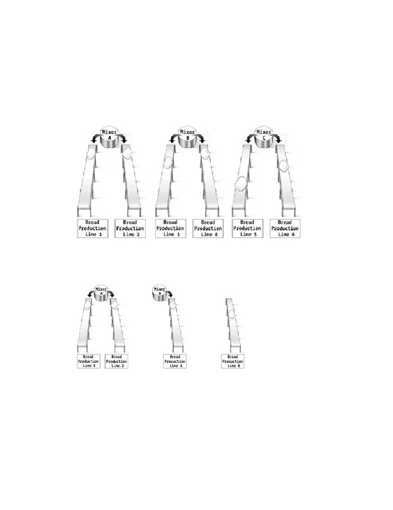
Chapter 1: Controlling Your Environment Makes
You Happy
My first real job was in a big industrial bakery that churned out hundreds of thousands of
loaves of bread every night. The bakery was designed to have six bread production lines.
For every two production lines, there was a dough mixer, which produced these gigantic 180
kg lumps of dough that could be dumped to the left or the right, as shown in Figure 1-1.
Figure 1-1: The bakery, as designed
Well, this was the design. In reality, Mixer C hadn't been built yet, nor had lines three or five.
So the arrangement was more like Figure 1-2.
Figure 1-2: The bakery, as implemented
Alert readers will be wondering, "how did the dough get from Mixer B to production line six?"
Well, that's where Wee Joel came in. My job, if you can believe this, was to stand to the left
of Mixer B, then catch these walrus-sized lumps of dough as they flew out of the mixer in a
big bathtub with wheels, then roll the bathtub over to production line six, and using a
winchlike device, heave the dough onto the line. I had to do this once every ten minutes from
about 10 P.M. until 4 A.M.
There were other complications. Line six couldn't really handle 180 kg of dough all at once,
so I had to slice each blob with a giant knife into about ten pieces. I don't even want to go
into how absurdly difficult that was.
5
The first few days, of course, I was terrible at this job. It seemed nearly impossible. Every
bone in my body ached. My blisters had blisters. I had aches in places where I didn't know I
had places.
At first I just couldn't keep line six supplied with dough. Every time I got behind in supplying
the dough, there was a big gap on the assembly line. When the gap rolled into the oven, the
oven (expending a constant amount of energy over a reduced amount of dough) started to
heat up more, which burnt the bread.
Sometimes line six would get gummed up and stop running, but the mixer went right on
ahead producing dough for me and I ran the risk of running out of enough bathtubs-with-
wheels to store the dough in. When this happened, I had to clean and oil the floor and
actually dump the dough onto the floor to be scraped up later. Not that this worked very well,
because if the dough got older than about thirty minutes it would ferment into unintentional
sourdough. If this happened, you had to chop it up into five kg pieces and put one piece into
the mixture for each future batch.
After a week or so, I became good enough at the routine that I actually had, if I remember
correctly, two minutes free for every ten-minute dough-cycle to rest. I figured out a precise
schedule and learned how to tell the mixer to skip a batch when the production line stopped.
And I started to think about why, as the beer commercial asks, some days are better than
others.
One day, thinking about this problem, I noticed that one of the bathtubs-with-wheels had
pretty lousy wheels that wouldn't turn well. Sometimes this bathtub did not go where I
pushed it, and bumped into things. This was a small frustration. Sometimes, as I was pulling
the chain to winch up the bathtub, I scraped myself—just a little bit— on a splinter of metal
on the chain. Another small frustration. Sometimes, as I ran with an empty bathtub to catch a
dough emission about to fly out of the mixer, I slipped on a little bit of oil on the floor. Not
enough to fall, mind you, just a tiny slip producing a tiny frustration.
Other times, I would have tiny victories. I learned to time the dough production perfectly so
that fresh dough would arrive just seconds before the previous batch ran out. This
guaranteed the freshest dough and made the best bread. Some of the victories were even
tinier: I would spot a strawberry-sized blob of dough that had flung off of the mixer and
attached itself to the wall, and I would scrape it off with a paint scraper I carried in my back
pocket and throw it in the trash. Yes! When slicing the dough into pieces, sometimes it just
sliced really nicely and easily. These were tiny moments of satisfaction when I managed to
control the world around me, even in the smallest way.
So that's what days were like. A bunch of tiny frustrations, and a bunch of tiny successes.
But they added up. Even something that seems like a tiny, inconsequential frustration affects
your mood. Your emotions don't seem to care about the magnitude of the event, only the
quality.
And I started to learn that the days when I was happiest were the days with a lot of small
successes and few small frustrations.
Years later, when I got to college, I learned about an important theory of psychology called
Learned Helplessness, developed by Dr. Martin E. P. Seligman. This theory, backed up by
years of research, is that a great deal of depression grows out of a feeling of helplessness:
the feeling that you cannot control your environment.
The more you feel that you can control your environment, and that the things you do are
actually working, the happier you are.
6
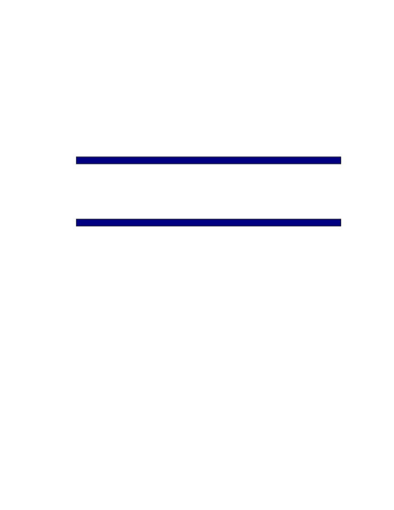
When you find yourself frustrated, angry, and upset, it's probably because something
happened that you could not control: even something small. The space bar on your
keyboard is not working well. When you type, some of the words are stuck together. This
gets frustrating, because you are pressing the space bar and nothing is happening. The key
to your front door doesn't work very well. When you try to turn it, it sticks. Another tiny
frustration. These things add up; these are the situations that make us unhappy on a day-to-
day basis. Even though they seem too petty to dwell on (I mean, there are people starving in
Africa, for heaven's sake, I can't get upset about space bars), nonetheless, they change our
moods.
Let's pause for a minute and go back to computers.
We're going to invent a typical Windows power user named Pete. When you're thinking
about user interfaces, it helps to keep imaginary users in mind. The more realistic the
imaginary user is, the better you'll do in thinking about how they use your product.
Pete is an accountant for a technical publisher who has used Windows for six years at
the office and a bit at home. He is fairly competent and technical. He installs his own
software; he reads PC Magazine; and he has even programmed some simple Word
macros to help the secretaries in his office send invoices. He's getting a cable modem at
home. Pete has never used a Macintosh. "They're too expensive," he'll tell you. "You
can get a 733 MHz PC with 128 Meg RAM for the price of…" OK, Pete. We get it.
One day, Pete's friend Gena asks him for some computer help. Now, Gena has a Macintosh
iBook because she loves the translucent boxes. When Pete sits down and tries to use the
Macintosh, he quickly becomes frustrated. "I hate these things," he says. He is finally able to
help Gena, but he's grumpy and unhappy. "The Macintosh has such a clunky user interface."
Clunky? What's he talking about? Everybody knows that the Macintosh has an elegant user
interface, right? The very paradigm of ease-of-use?
Here's my analysis of this mystery.
On the Macintosh, when you want to move a window, you can grab any edge with the
mouse and move it. On Windows, you must grab the title bar. If you try to grab an edge, the
window will be reshaped. When Pete was helping Gena, he tried to widen a window by
dragging the right edge. Frustratingly, the whole window moved rather than resizing as he
expected.
On Windows, when a message box pops up, you can hit Enter or the space bar to dismiss
the message box. On the Mac, space doesn't work. You usually need to click with the
mouse. When Pete got alerts, he tried to dismiss them using the space bar like he's been
doing subconsciously for the last six years. The first time, nothing happened. Without even
being aware of it, Pete banged the space bar harder since he thought that the problem must
be that the Mac did not register his tapping the space bar. Actually, it did—but it didn't care!
Eventually he used the mouse. Another tiny frustration.
Pete has also learned to use Alt+F4 to close windows. On the Mac, this actually changes
the volume of the speakers. At one point, Pete wanted to click on the Internet Explorer icon
on the desktop, which was partially covered by another window. So he hit Alt+F4 to close
the window and immediately double-clicked where the icon would have been. The Alt+F4
raised the volume on the computer and didn't close the window, so his double click actually
7
went to the Help button in the toolbar on the window (which he wanted closed anyway), and
that started bringing up a help window, painfully slowly, so now he's got two windows open
that he has to close. Another small frustration, but, boy, does it add up.
At the end of the day, Pete is grumpy and angry. When he tries to control things, they don't
respond. The space bar and the Alt+F4 key "don't work"—for all intents and purposes it's
as if those keys were broken. The window disobeys when he tries to make it wider by
playing a little prank: it just moves over instead of widening. Bad window. Even if the whole
thing is subconscious, the subtle feeling of being out of control translates into helplessness,
which translates into unhappiness. "I like my computer," Pete says. "I have it all set up so
that it works exactly the way I like it. But these Macs are clunky and hard to use. It's an
exercise in frustration. If Apple had been working on MacOS all these years instead of
messing around with Newtons, their operating system wouldn't be such a mess."
Right, Pete. We know better. His feelings come despite the fact that the Macintosh really is
quite easy to use—for Mac users. To close a window, it's totally arbitrary which key you
press. The Microsoft programmers who were, presumably, copying the Mac interface
probably thought that they were adding a cool new feature in letting you resize windows by
dragging any edge. And the MacOS 8 programmers probably thought that they were adding
a cool new feature when they let you move windows by dragging any edge.
Most flame wars you read about user interface issues focus on the wrong thing. Windows is
better because it gives you more ways to resize the window. So what? That's missing the
point. The point is, does the UI respond to the user in the way in which the user expected it
to respond? If it didn't, the user is going to feel helpless and out of control, the same way I
felt when the wheels of the dough-bathtub didn't turn the way I pushed them, and I bumped
into a wall. Bonk.
UI is important because it affects the feelings, the emotions, and the mood of your users. If
the UI is wrong and the user feels like they can't control your software, they literally won't be
happy and they'll blame it on your software. If the UI is smart and things work the way the
user expected them to work, they will be cheerful as they manage to accomplish small goals.
Hey! I ripped a CD! It just worked! Nice software!!
To make people happy, you have to let them feel like they are in control of their environment.
To do this, you need to correctly interpret their actions. The interface needs to behave in the
way they expect it to behave.
Thus, the cardinal axiom of all user interface design:
A user interface is well designed when the program behaves exactly how
the user thought it would.
As Hillel said, everything else is commentary. All the other rules of good UI design are just
corollaries.
8
Chapter 2: Figuring Out What They Expected
Overview
When I was in college many years ago, a friend of mine down the hall pulled an all-nighter. A
critical term paper was due the next day, and he stayed up until 6 A.M. banging away on his
Macintosh. Finally, bleary-eyed, he turned off the computer and tried to catch a couple of
hours of sleep before the paper was due.
Yep.
He turned off the computer.
Notice I didn't say that he saved his work and turned off the computer. At 6 A.M., he forgot
about that little thing.
At about 7:45 A.M., he came knocking on my dorm room door in despair. "Um, you know
computers," he was practically crying. "Can't I get my paper back?"
"You didn't save it at all?" I asked.
"Nope."
"Never? All night long you never once hit ‘Save?’"
"No. It was still called ‘Untitled.’ But it's in there somewhere, isn't it?"
The Macintosh in its WYSIWYG glory simulates the act of typing on a piece of paper so
perfectly that nothing interfered with my friend's sad idea that his paper was in there,
somewhere. When you write on a piece of paper, that's it! Done! The paper is now written.
There's no Save operation for paper.
A new user who sits down to use a program does not come with a completely blank slate.
They have some expectations of how they think the program is going to work. This is called
the user model: it is their mental understanding of what the program will do for them.
If they've never used a computer before, and the computer shows them what looks like a
piece of paper and lets them type on it, then they are completely justified in assuming that
they won't need to save their work.
Experienced users have user models, too: if they've used similar software before, they will
assume it's going to work like that other software. If you've used WordPerfect but not Word,
when you sit down to use Word, you assume that you must save.
The program, too, has a model, only this one is encoded in bits and will be faithfully
executed by the CPU. This is called the program model, and it is The Law. Nothing short of
electrical storms and cosmic rays can convince a CPU to disobey the program model.
Now, remember the cardinal axiom from Chapter 1? You should have memorized it by now:
A user interface is well designed when the program behaves exactly how
the user thought it would.
Another way of saying this is:
9
A user interface is well designed when the program model conforms to the
user model.
That's it. Almost all good user interface design comes down to bringing the program model
and the user model in line. The Macintosh UI would have been more successful (especially
for my poor friend) if it saved your "unsaved" work for you. Of course, in 1985, the slow
speed of floppy disks made this impractical. But in 1988, by which time everybody had hard
drives, this became inexcusable. To this day, most popular software doesn't automatically
save your work.
Let's look at another example. In Microsoft Word (and most word processors), when you put
a picture in your document, the picture is actually embedded in the same file as the
document itself. You can create the picture, drag it into the document, then delete the
original picture file, but the picture will still remain in the document.
Now, HTML doesn't let you do this. HTML documents must store their pictures in a separate
file. If you take a user who is used to word processors and doesn't know anything about
HTML, then sit them down in front of a nice WYSIWYG HTML editor like Microsoft
FrontPage, they will almost certainly think that the picture is going to be stored in the file.
Call this user model inertia, if you will.
So, we have an unhappy conflict of user model (the picture will be embedded) versus
program model (the picture must be in a separate file), and the UI is bound to cause
problems.
If you're designing a program like FrontPage, you've just found your first UI problem. You
can't really change HTML; after all, it's an international standard. Something has to give to
bring the program model in line with the user model.
You have a couple of choices. You can try to change the user model. This turns out to be
remarkably hard. You could explain things in the manual, but everybody knows that users
don't read manuals, and they probably shouldn't have to. Or, you can pop up a little dialog
box explaining that the image file won't be embedded—but this has two problems: it's
annoying to sophisticated users; and users don't read dialog boxes, either. We'll talk more
about this in Chapter 9.
So, if the mountain won't come to Muhammad, Muhammad must go to the mountain. Your
best choice is almost always going to be to change the program model, not the user model.
Perhaps when the user inserts picture, the program should make a copy of the picture in a
subdirectory beneath the document file—this, at least, conforms to the user's idea that the
picture is copied (and the original can safely be deleted).
How Do I Know What the User Model Is?
This turns out to be relatively easy. Just ask some users! Pick five random people in your
office, or friends, or family, and tell them what your program does in general terms ("it's a
program for making Web pages"). Then describe the situation: "You've got a Web page that
you're working on and a picture file named Picture.JPG. You insert the picture into your
Web page." Then ask them some questions to try and guess their user model. "Where did
the picture go? If you delete the Picture.JPG file, will the Web page still be able to show
the picture?"
A friend of mine is working on a photo album application. After you insert your photos, the
application shows you a bunch of thumbnails: wee copies of each picture. Now, generating
these thumbnails takes a long time, especially if you have a lot of pictures, so he wants to
store the thumbnails on the hard drive somewhere so that they only have to be generated
10
once. There are a lot of ways he could do this. They could all be stored in one large file
called Thumbnails in someplace annoying like C:\. They could all be stored in separate
files in a subdirectory called Thumbnails. They might be marked as hidden files in the
operating system so that users don't know about them. My friend chose one way of doing it
that he thought was the best tradeoff: he stored the thumbnail of each picture,
picture.JPG, in a new file named picture_t.JPG within the same directory. If you made
an album with thirty pictures, when you were finished, there would be sixty files in the
directory including the thumbnails!
You could argue for weeks about the merits and demerits of various picture-storing
schemes, but as it turns out, there's a more scientific way to do it. Just ask a bunch of users
where they think the thumbnails are going to be stored. Of course, many of them won't know
or won't care, or they won't have thought about this. But if you ask a lot of people, you'll start
to see some kind of consensus. As it turns out, not very many people expected the
picture_t.JPG file, so he changed the program to create a Thumbnails subdirectory.
The popular choice is the best user model, and it's up to you to make the program model
match it.
The next step is to test your theories. Build a model or prototype of your user interface and
give some people tasks to accomplish. The model can be extremely simple: sometimes it's
enough to draw a sloppy picture of the user interface on a piece of paper and walk around
the office asking people how they would accomplish x with the "program" you drew.
As they work through the tasks, ask them what they think is happening. Your goal is to figure
out what they expect. If the task is to "insert a picture," and you see that they are trying to
drag the picture into your program, you'll realize that you had better support drag and drop. If
they go to the Insert menu, you'll realize that you had better have a Picture choice in the
Insert menu. If they go to the Font toolbar and replace the word "Times New Roman" with
the words "Insert Picture", you've found one of those old relics who hasn't been introduced to
GUIs yet and is expecting a command-line interface.
How many users do you need to test your interface on? The scientific approach seems like it
would be "the more, the better." If testing on five users is good, testing on twenty users is
better!
But that approach is flat-out wrong. Almost everybody who does usability testing for a living
agrees that five or six users is all you need. After that, you start seeing the same results
again and again, and any additional users are just a waste of time. The reason being that
you don't particularly care about the exact numerical statistics of failure. You simply want to
discover what "most people" think.
You don't need a formal usability lab, and you don't really need to bring in users "off the
street"—you can do "fifty-cent usability tests" where you simply grab the next person you see
and ask them to try a quick usability test. Make sure you don't spill the beans and tell them
how to do things. Ask them to think out loud and interview them using open questions to try
to discover their mental model.
If Your Program Model Is Nontrivial, It's Probably Not the Same
As the User Model
When I was six and my dad brought home one of the world's first pocket calculators, an HP-
35, he tried to convince me that it had a computer inside it. I thought that was unlikely. All the
computers on Star Trek were the size of a room and had big reel-to-reel tape recorders. I
tried to convince my dad that the calculator worked simply by having a straightforward
11
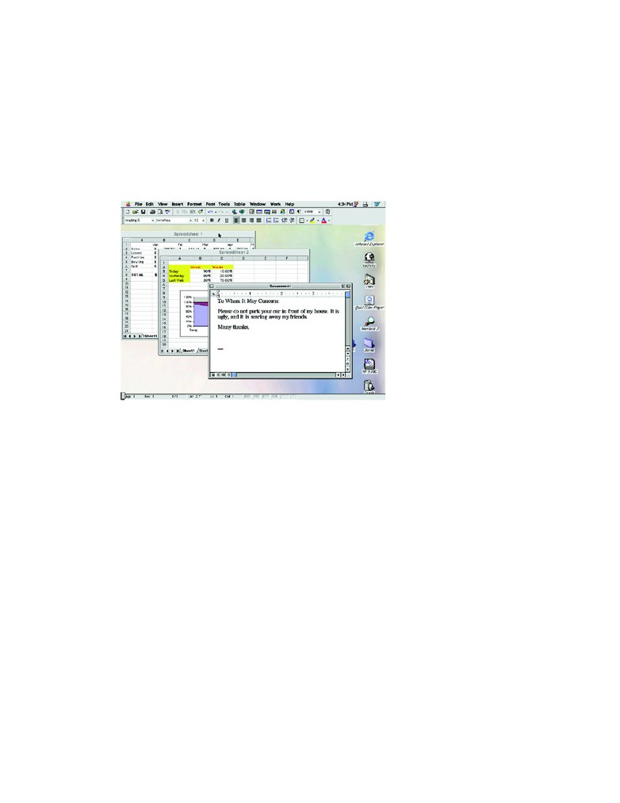
correlation between the keys on the keypad and the individual elements of the LED display,
which happened to produce mathematically correct results. (Hey, I was six.)
An important rule of thumb is that user models aren't very complex. When people have to
guess how a program is going to work, they tend to guess simple things rather than
complicated things.
Sit down at a Macintosh. Open two Excel spreadsheet files and one Word document file, as
shown in Figure 2-1.
Figure 2-1: Guess what happens when you click on Spreadsheet 1?
Almost any novice user would guess that the windows are independent. They look
independent.
The user model says that clicking on Spreadsheet 1 will bring that window to the front. What
really happens is that Spreadsheet 2 comes to the front, as shown in Figure 2-2, a frustrating
surprise for almost anybody.
12
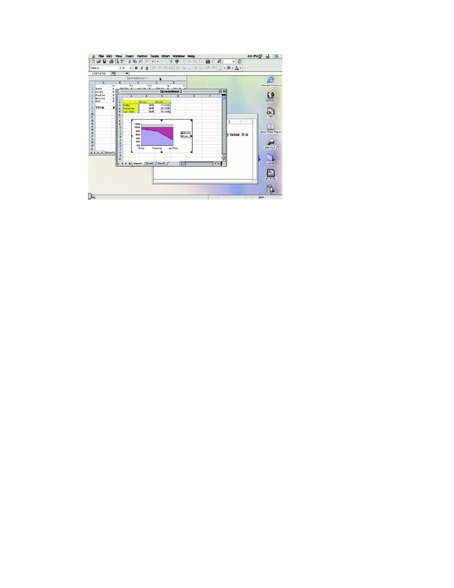
Figure 2-2: Wrong! Microsoft Excel's program model includes the bizarre and unlikely
concept of an invisible sheet that all the other sheets are glued onto.
As it turns out, Microsoft Excel's program model says, "you have these invisible sheets, like
cellophane, one for each application. The windows are ‘glued’ to those invisible sheets.
When you bring Excel to the foreground, you are really clicking on the cellophane, so all the
other windows from Excel should move forward too without changing their order."
Riiiiiiiiight. Invisible sheets. What are the chances that the user model included the concept
of invisible sheets? Probably zero. The user model is a lot simpler: "The windows are like
pieces of paper on a desk." End of story. So new users are inevitably surprised by Excel's
behavior.
Another example from the world of Microsoft Windows concerns the Alt+Tab key
combination, which switches to the "next" window. Most users would probably assume that it
simply rotates among all available windows. If you have windows A, B, and C, with A active,
Alt+Tab should take you to B. Pressing Alt+Tab again would take you to C. Actually, what
happens is that the second Alt+Tab takes you back to A. The only way to get to C is to
hold down Alt and press Tab twice. It's a nice way to toggle between two applications, but
almost nobody figures it out because it's a slightly more complicated model than the rotate-
among-available-windows model.
Users will assume the simplest model possible.
It's hard enough to make the program model conform to the user model when the models
are simple. When the models become complex, it's even more unlikely. So pick the simplest
model possible.
13
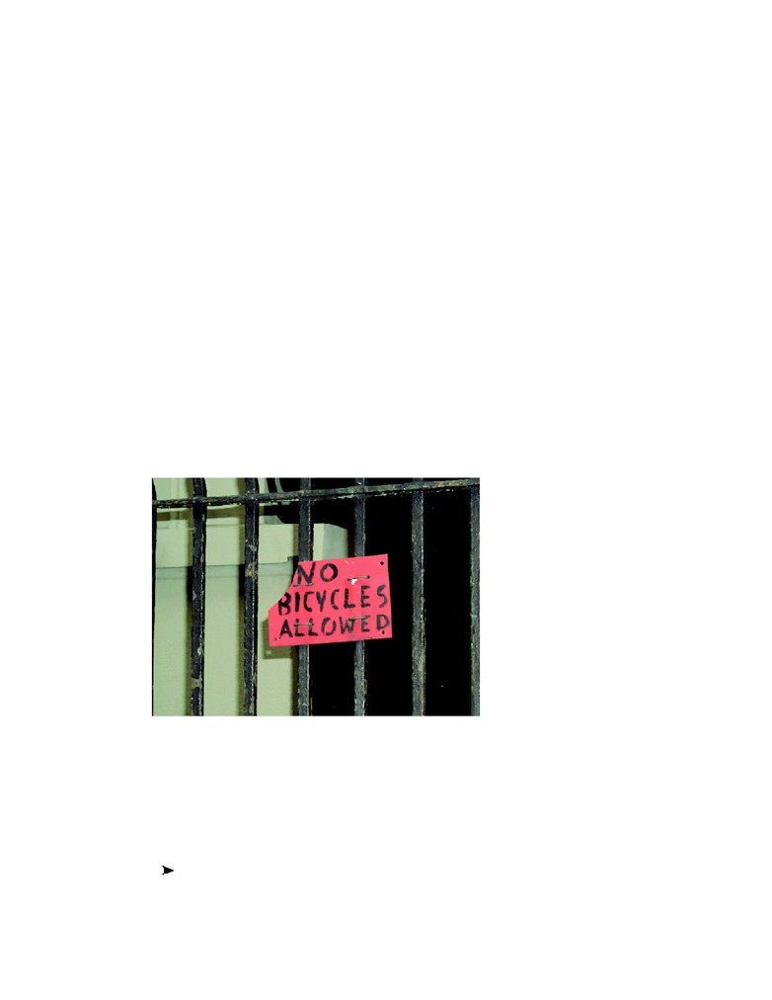
Chapter 3: Choices
When you go into a restaurant and see a sign that says "No Dogs Allowed," you might think
that sign is purely proscriptive: Mr. Restaurant doesn't like dogs around, so when he built the
restaurant he put up that sign.
If that was all that was going on, there would also be a "No Snakes" sign; after all, nobody
likes snakes. And a "No Elephants" sign, because they break the chairs when they sit down.
The real reason that sign is there is historical: it is a historical marker that indicates that
people used to try to bring their dogs into the restaurant.
Most prohibitive signs are there because the proprietors of an establishment were sick and
tired of people doing x, so they made a sign asking them to please not. If you go into one of
those fifty-yearold Ma-and-Pa diners like the Yankee Doodle in New Haven, the walls are
covered with signs saying things like "Please don't put your knapsack on the counter"—more
anthropological evidence that people used to put their knapsacks on the counter a lot. By the
yellowing of the sign, you can figure out when knapsacks were popular among local
students.
Sometimes it's a bit tricky to figure out the history behind the sign. "Please do not bring glass
bottles into the park" must mean that somebody cut themselves stepping on broken glass
while walking barefoot through the grass once. It's a good bet they sued the city, and now
the city puts up signs.
Figure 3-1: Most signs, especially handwritten ones, are historical records.
Legal contracts contain archaeological artifacts, too. The reason legal agreements are so
dang complicated and say dumb things like "worker, laborer, operative, roustabout,
workhand, workingman, workman, artisan, craftsman, handicraftsman, mechanic, or
employee" instead of just "worker" is because there was probably some lawsuit in 1873
where someone got out of a contract because he successfully argued in court that he was a
roustabout, not a worker.
Software has a similar archaeological record, too: it's called the Options dialog. Pull up the
Tools Options dialog box and you will see a history of the heated arguments that the
software designers had about the design of the product. Should we automatically open the
last file that the user was working on? Yes! No! There is a two-week debate, nobody wants
14
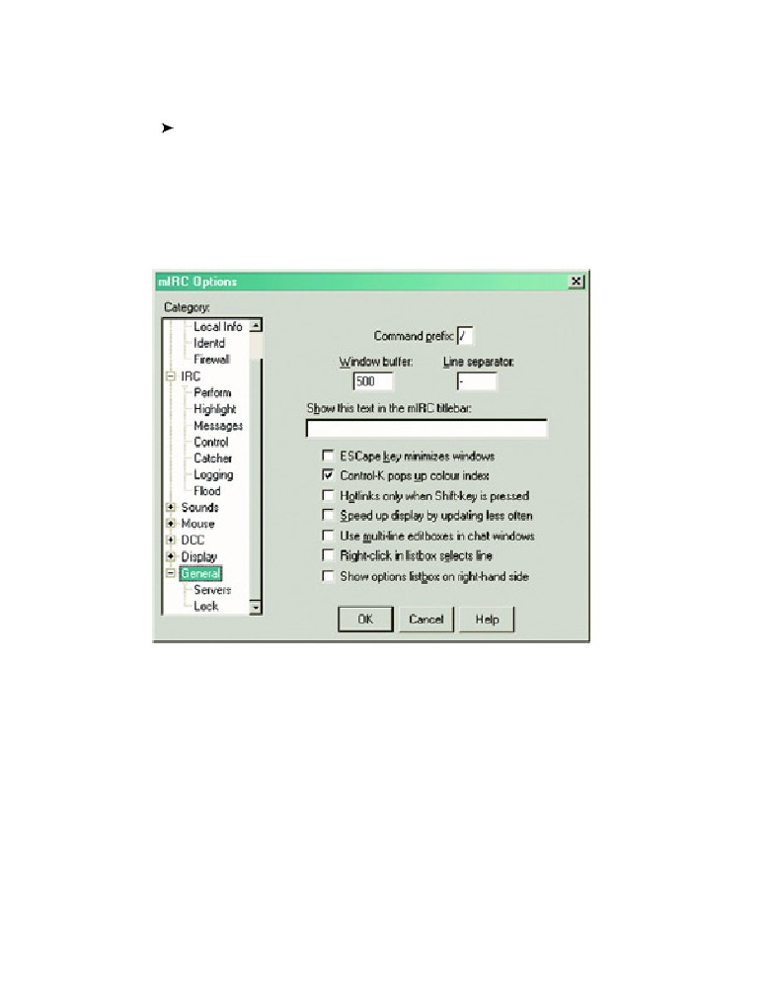
to hurt anyone's feelings, the programmer puts in an #ifdef in self-defense while the
designers fight it out. Eventually they just decide to make it an option. One more thing in
Tools Options can't hurt, can it?
It doesn't even have to be a debate between two people: it can be an internal dilemma. "I
just can't decide if we should optimize the database for size or optimize for speed." Either
way, you wind up with things like what is unequivocally the most moronic "wizard" dialog in
the history of the Windows operating system. This dialog is so stupid that it deserves some
kind of award. A whole new category of award. It's the dialog that comes up when you try to
find something in Help, as shown in Figure 3-3.
Figure 3-2: Options dialogs often become nothing more than a journal of the designer's
indecision.
15
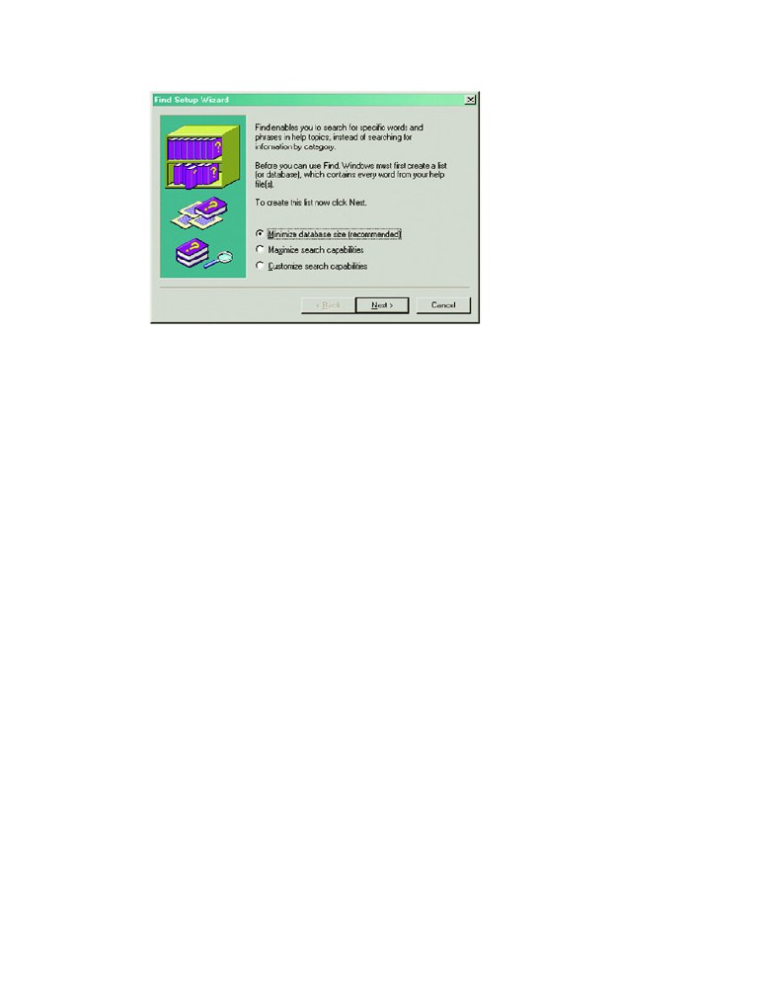
Figure 3-3: The most moronic wizard dialog Microsoft has ever shipped
The first problem with this dialog is that it's distracting. You are trying to find help in the help
file. You do not, at that particular moment, give a hoot whether the database is small, big,
customized, or chocolate-covered. In the meanwhile, this wicked, wicked dialog is giving you
pedantic little lectures that it must create a list (or database). There are about three
paragraphs there, most of which are completely confusing. There's the painfully awkward
phrase "your help file(s)". You see, you may have one or more files. As if you cared at this
point that there could be more than one. As if it made the slightest amount of difference. But
the programmer who worked on that dialog was obviously distressed beyond belief at the
possibility that there might be more than one help file(s) and it would be incorrect to say help
file, now, wouldn't it?
Don't even get me started about how most people who want help are not the kinds of people
who understand these kinds of arcana. Or that even advanced users, programmers with
Ph.D.s in Computer Science who know all about full text indexes, would not be able to figure
out just what the heck they are really being asked to choose from.
To add insult to injury, this isn't even a dialog… it's a wizard (the second page of which just
says something like "thank you for submitting yourself to this needless waste of your time,"
to paraphrase). And it's pretty obvious that the designers had some idea as to which choice
is best; after all, they've gone to the trouble of recommending one of the choices.
Which brings us to our second major rule of user interface design:
Every time you provide an option, you're asking the user to make a decision.
Asking the user to make a decision isn't in itself a bad thing. Freedom of choice can be
wonderful. People love to order espresso-based beverages at Starbucks because they get to
make so many choices. Grande, half-caf, skim Mocha Valencia with whip. Extra hot!
The problem comes when you ask them to make a choice that they don't care about. In the
case of help files, people are looking at the help file because they are having trouble
accomplishing something they really want to accomplish, like making a birthday invitation.
Their birthday invitation task has been unfortunately interrupted because they can't figure out
how to print upside-down balloons, or whatever, so they go to the help file. Now, some
annoying help-index-engine-programmer at Microsoft with an inflated idea of his own
importance in the whole scheme of things has the audacity, the chutzpah, to interrupt this
user once again and start teaching them things about making lists (or databases). This
16
second level of interrupting is completely unrelated to birthday invitations, and it's simply
guaranteed to perplex and eventually piss off the user.
And believe you me, users care about a lot fewer things than you might think. They are using
your software to accomplish a task. They care about the task. If it's a graphics program, they
probably want to be able to control every pixel to the finest level of detail. If it's a tool to build
a Web site, you can bet that they are obsessive about getting the Web site to look exactly
the way they want it to look.
They do not, however, care one whit if the program's own toolbar is on the top or the bottom
of the window. They don't care how the help file is indexed. They don't care about a lot of
things, and it is the designers' responsibility to make these choices for them so that they
don't have to. It is the height of arrogance for a software designer to inflict a choice like this
on the user simply because the designer couldn't think hard enough to decide which option
is really better. (It's even worse when you try to cover up the fact that you're giving the user a
difficult choice by converting it to a wizard, as the WinHelp people did. As if the user is a
moron who needs to take a little two-step mini-course in the choice they are being offered so
that they can make an educated decision.)
It has been said that design is the art of making choices. When you design a trash can for
the corner, you have to make choices between conflicting requirements. It needs to be
heavy so it won't blow away. It needs to be light so the trash collector can dump it out. It
needs to be large so it can hold a lot of trash. It needs to be small so it doesn't get in
peoples' way on the sidewalk. It needs to be open so people can throw trash in it. It needs to
be closed so trash doesn't blow out on windy days.
When you are designing and you try to abdicate your responsibility by forcing the user to
decide something, you're not doing your job. Someone else will make an easier program that
accomplishes the same task with fewer intrusions, and most users will love it.
When Microsoft Excel 3.0 came out in 1990, it was the first Windows application to sport a
new feature called a toolbar. It was a sensible feature, people liked it, and everybody copied
it—to the point that it's unusual to see an application without one any more.
The toolbar was so successful that the Excel team did field research using a special version
of the software which they distributed to a few friends; this version kept statistics on what the
most frequently used commands were and reported them back to Microsoft. For the next
version, they added a second row of toolbar buttons, this time containing the most frequently
used commands. Great.
The trouble was, they never got around to disbanding the toolbar team, who didn't seem to
know when to leave good enough alone. They wanted you to be able to customize your
toolbar. They wanted you to be able to drag the toolbar anywhere on the screen. Then, they
started to think about how the menu bar is really just a glorified tool-bar with words instead of
icons, so they let you drag the menu bar anywhere you wanted on the screen, too.
Customizability on steroids. Problem: nobody cares! I've never met anyone who wants their
menu bar anywhere except at the top of the window. But here's the (bad) joke: if you try to
pull down the File menu and accidentally grab the menu bar a tiny bit too far to the left, you
yank off the whole menu bar, dragging it to the only place you could not possibly want it to
be: blocking the document you're working on as shown in Figure 3-4.
17
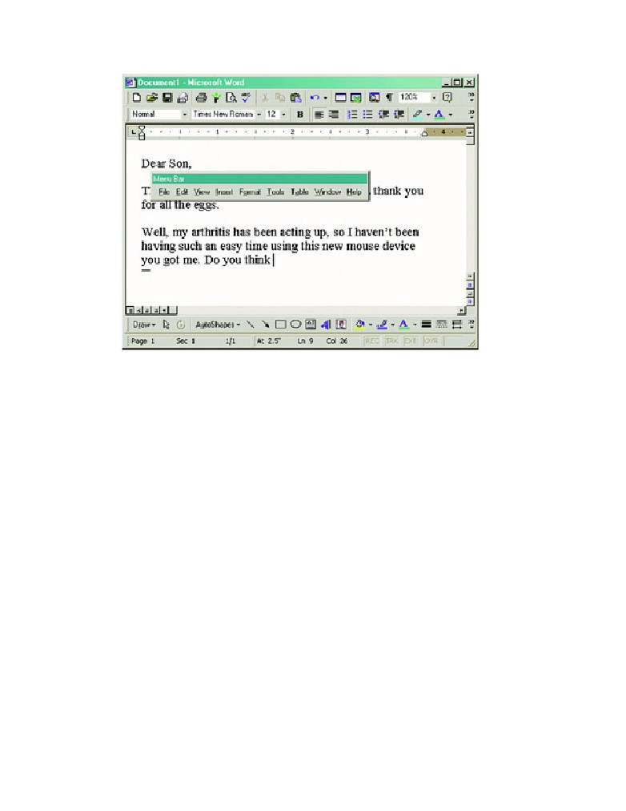
Figure 3-4: Miss the File menu by a couple of pixels and the whole menu bar comes
flying off.
How many times have you seen that? And once you've done this by mistake, it's not clear
what you did or how to fix it. So, here we have an option (moving the menu bar) that nobody
wants (ok, maybe 0.1% of all humans want it) but which gets in the way for almost
everybody.
One day a friend called me up. She was having trouble sending email. "Half the screen is
grey," she said.
Half the screen is grey?
It took me five minutes over the phone to figure out what had happened. She had
accidentally dragged the Windows toolbar to the right side of the screen, then accidentally
widened it as shown in Figure 3-5.
18
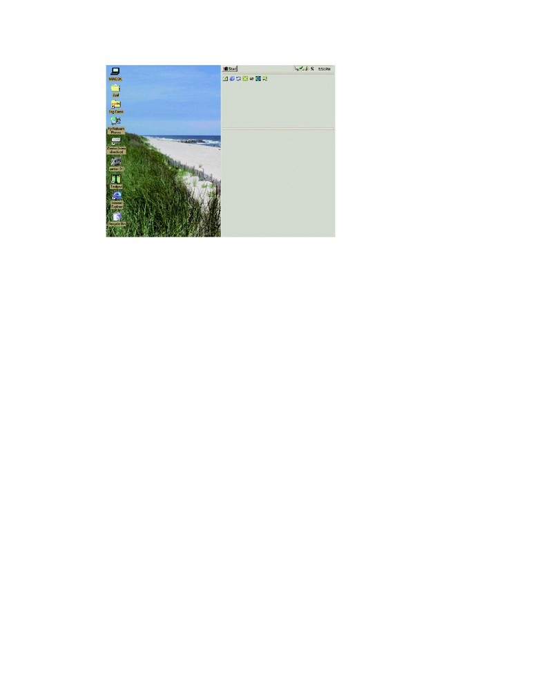
Figure 3-5: Half the screen is grey.
This is the kind of thing that nobody does on purpose. And there are a lot of computer users
out there who can't get themselves out of this kind of mess. Almost by definition, when you
accidentally reconfigure one of the options in your program, you don't know how to re-
reconfigure it. It's sort of shocking to see how many people uninstall and then reinstall their
software when things start behaving wrong, because at least they know how to do that.
(They've learned to uninstall first, because otherwise all the broken customizations are likely
to just come back).
"But wait!" you say. "It's important to have options for advanced users who want to tweak
their environments!" In reality, it's not as important as you think. This reminds me of when I
tried to switch to a Dvorak keyboard. The trouble was, I don't use one computer. I use all
kinds of computers. I use other people's computers. I use three computers fairly regularly at
home and three at work. I use computers in the test lab at work. The trouble with
customizing your environment is that it just doesn't propagate, so it's not even worth the
trouble.
Most advanced users use several computers regularly; they upgrade their computer every
couple of years, and they reinstall their operating system every three weeks. It's true that the
first time they realized they could completely remap the keyboard in Word, they might have
changed everything around to be more to their taste. But as soon as they upgraded to
Windows 95, those settings were lost. Besides, they weren't the same at work. So eventually
they just stopped reconfiguring things. I've asked a lot of my power user friends about this;
hardly any of them do any customization other than the bare minimum necessary to make
their system behave reasonably.
Every time you provide an option, you're asking the user to make a decision. This means
that they will have to stop and think. That's not necessarily a bad thing, but in general, you
should always try to minimize the number of decisions that people have to make.
This doesn't mean eliminate all choice. There are enough choices that users will have to
make anyway: the way their document will look, the way their Web site will behave, or
anything else that is integral to the work that the user is doing. In these areas, go crazy: it's
great to give people choices; by all means, the more the merrier.
There's another category of choice that people seem to like: the ability to change the visual
look of things without really changing the behavior. Everybody loves WinAmp skins;
everybody sets their desktop background to a picture. Since the choice affects the visual
19
look without affecting the way anything functions, and since users are completely free to
ignore the choice and get their work done anyway, this is a good use of options.
20
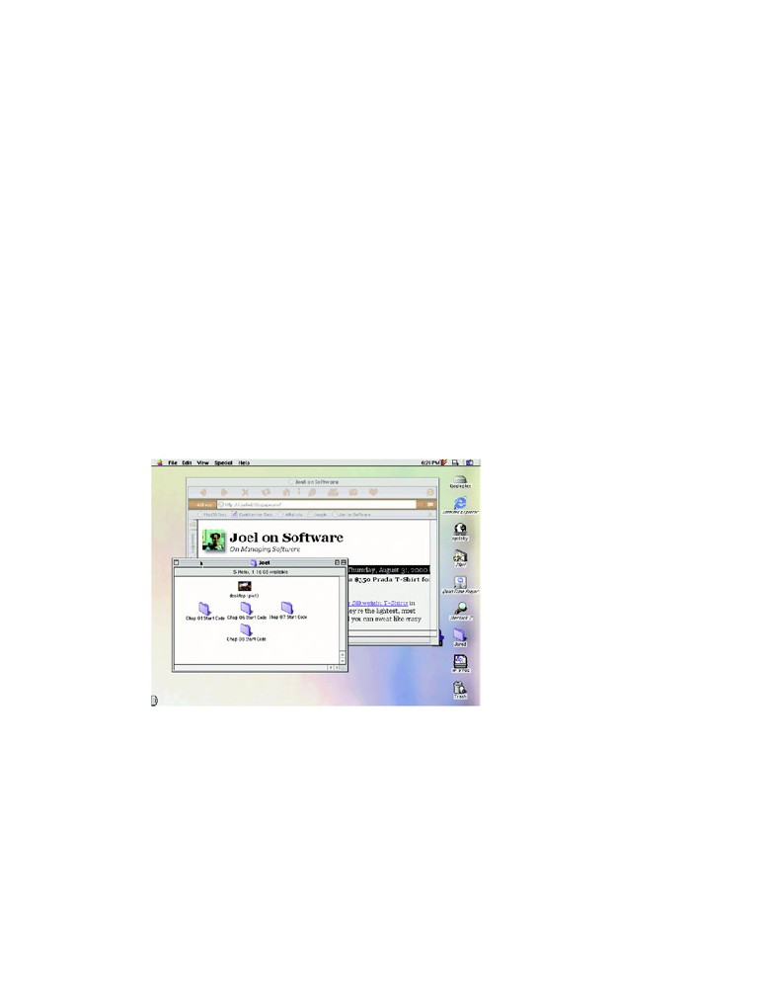
Chapter 4: Affordances and Metaphors
Overview
Developing a user interface where the program model matches the user model is not easy.
Sometimes, your users might not have a concrete expectation of how the program works
and what it's supposed to do. There is no user model.
When the user model is incomplete or wrong, the program can use
affordances or metaphors to show the user its model.
In these cases, you are going to have to find ways to give the user clues about how
something works. With graphical interfaces, a common way to solve this problem is with
metaphors. But not all metaphors are created equal, and it's important to understand why
metaphors work so you know if you've got a good one.
The most famous metaphor is the "desktop metaphor" used in Windows and the Macintosh
(see Figure 4-1). The computer screen behaves something like a real world desk. You have
these little folders with little files in them, which you can drag around into trash cans, and
cute little pictures of real world objects like printers. To the extent that this metaphor works,
it's because the little pictures of folders actually remind people of folders, which makes them
realize that they can put documents into them.
Figure 4-1: The classic desktop metaphor
Take a look at Figure 4-2, a screenshot from Kai's Photo Soap. Can you guess how to zoom
in?
21
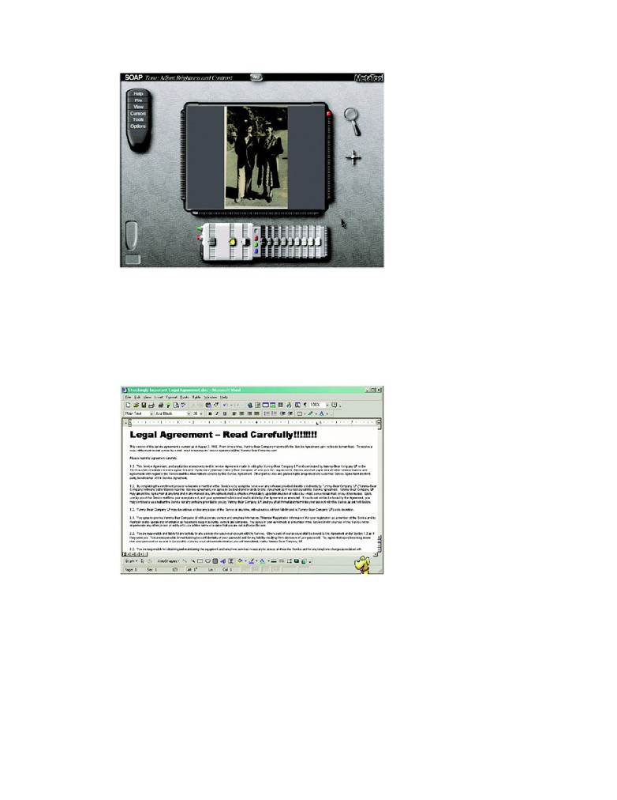
Figure 4-2: Can you guess how to zoom in with Kai's Photo Soap?
It's not very hard. The magnifying glass is a real world metaphor. People know what
magnifying glasses do. And there's no fear that the zoom operation is actually changing the
size of the underlying image, since that's not what magnifying glasses do.
A metaphor, even an imperfect one, works a lot better than none at all. Can you figure out
how to zoom in with Microsoft Word, as shown in Figure 4-3?
Figure 4-3: OK, now how do you zoom in with Microsoft Word?
Word has two tiny magnifying glasses in their interface. One of them is on the Print
Preview button, which actually zooms out, and the other is on the Document Map button,
whatever that is. The actual way to change the zoom level here is with the dropdown box
that is currently showing "100%." There's no attempt at a metaphor, so it's harder for users
to guess how to zoom. This is not necessarily a bad thing; zooming is probably not important
enough in a word processing application to justify as much screen space as Kai gives it. But
it's a safe bet that more Kai users will be able to zoom in than Word users.
Affordances
22
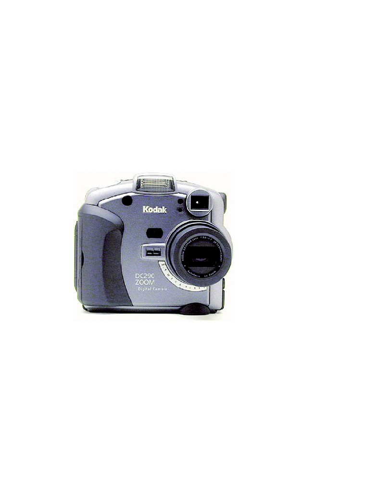
Well-designed objects make it clear how they work just by looking at them. Some doors have
big metal plates at arm-level. The only thing you can do to a metal plate is push it. You can't
pull it. You can't rotate it. In the words of usability expert Donald Norman, the plate affords
pushing. Other doors have big, rounded handles that just make you want to pull them. They
even imply how they want you to place your hand on the handle. The handle affords pulling.
It makes you want to pull it.
Other objects aren't designed so well and you can't tell what you're supposed to do. The
quintessential example is the CD jewel case, which requires you to place your thumbs just
so and pull in a certain direction. Nothing about the design of the box would indicate how
you're supposed to open it. If you don't know the trick, it's very frustrating, because the box
just won't open.
The best way to create an affordance is to echo the shape of the human hand in "negative
space." Look closely at the (excellent) Kodak DC-290 digital camera, shown in Figures 4-4
and 4-5.
Figure 4-4: The Kodak DC290 Digital Camera, front view. Notice the rubber grip at left
and the rubber nubbin in the lower right.
23
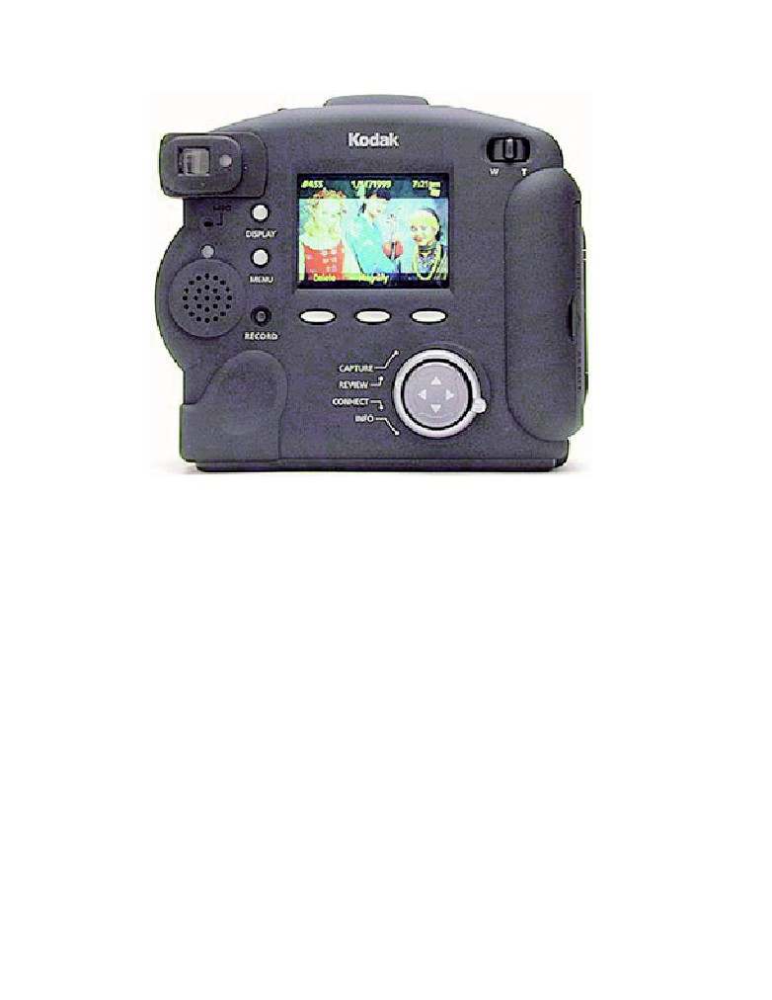
Figure 4-5: Back view. See the thumbprint in the lower left?
On the front, you can see a big rubber grip that looks like your right fingers should fit there.
Even smarter, on the back in the lower left corner you can see an indent that looks uncannily
like a thumbprint. When you put your left thumb there, your left index finger curls snugly on
the front of the camera, between the lens and another rubber nubbin. It provides a kind of
comforting feeling you haven't felt since you sucked your thumb (and curled your index
finger around your nose).
The Kodak engineers are just trying to persuade you to hold the camera with both hands, in
a position that ensures the camera will be more stable and even keeps stray fingers from
blocking the lens by mistake. All this rubber is not functional; its sole purpose is to
encourage you to hold the camera correctly.
Good computer UI uses affordances, too. About ten years ago, most push buttons went
"3D." Using shades of grey, they appear to pop out of the screen. This is not just to look
cool: it's important because 3D buttons afford pushing. They look like they stick out and they
look like the way to operate them is by clicking on them. Unfortunately, many Web sites
these days (unaware of the value of affordances) would rather have buttons that look cool
rather than buttons which look pushable; as a result, you sometimes have to hunt around to
figure out where to click. Look at the very top of the E*TRADE home page shown in Figure
4-6.
24
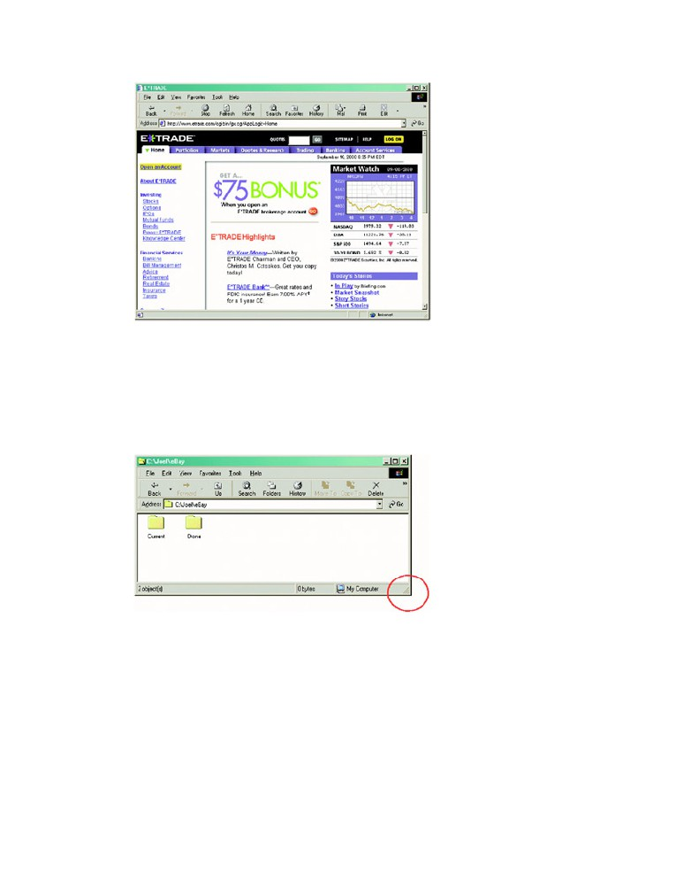
Figure 4-6: The E*TRADE home page.Which parts of the black banner are clickable?
On the black banner at the top, The GO and LOG ON buttons pop out and look like you can
click on them. The SITE MAP and HELP buttons don't look so clickable; in fact, they look
exactly like the QUOTES label, which isn't clickable.
About four years ago, many windows started sprouting three little ridges that look like a grip
on the lower right corner (see Figure 4-7).
Figure 4-7: The grip in the lower right corner affords dragging.
It looks like the kind of thing somebody would put on a slide switch to increase the friction. It
affords dragging. It just begs to be dragged to stretch the window.
Tabbed Dialogs
A problem that seems to vex programmers (especially the ones who neglected to buy this
book and read Chapter 3) is dialog boxes with just too many settings to fit on the screen.
The only way to deal with this is to create a dialog that changes dynamically. For example,
look closely at the Preferences dialog from Netscape Navigator shown in Figure 4-8.
25
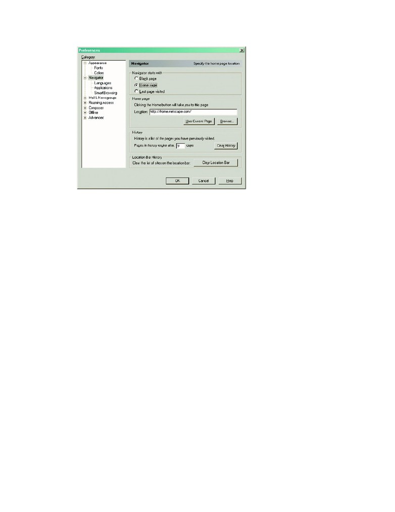
Figure 4-8: Netscape's way of dealing with too many options.
Now, you and I are elite programming hackers with a lot of experience with these kinds of
dialogs. So when we look at Figure 4-8, we immediately understand that choosing one of the
categories from the left hand part of the screen is going to magically change which options
are available on the right hand part of the screen.
For some reason, this type of indirection was incredibly logical to the programmers who
designed it, but many users didn't understand it. The problem? Well, most people are not
elite programming hackers.
Most people would never guess that choosing something from the list on the left is supposed
to change the contents of the dialog on the right: there's no visual reason to think that. In
fact, what most people think is that the list on the left is nothing more than another setting,
and they are afraid to touch it because it seems like a pretty scary setting that they don't
understand.
When you do usability tests with dialogs like that, and you ask people to change one of the
settings not actually shown on the main page (in this case, "Navigator"), you'll find that a
remarkable number of people just can't figure out how to do it. When Microsoft did a usability
test with a similar dialog from an old version of Microsoft Word, only 30% of the users
succeeded at the task. A full 70% simply gave up without accomplishing the task they were
given.
So, the Microsoft Word team switched to the famous tabbed dialogs like the one shown in
Figure 4-9.
26
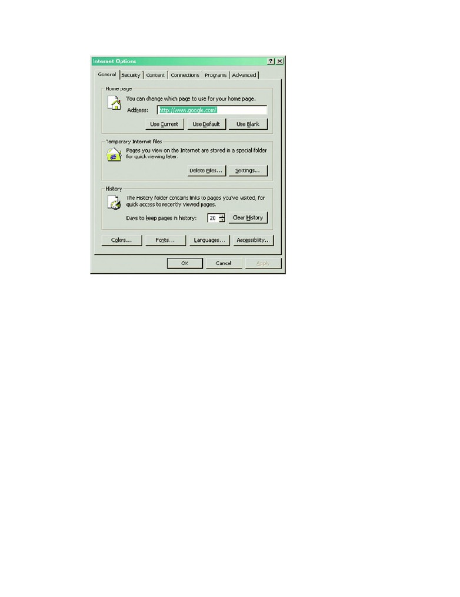
Figure 4-9: Internet Explorer uses tabs.
When they tried the tabbed dialogs in the usability lab, usability shot up from 30% to 100%.
Let me tell you from experience that there are just not a whole lot of things that you can do
that will improve your usability from 30% all the way to 100%.
Tabbed dialogs are a great affordance. It's really obvious from Figure 4-9 that you have six
tabs; it's really obvious which tab you're on, and it's really obvious how to switch to a
different tab. Given the remarkable success of this metaphor and the fact that the code for
tabbed dialogs is built into modern operating systems and available practically for free, it's a
wonder you still see applications that don't take advantage of them. These applications
suffer from actual, measurable, real world usability problems because they refuse to get with
the program.
27
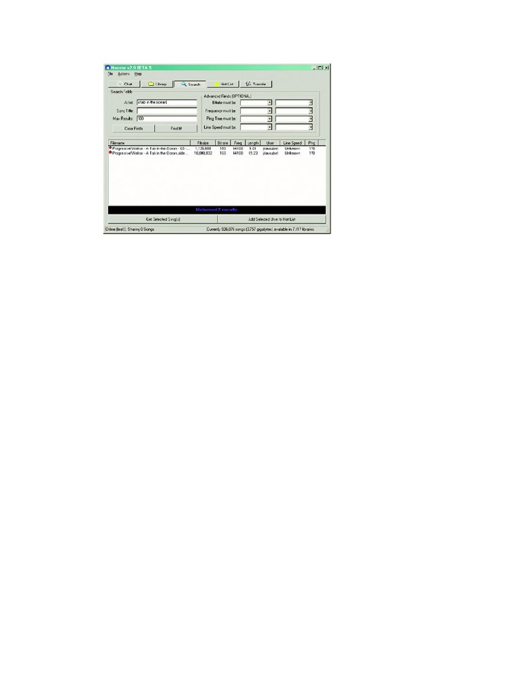
Figure 4-10: The Napster 2.0 user interface has five separate screens (Chat, Library,
Search, Hot List, and Transfer), and you use the buttons at the top to switch among
them. This is an obvious candidate for tabs. Here's the weird thing: the Napster code is
actually using the Windows tabbed dialog control, but for some reason, it's running in a
funny mode that displays as buttons rather than tabs. So Shawn Fanning, the Napster
programmer, could have literally flipped one bit to get a more usable interface.
28
Chapter 5: Broken Metaphors
Overview
Remember the briefcase from Windows 95? (See Figure 5-1.) That cute little icon that
occupied a square inch or so on everybody's desktop for a few years until Microsoft realized
that nobody wanted one? Nobody wanted one because it was a broken metaphor. It was
supposed to be a "briefcase" where you put files to take home. But when you took the files
home, you still had to put them on a floppy disk. So, do you put them in the briefcase or on a
floppy disk? I'm not sure. I never could get it to work.
Figure 5-1: Windows' unloved briefcase
A metaphor badly chosen is worse than no metaphor at all. Unfortunately, desktop user
interface designers feel that they're breaking some kind of law if they don't use metaphors,
so they would rather pick a wrong metaphor than go without.
When you use metaphors, try to make them behave in predictable ways like
objects in the real world.Violating reality is just confusing.
What's the purpose of a metaphor in the first place? To teach users what the program model
is so that the program model and the user model come into agreement. If you use the wrong
metaphor, you are actually teaching the user the wrong thing about how the program works,
so you're creating more trouble than you're solving. There's some historical evidence that the
Windows 95 briefcase metaphor just didn't work: later versions of Windows have tried to
compensate for the bad metaphor by forcing you to read a screen full of instructions
whenever you drag files into that dang doohickey.
Guess what? Nobody reads instructions. My new Cuisinart food processor must have three
hundred stickers on it that say "Do Not Even Think of Operating This Device without
Reading the Instructions, and That Means You!" Which, we know as anthropologists,
actually means that millions of people use Cuisinarts without reading the instructions. I'll go
into that more soon. For now, I'd like to talk about broken metaphors like the briefcase and
what a doggone nuisance they can be.
Obeying Physics
29
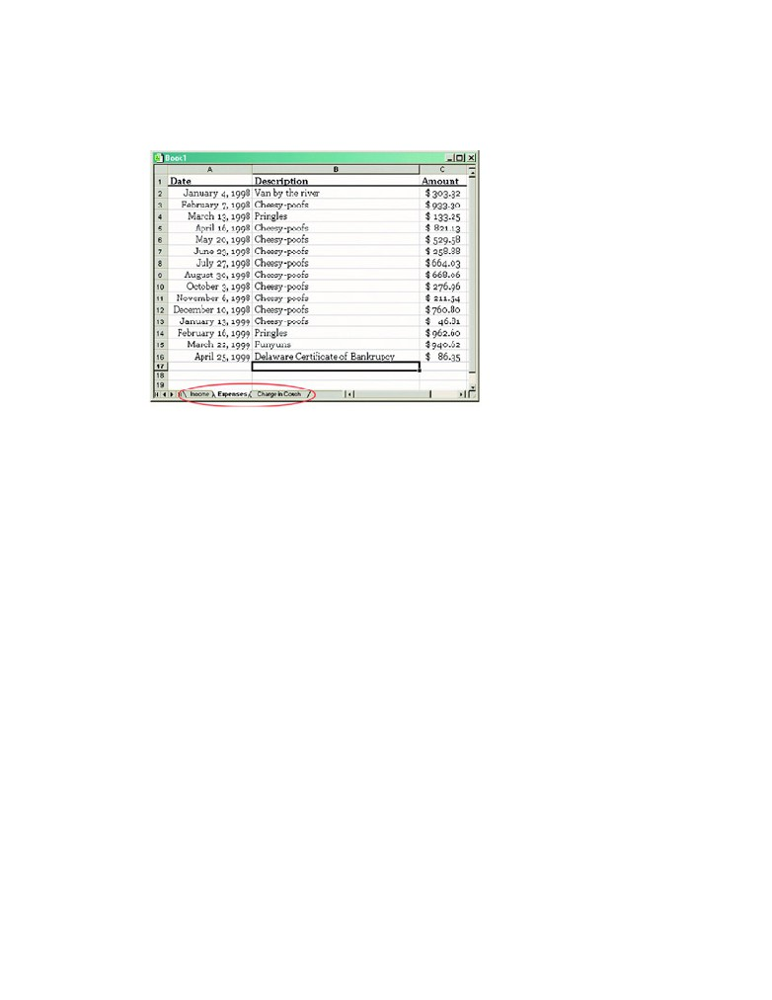
In Chapter 4, I talked about how nifty tabbed dialogs are. Microsoft Excel uses tabs to store
multiple sheets in a workbook as shown in Figure 5-2.
Figure 5-2: Microsoft Excel uses tabs to show multiple pages.
Tabs are kind of small, so people don't necessarily notice them there, but everyone knows
how they are expected to work and nobody has trouble using them. For example, in Figure
5-2 it's obvious that the "Income" sheet doesn't live in its own file. It's also obvious that there
is no sheet called "Wombats." And it's obvious that the way to see the "Income" sheet is to
click on the tab that says "Income." Am I boring you with obvious facts? The great thing
about metaphors is that they allow you to "borrow" a part of the user's mental model of the
nature of physical objects in the real world.
When you're using metaphors, it's very helpful if the computer program obeys the physical
laws of the real world object. Many broken metaphors are the result of a failure to adhere to
the "laws of nature," that is, the laws of the real world object that they are emulating.
Consider the ruler in Microsoft Word for Windows—specifically, the three small doohickeys
on the left side which control the left indent, the hanging indent, and the first line indent, as
circled in Figure 5-3.
30
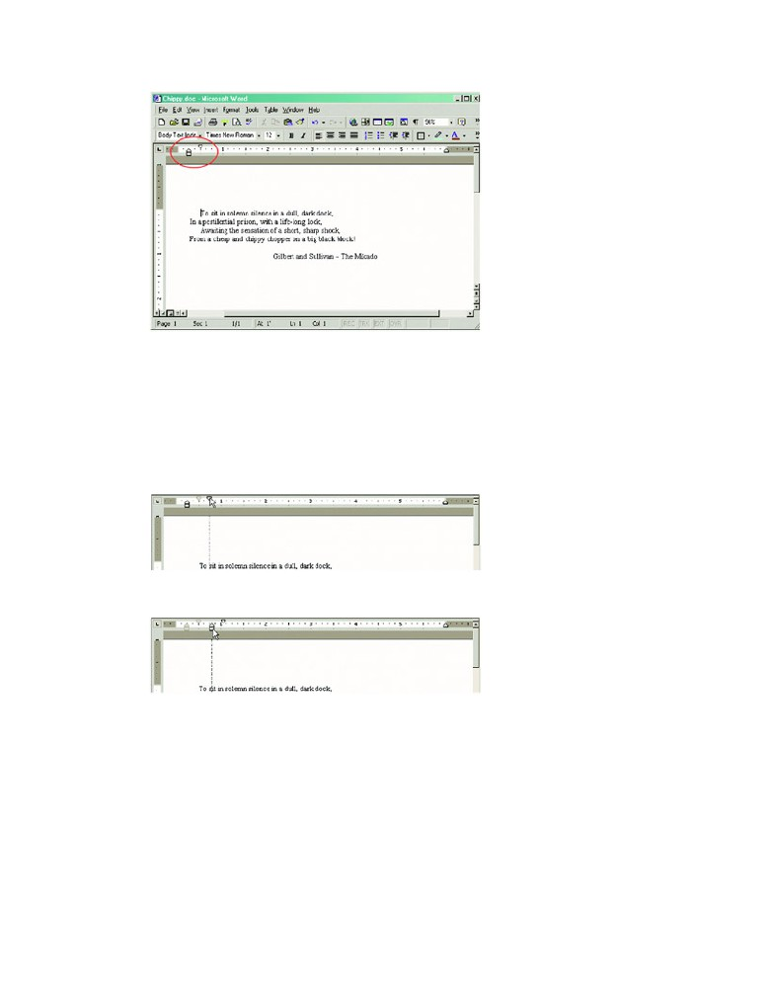
Figure 5-3: Microsoft Word for Windows has three small, adjustable doohickeys that can
be dragged to adjust the paragraph indenting.
People find these a bit hard to use. Here's why: if you drag the top doohickey, which
represents the first line indent (as shown in Figure 5-4), only the top doohickey moves.
That's what you would expect. But if you drag the bottom doohickey, representing the overall
indent, all three doohickeys move, as shown in Figure 5-5. It's not just an inconsistency— it's
a violation of the laws of nature! In nature, things are either connected or they're not. If I
move my fork, I don't expect the knife and spoon to move, too!
Figure 5-4: Dragging the top doohickey moves it. So far so good.
Figure 5-5: Dragging the bottom doohickey moves all three, thus violating a "law of
nature."
Multiple Rows of Tabs
When I first posted Chapter 4 on the Web, many readers emailed me to say that tabbed
dialogs are all well and fine, but they're terrible as soon as you have more than one row of
tabs. Indeed, they're right. The biggest problem has to do with the way multiple rows of tabs
always seem to violate physics: when you click on a tab from another row, the tabs all
shuffle around like restless schoolchildren on Class Photo Day, as shown in Figures 5-6a
and 5-6b.
31
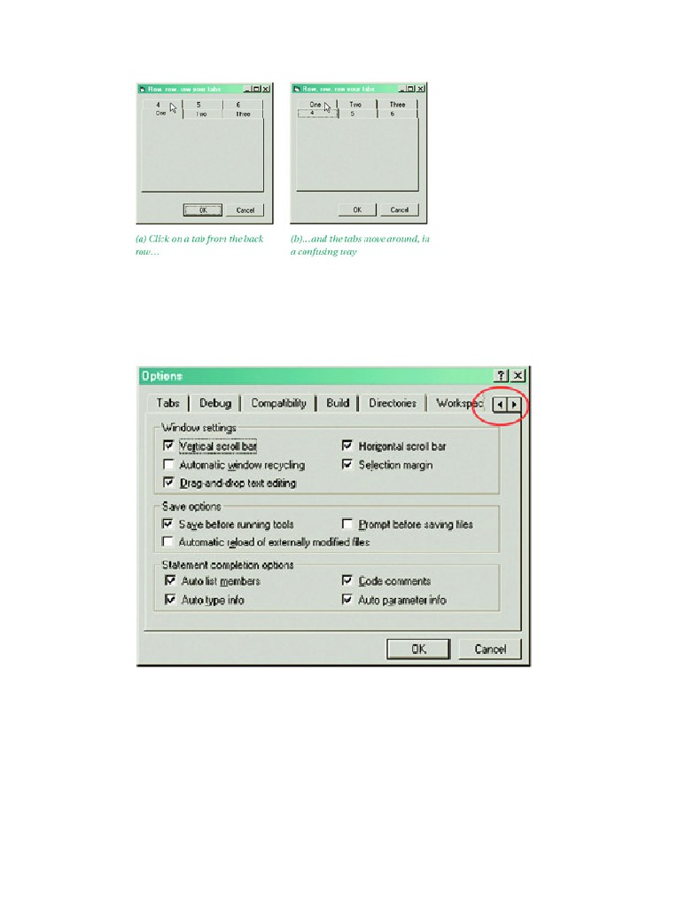
Figure 5-6
This violation of realism is distressing enough that the designers of Microsoft's Visual C++
IDE went to a great deal of trouble to implement scrolling tabs. These have tiny arrows to
control which tabs are visible and a neat "torn tab" effect so you notice that there are tabs
missing to the right (see Figure 5-7).
Figure 5-7: Another way to deal with too many tabs
The real solution to this problem, I think, is to figure out why you have so many options and
eliminate a whole bunch, as discussed in Chapter 3. Nobody likes a dialog with a couple
dozen tabs, all with cryptic monikers full of complicated options. But if you simply must have
multiple rows of tabs, at the very least, try not to make them violate physics. With today's
faster processors and graphics cards, it's easy to create a simple animation effect so that the
front batch of tabs slides down when you click on the back row. For an illustration of this, see
Figures 5-8a through 5-8d.
32
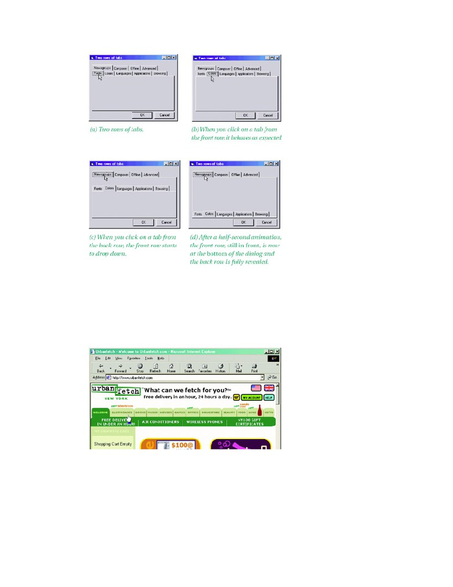
Figure 5-8
Those Pesky Navigation Tabs
Tabs seem to be pretty popular on Web pages, too. Look at Figure 5-9, the Urbanfetch Web
site. It's pretty obvious from the appearance of the page that the tabs represent different
sections of the Web site.
Figure 5-9: Click on the Electronics tab, wait five seconds…
There are two problems. The first is the slow speed of the Web. I know, it's pretty whiny to
complain about the slow speed of the Web. After all, the Web allows you to look at detailed
Lego catalogs and find that perfect, tangerine-colored, sloped Lego brick in seconds, then
have it delivered to your home in twenty-four hours or less— something which used to take
several months of research and a painful weeklong excursion in a covered wagon to the
nearest big city. But I've gotten spoiled, and for me, the inevitable three-second delay when
you click on a page is starting to get pretty annoying. There's an unwritten children's bedtime
33
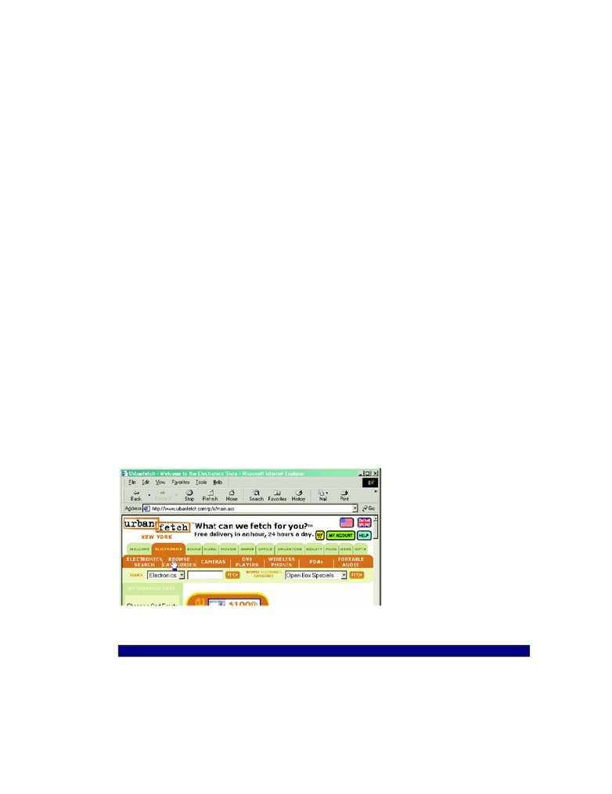
story in all of this: The Princess and the High Latency Internet Connection. In this story,
Prince Webby and his mother, the Mouse Queen, convince themselves that the poor child
who knocked on their door in a rainstorm is a real princess, because she's used to a
personal T-1 line in the castle, and when she's forced to use a 28.8 modem, she complains
and complains…
Anyway. What was I talking about? Oh, yeah. Tabs on a Web page. When you actually click
on a tab in a computer program, the screen responds immediately, obeying the laws of the
real world. But when you click on a tab on a Web page, even a fast Web page, you wait at
least three seconds until a new page slowly comes up showing you something that is as
likely as not to be completely different. When you click on the tab on the Urbanfetch Web
site in Figure 5-9, five things happen that violate physics:
1. Nothing happens for a few seconds while the new page is fetched.
2. Then the whole page goes white for a while.
3. Then, finally, a new page appears.
4. But now all the tabs are in a different place (the row of tabs shifts upward due to a lack
of attention to detail on the part of the site designers).
5. The whole color scheme has changed now, including the color of the Urbanfetch logo,
which is not supposed to be a part of the tab area anyway.
Some of these quirks are intrinsic to all Web sites; there's nothing that can be done about
latency or the way pages refresh (short of using JavaScript and Dynamic HTML, which isn't
quite standard enough yet). And some of these quirks are specific to Urbanfetch's site.
The joke here is that all of these problems with tabs are not really usability problems, despite
the fact that some well-known Web usability gurus have complained a lot about them. The
site is perfectly usable. Why? Go back to our rule from Chapter 4. The point of a metaphor is
to show the user the program model. On a Web page, tabs show the user how the site is
organized into sections. Once the user clicks, it almost doesn't matter what happens—you've
accomplished your goal. (A much worse problem with the site in Figure 5-10 is the various
links below the row of tabs, which don't look like links and don't look pushable. You would be
forgiven if you thought that they were merely advertising slogans and failed to push them.)
Figure 5-10: …and watch the whole screen shift around and change color. These minor
violations of physics do not actually detract from the usability of the site.
The Program Model
34
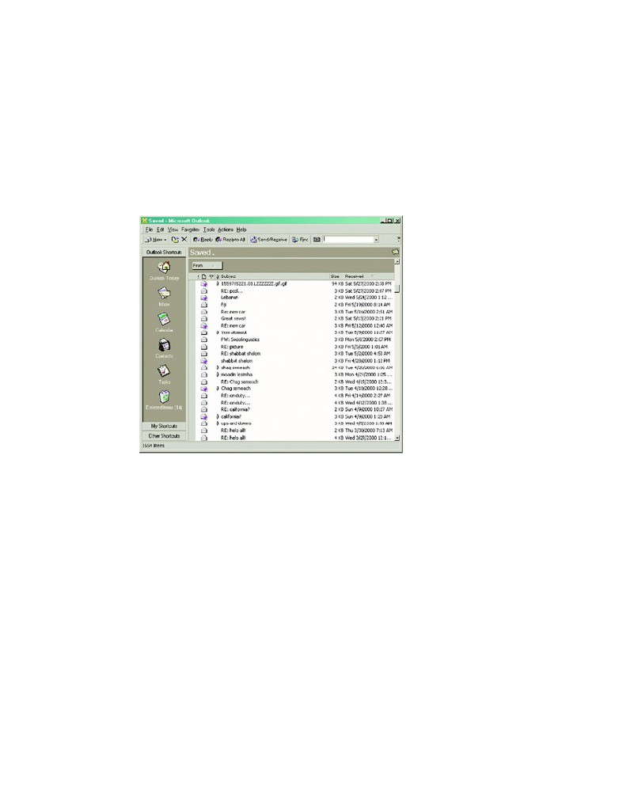
Microsoft Outlook introduced a new UI concept they called the "Outlook Bar." Located on
the left side of the window, it is probably the most confusing part of a rather confusing
interface.
Look at Figure 5-11. Yeah, I know, you're dying to see what's in my Inbox, but ignore
that for a moment and focus on the left edge of the screen where it says Outlook
Shortcuts. Just by looking at it, can you figure out how to use it? What happens if you
click on the button that says Outlook Shortcuts? Or the button that says My
Shortcuts? Are you supposed to click on them or drag them? Nothing about the visual
appearance gives you any clues about how the thing works.
Figure 5-11: The Outlook Bar. Can you figure out how it works just by looking at it?
Now look at my redesigned version in Figure 5-12. It operates exactly the same way, but
it uses a metaphor that provides some subtle visual cues to show how it's supposed to
work. Outlook Shortcuts looks like a physical card with some icons on it. And it's
very clear that My Shortcuts and Other Shortcuts are additional cards with icons
on them, tucked out of the way so that you can see Outlook Shortcuts. When you
click on one of these additional cards, it slides up to show you its contents.
35
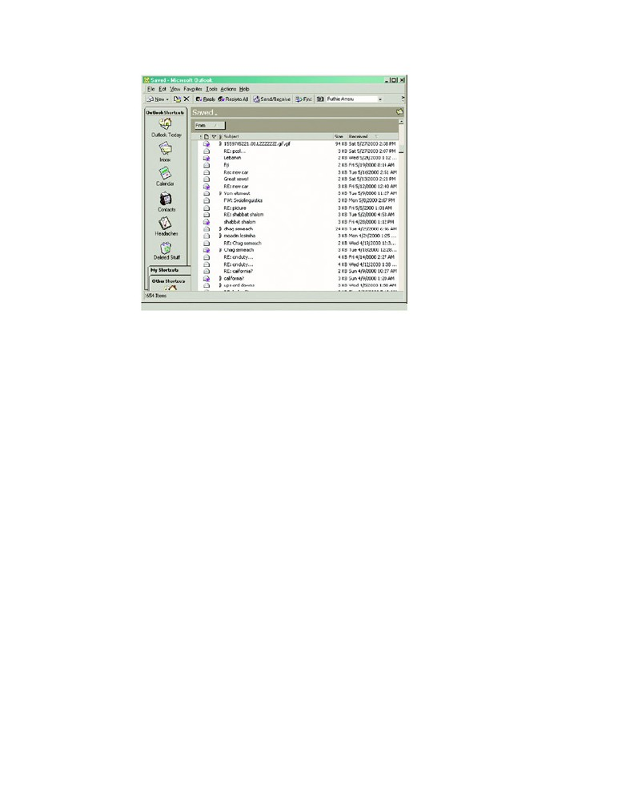
Figure 5-12: My redesigned version of the Outlook Bar uses a real live metaphor to
convey to the user how it's supposed to work.
36
Chapter 6: Consistency and Other Hobgoblins
The main programs in the Microsoft Office suite, Word and Excel, were developed from
scratch at Microsoft. Others were bought from outside companies, notably FrontPage
(bought from Vermeer) and Visio, bought from Visio. You know what FrontPage and Visio
have in common? They were originally designed to look and feel just like Microsoft Office
applications.
The decision to emulate the Office UI wasn't merely to suck up to Microsoft or to position the
companies for acquisition. Indeed, Charles Ferguson, who developed FrontPage, does not
hesitate to admit his antipathy for Microsoft; he repeatedly begged the Justice Department to
do something about the Redmond Beasties (until he sold his company to them, after which
his position became a lot more complicated). In fact, Vermeer and Visio seem to have
copied the Office UI mainly because it was expedient: it was easier and quicker than
reinventing the wheel.
When Mike Mathieu, a group program manager at Microsoft, downloaded FrontPage from
Vermeer's Web site and tried it out, it worked a whole lot like Word. Since it worked so much
like he expected a program to work, it was easier to use. The program model matched the
user model. When he tried to do things, they worked. And this ease of use made him happy
and gave him a favorable impression of the program right off the bat.
Now, when Microsoft gets a favorable impression of a program right off the bat, they shell
out $150 million or so. Your goal is probably more modest; you want your customers to get a
favorable impression and shell out maybe $39. But it's the same idea: consistency causes
ease of use, which, in turn, causes good feelings and results in more money for you.
It's hard to underestimate just how much consistency helps people to learn and use a wide
variety of programs. Before GUIs, every program reinvented the very fundamentals of the
user interface. Even a simple operation like "exit," which every program had to have, was
completely inconsistent. In those days, people made a point of memorizing, at the very least,
the exit command of common programs so they could exit and run a program they
understood. Emacs fanatics memorized :q! (and nothing else) in case they ever found
themselves stuck in vi by mistake, while vi users memorized C-x C-c (Emacs even has its
own way to represent control characters). Over in DOS land, you couldn't even use
WordPerfect unless you had one of those dorky plastic keyboard templates that reminded
you what Alt+Ctrl+F3 did. I just memorized F7, which got me the heck outta there so I
could run something intelligent like edlin.
Even tiny inconsistencies in things like the default typing behavior (overwrite or insert) can
drive you crazy. I've gotten so used to Ctrl+Z meaning "undo" in Windows applications that
when I use Emacs I am constantly minimizing the window (Ctrl+Z) by mistake. (The joke of
it is, the very reason Emacs interprets Ctrl+Z as minimize is for "consistency" with that
terrific user interface, csh, the C shell from UNIX.) This is one of those minor frustrations
that add up to a general feeling of unhappiness.
To take an even smaller example, Pico and Emacs both use Ctrl+K to delete lines, but with
a slightly different behavior that usually mauls my document whenever I find myself in Pico.
I'm sure you have a dozen examples of your own.
In the early days of Macintosh, before Microsoft Windows, Apple's evangelists told everyone
that the average Mac user used more programs to get their work done than the average
DOS user. I don't remember the exact numbers, but I believe it was something like one or
two programs for the average DOS user versus twelve programs for a Mac user. Because all
37
Mac programs worked the same way, it was easy to learn a new one, so Mac users learned
and used a larger number of programs.
Consistency is a fundamental principle of good UI design, but it's really just a corollary of the
axiom "make the program model match the user model," because the user model is likely to
reflect the way that users see other programs behaving. If the user has learned that double-
clicking text means select word, you can show them a program they've never seen before
and they will guess that the way to select a word is to double-click it. And now that program
had better select words when they double-click (as opposed to, say, looking the word up in
the dictionary), or else you'll have a usability problem.
If consistency is so obviously beneficial, why am I wasting your time and mine evangelizing
it? Unhappily, there is a dark force out there that fights consistency. That force is the natural
tendency of designers and programmers to be creative.
I hate to be the one to tell you "don't be creative," but unfortunately, to make a user interface
easy to use, you are going to have to channel your creativity into some other area. In most
UI decisions, before you design anything from scratch, you absolutely must look at what
other popular programs are doing and emulate that as closely as possible. If you're creating
a document-editing program of some sort, it better look an awful lot like Microsoft Word, right
down to the accelerators on the common menu items. Some of your users will be used to
Ctrl+S for save; some of them will be used to Alt+F,S for save, and still others will be
used to Alt,F,S (releasing the Alt key). Another group will look for the floppy disk icon in
the top left area of the window and click it. All four had better work or your users are going to
get something they don't want. If you think that running the spell-checker should be Ctrl+S,
you're going to annoy an awful lot of people who are just trying to save their work.
I've seen companies where management prides themselves on doing things deliberately
different from Microsoft. "Just because Microsoft does it, doesn't mean it's right," they brag,
and then proceed to create a gratuitously different user interface from the one that people
are used to. Before you start chanting the mantra "just because Microsoft does it, doesn't
mean it's right," please consider two things.
One, even if it's not right, if Microsoft is doing it in a popular program like Word, Excel,
Windows, or Internet Explorer, millions of people are going to think that it's right, or at least
fairly standard. They are going to assume that your program works the same way. Even if
you think that Alt+Left is not a good shortcut key for "Back," there are literally millions of
people out there who will try to use Alt+Left to go back, and if you refuse to do it on some
general religious principle that Bill Gates is the evil Smurf arch-nemesis Gargamel, then you
are just gratuitously ruining your program so that you can feel smug and self-satisfied, and
your users will not thank you for it.
Two, don't be so sure it's not right. Microsoft spends more money on usability testing than
you do; they keep detailed statistics based on millions of tech support phone calls; and
there's a darn good chance that they did it that way because more people can figure out how
to use it that way.
To create a good program with a usable interface you're going to have to leave your religion
at the door, thank you. Microsoft may not be the only company to copy: if you're making an
online bookstore, you should probably make sure that your Web site is at least semantically
the same as Amazon.com. Amazon.com keeps your shopping cart around for ninety days.
You might think that you are extra smart and design your program to empty the cart after two
hours. If you do this, there will be ex-Amazon.com customers who put stuff in your shopping
cart and come back two weeks later expecting it to still be there. When it's gone, you've lost
a customer.
38
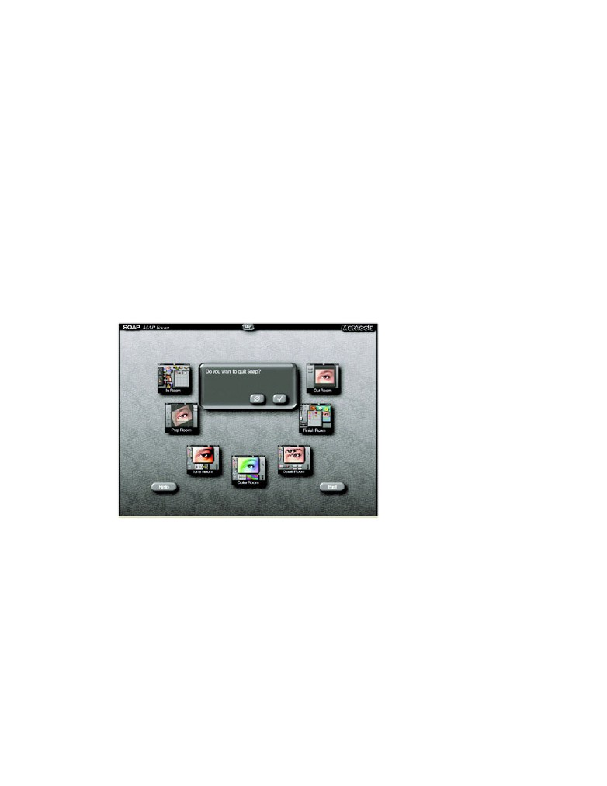
If you're making a high-end photo editor for graphics professionals, I assure you that 90% of
your users are going to know Adobe Photoshop, so you better behave a heck of a lot like
Photoshop in the areas where your program overlaps. If you don't, people are going to say
that your program is hard to use even if you think it's easier to use than Photoshop, because
it's not behaving the way they expect it to.
There is another popular tendency to reinvent the common controls that come with
Windows. (Don't even get me started about Netscape 6.) There was a time when you could
tell which programs were compiled with Borland's C++ compiler because they used big fat
OK buttons with giant green checkboxes. This wasn't nearly as bad as Kai's Photo Soap.
Look at Figure 6-1. Fine, so it's stunningly beautiful, but look closely at the exit dialog. To
me, the O with a line through it (which actually means "no") reminds me of "OK." The
standard on Windows is to have OK on the left, so I wind up hitting the wrong button a lot.
The only benefit to having funny symbols instead of "OK" and "Cancel" like everyone else is
that you get to show off how creative you are. If people make mistakes because of Kai's
creativity, well, that's just the price they have to pay for being in the presence of an artist.
(Another problem with this "dialog" is that it doesn't have a standard title bar to move the
dialog around onscreen. If the dialog gets in the way of something you want to see in order
to answer the question in the dialog, you are out of luck.)
Figure 6-1: Kai's Photo Soap does everything differently.
Now, there's a lot to be gained by having a slick, cool-looking user interface. Good graphic
design like Kai is pleasing and will attract people to your program. The trick is to do it without
breaking the rules. You can change the visual look of dialogs a bit, but don't break the
functionality.
When the first version of Juno was written, it had the standard log-on dialog that prompted
you for a user name and a password. After you entered the user name, you were supposed
to press Tab to go to the password field and type in a password.
Now, this distressed one of the managers at Juno who had a lot more experience with UNIX
than with Windows. He was used to typing the user name, then pressing Enter to jump to the
password field (instead of Tab). When you're writing a program targeted at nonexpert
Windows users, a UNIX programmer is probably not the ideal example of a typical user. But
this manager was very insistent that the Enter key should move to the next field instead of
39
doing the Windows-standard "OK" thing. "Just because Microsoft does it, doesn't mean it's
right," he chirped.
So, the programmers spent a remarkable amount of time writing some amazingly
complicated dialog-box handling-code to work around the default behavior of Windows.
(Being inconsistent is almost always more work than simply acting like your platform expects
you to act). This code was a maintenance nightmare; it didn't port so well when we moved
from 16-bit to 32-bit Windows. It didn't do what people expected. And as new programmers
joined the team, they didn't understand why there was this strange subclass for dialogs.
Over the years, an awful lot of programmers have tried to reimplement various common
Windows controls, from buttons to scrollbars, toolbars, and menu bars (the Microsoft Office
team's favorite thing to reimplement). Netscape 6 goes so far as to reimplement every single
common Windows control. This usually has some unforeseen bad effects. The best example
is with the edit box. If you reimplement the edit box, there are a lot of utilities that you've
never even heard of (like Chinese language editing add-ins, and bidirectional versions of
Windows that support right-to-left text) that are going to stop working because they don't
recognize your nonstandard edit box. Some reviewers of the Netscape 6 preview releases
complained that the URL box, using a nonstandard Netscape edit control, does not support
common edit control features like right-clicking to get a context menu.
When you find yourself arguing with an anti-Microsoft fundamentalist or a creative graphic
designer about consistency, they're apt to quote Ralph Waldo Emerson incorrectly:
"Consistency is the hob-goblin of little minds…" Emerson's real quote is "A foolish
consistency is the hobgoblin of little minds."
Good UI designers use consistency intelligently, and though it may not show
off their creativity as well, in the long run it makes users happier.
40
Chapter 7: Putting the User in Charge
Overview
The history of user interfaces—from the early 1970s when interactive systems first
appeared, to today's most modern GUI interfaces—has followed a pendulum. Each
generation of user interface designers collectively changes its mind about whether users
need to be guided through a program or whether they should be left alone to control the
program as they see fit. Following trends in user control is a bit like following the hemlines at
the Milan fashion shows. Plus ça change, plus c'est la même chose. Here's a bird's-eye view
of what happened.
The first computer systems weren't very interactive at all. You created a program by
punching holes on eighty-column cards using a giant hole-punching machine that looked like
something from the ship in Lost in Space and made an incredibly satisfying clacking sound.
Of course, there was no way to fill in a hole you made by mistake— so if you made even one
mistake you had to repunch the whole card. Then you carefully took your deck of cards over
to a large machine called a hopper and piled the cards in. (It was called a hopper because it
would hop all over the floor doing a happy overstuffed-washingmachine dance unless you
bolted it down.)
The hopper ate most of your cards, choking on a few, but eventually, begrudgingly, it
accepted your program. On a good day, it wouldn't even chew up any of your cards, forcing
you to painstakingly repunch them.
Once the hopper successfully choked down your card deck, you walked across campus to
the student union and got some lunch. If you lingered a bit in the comic book store after
lunch, by the time you got back to the Computer Center your program would have worked its
way halfway up the queue. Every ten minutes or so, the computer operator printed out the
status of the queue and pinned it up to the bulletin board near the Card Mangler. Eventually
your program would run and a printout would appear in your cubbyhole telling you that there
was a syntax error on line 32, that it took four seconds of CPU time to run, and that you now
had fourteen seconds of CPU time left out of your monthly budget.
Interactive Computing
All of this changed dramatically when the first interactive computer systems started showing
up. They introduced the famous command-line interface (CLI). You literally sat down, typed
a one-line request to the computer, and when you hit the enter key, you got your response
right then and there. No more time for lunch. No comic books. It was a sad day. When you
sat down with a command-line interface, you stared at a prompt. "READY," said some of the
systems, "C:\>," said others (that's a picture of an ice-cream cone that fell over). In a fit of
stinginess, some systems managed to squeeze their prompt down to one character. "$",
said the UNIX shell. Presumably, UNIX programmers had to pay for their computer time by
the letter.
Now what do you do? Well, that's entirely up to you. You can ask for a listing of files; you
can look at the contents of a file; you can run a program to calculate your biorhythms;
whatever you want. The method by which you completed tasks as disparate as sending an
email or deleting a file was exactly the same: you typed in a previously-memorized
command.
The CLI was the ultimate example of an interface where the designer gets out of the way
and lets the user do whatever they want. CLIs can be easy to use, but they're not very
41
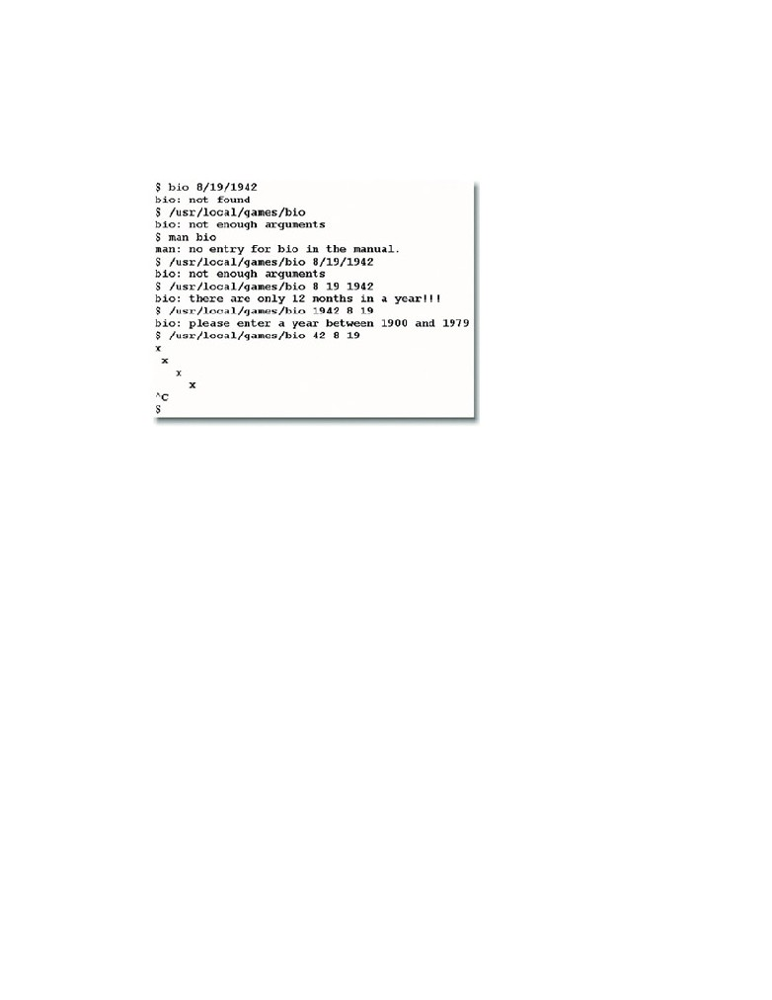
learnable. You basically need to memorize all the frequently used commands, or you need to
constantly consult a reference manual to get your work done. Everybody's first reaction to
being sat down in front of a CLI is, "OK, now what do I do?" A typical computer session from
1974 is shown in Figure 7-1.
Figure 7-1: If you didn't have the manual, you had to guess or ask a guru.
Soon another style of interface developed: more of a question and answer model. When you
sat down to a program, it asked you questions. You never had to remember a thing. See
Figure 7-2 for an excellent piece from this period.
42
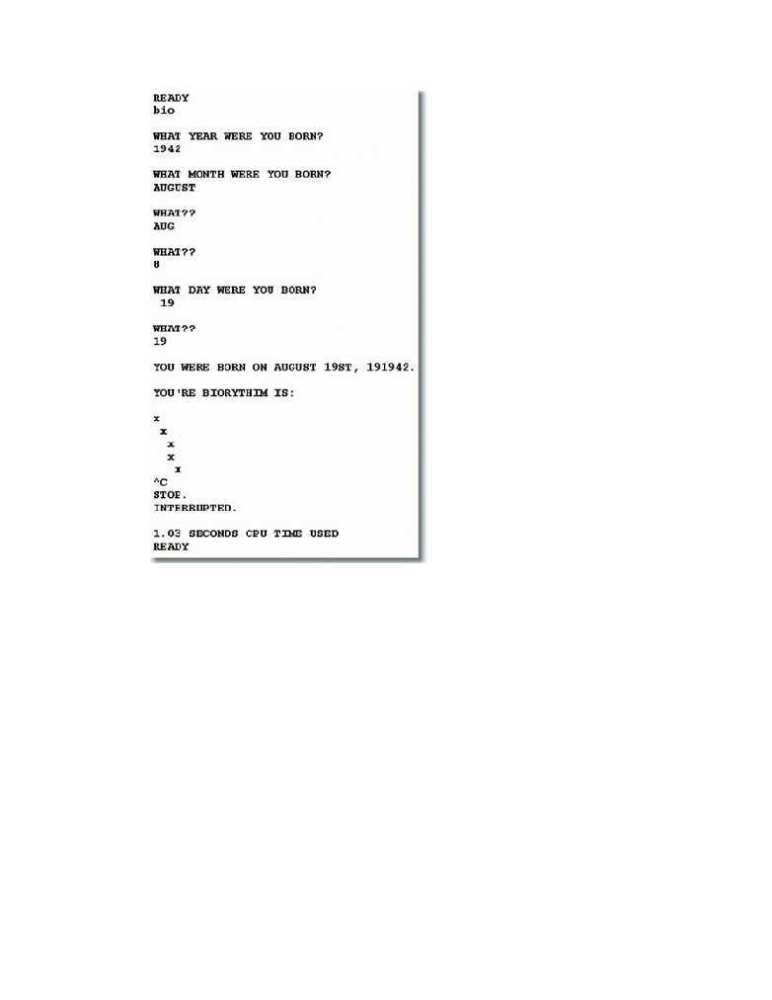
Figure 7-2: An excellent example of one of the great, lost interactive computer programs
of the early 1970s, reconstructed here from memory. Notice that the program helpfully
asks you questions, so you never need to remember a command.
Interface designers of the Middle Command Line Era eventually realized that people didn't
want to sit with a manual in their lap to get things done. They created question-and-answer
programs, which basically combined the manual with the program itself by showing you what
to do as you went along.
Soon, programs starting sprouting more and more features. The silly biorhythm programs
sprouted features to tell you what day of the week you were born on. The more serious Star
Trek games (where you chased a little Klingon ship around a 10 × 10 grid) gave you
choices: you could fire photon torpedoes or move your ship. Pretty soon, the newest
innovation was having a menu-driven program. This was thought to be the height of UI
coolness. Computer software advertisements bragged about menu-driven interfaces (see
Figure 7-3).
43
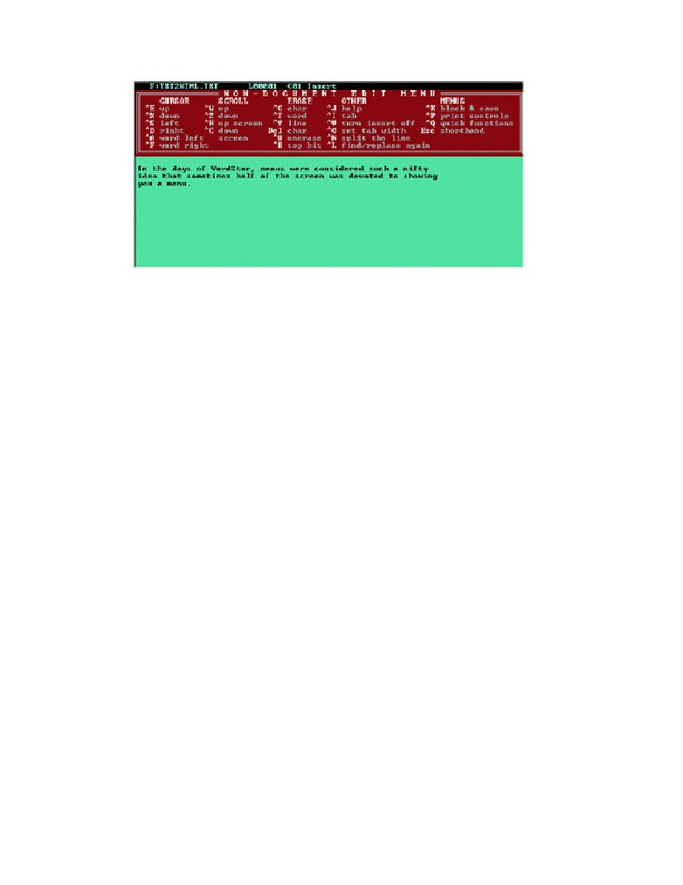
Figure 7-3: A screenshot from WordStar, a bestseller in 1984.
Around the peak of menu-mania, with office workers everywhere trapped in a twisty maze of
complicated menus, all alike, an old philosophy swung back into fashion: suddenly, it once
again became popular to let the user be in control. This philosophy was sharply expounded
by the designers of the original Apple Macintosh who repeated again and again, let the user
decide what to do next. They were frustrated by the DOS programs of the day, which would
get into nasty modes where they insisted, no, demanded that the user tell them right now
what file name they want for their new file, even if the user couldn't care less at that moment
and really, really just wanted to type in that stupid toll-free phone number they saw on TV to
order a combination vegetable shredder-clam steamer before they forgot it. In the eyes of
the Macintosh designers, menu-based programs were like visiting Pirates of the Caribbean
at Disneyland: you had to go through the ride in the exact order that it was designed; you
didn't have much of a choice about what to do next; it always took exactly four minutes; and
if you wanted to spend a bit more time looking at the cool pirates' village, well, you couldn't.
Whereas the sleek new Macintosh interface was like visiting the Mall of America. Everything
was laid out for you, easily accessible, and brightly lit, but you got to make your own choices
about where to go next. A Macintosh program dumped you in front of a virtually blank white
screen where the first thing you did was start poking around in the menus to see what fun
commands were available for you. Look! Fonts!
This is still how many Windows and Macintosh programs work. But around 1990, a new
trend arose: usability testing. All the large software companies built usability labs where they
brought in innocent "users," sat them down in front of the software to be tested, and gave
them some tasks to do.
Alas, usability testing does not usually test how usable a program is. It really tests how
learnable a program is. As a result, when you plunk a wide-eyed innocent down in front of a
typical program they've never seen before, a certain percentage of them will stare at the
screen googly-eyed and never even guess what it is they are supposed to do. Not all of
them. Teenagers will poke around at random. More experienced computer users will
immediately start scanning the menus and generally gefingerpoken und mittengrabben
around the interface and they'll soon figure it out. But some percentage of people will just sit
there and fail to accomplish the task.
This distresses the user interface designers, who don't like to hear that 30% of the "users"
failed to complete the task. Now, it probably shouldn't. In the real world, those "users" either
(a) wouldn't have to use the program in the first place because they are baristas at coffee
shops and never use computers; or (b) wouldn't have to use the program in the first place
because they aren't project managers and they don't use project management software; or
(c) would get somebody to teach them how to use the program, or would read a manual or
44
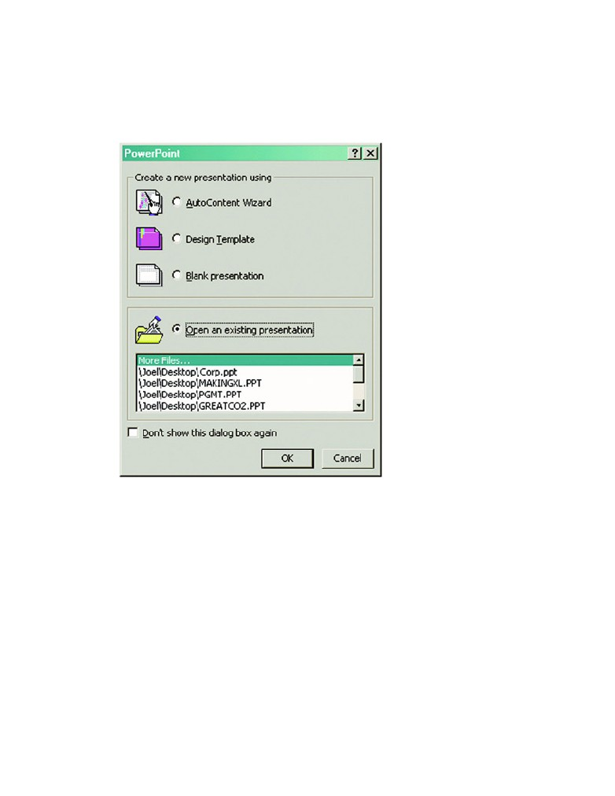
take a class. In any case, the large number of people that fail usability tests because they
don't know where to start tends to scare the heck out of the UI designers.
So what do these UI designers do? They pop up a dialog box like the one in Figure 7-4.
Figure 7-4: The first screen you see when you run Microsoft Power-Point. Almost
anyone could figure out how to open and create files using the menu commands; this
dialog really only helps absolute beginners.
As it turns out, the problems people were having in usability tests motivated Karen Fries and
Barry Saxifrage, talented UI designers at Microsoft, to invent the concept of wizards, which
first appeared in Microsoft Publisher 1.0 in 1991. A wizard is a multipage dialog that asks
you a bunch of questions in an interview format and then does some large, complicated
operation based on your answers. Originally, Fries conceived of the wizard as a teacher that
merely taught you how use the traditional menu-and-dialog interface. You told it what you
wanted to do and the wizard actually demonstrated how to do it using the menus. In the
original design, there was even a speed control to adjust how fast the wizard manipulated
the menus: at its highest speed, it basically just did the work for you without showing you
how to do it.
The wizard idea caught on like wildfire, but not the way Fries envisioned it. The teaching
functionality rapidly went out the door.
More and more designers started using wizards simply to work around real and perceived
usability problems in their interface. Some wizards were just out of control. Intuit's wizard for
creating a new company with their QuickBooks accounting package seems to go on for
45
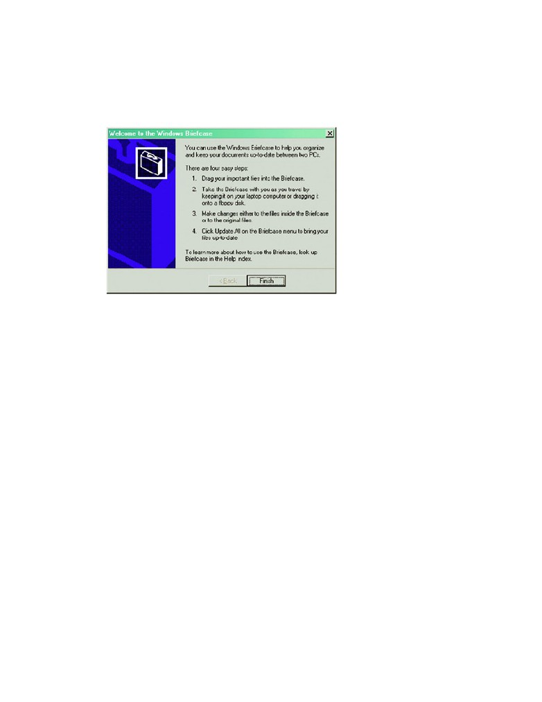
hundreds of screens and asks you questions (like your employee's social security numbers)
that you aren't likely to know the answers to right now but would be happy to input later. The
Windows team decided that wizards were so cool that they created wizards for everything,
even some silly one-screen-long wizards (see Figure 7-5).
Figure 7-5: The Windows team liked wizards so much that they went a bit overboard
making some degenerate, one-screen wizards with a vestigial Back button that is
perpetually greyed out.
The thing about wizards is that they're not really a new invention, they're just a fashionable
swing back to guiding people through things step-by-step. The good thing about taking
people by the hand like this is that when you usability test it, it works. The bad thing about
taking people by the hand is that if they have unusual needs or if they want to do things in a
different order than you conceived, they get frustrated by the maze you make them walk
through.
I think it's time to find a happy middle. As humane designers, we need to remember to let
users be in charge of their environment; control makes people happy. A modern word
processor is perfectly happy to let you type all your text without any formatting, then go back
and reformat it. Some people like to work this way. Other people like to have every word
appear on screen in its final, formatted form. They can do this, too.
Let people do things in whatever order they like. If they want to type their name and address
before they provide a credit card number, that should be just as easy as providing the credit
card number first. Your job as designer is not to have a conversation with the user; your job
is to provide a well-stocked, well-equipped, and well-lighted kitchen that the user can use to
make their own masterpieces.
46
Chapter 8: Design for Extremes
Consider if you will a simple key.
Nothing fancy, just your ordinary house key.
Is a key easy to use? It might seem so. On a sunny day, when a sixteen-year-old lad with
sharp eyes comes home from soccer practice, puts his key in the lock and turns it, it sure
seems usable enough.
But later that day, Dad comes home carrying two big bags of groceries in his arms. He has
to fumble a bit before the key goes into the lock, and eventually he drops the left bag and
oranges go rolling all over the front porch, to the delight of the neighbor's dog, who starts
barking and yipping and running around and generally being a nuisance.
Then, when Grandpa comes to visit, his hands shake a little and it takes him almost a minute
to get the key into the lock. By the time Mom gets home, it's dark and nobody turned on the
damn porch light so it's very hard to see where the slot is.
Good usability doesn't just mean "usability under the best of circumstances." It means
usability under as many adverse circumstances as possible. This is a principle called design
for extremes. Don't design something that can only be read in daylight: design it to be read
in dim light, too. Don't design something that can only be handled by a strong, seventeen-
year-old athlete; design something that an arthritic person can use as well. Design things
that work outdoors, in the rain, when you're not looking, when you didn't read the manual,
when you're distracted by bombs falling around you, or volcanic ash, or when you've got
both arms in a cast and can't quite turn your head.
One day a man named Sam Farber was watching his wife peel apples for a tart. She had
mild arthritis, so the process was slightly painful. Sam called his friend Davin Stowell who
had started a design firm in New York City called Smart Design and together they came up
with the idea for a line of kitchen products that would be more comfortable for people who
suffered from arthritis. They made hundreds of models of handles using wood and
Styrofoam. They tried them on all kinds of people. Eventually they honed in on the design
that was comfortable for almost everybody.
Arthritis is a joint inflammation that can cause swelling and pain. Sam's products have big
handles that are easier to grip than the usual pencil-thin variety. They are ergonomically
designed to fit into human hands comfortably. The handles are made of a soft, black rubber
called Santoprene, which means you don't have to squeeze tightly to keep them from
slipping; even a weak grasp is enough. The handles have a soft, bristly rubber area near the
top where you can grip them comfortably with your thumb and forefinger. This makes the
handle even less slippery, especially when it's wet.
47
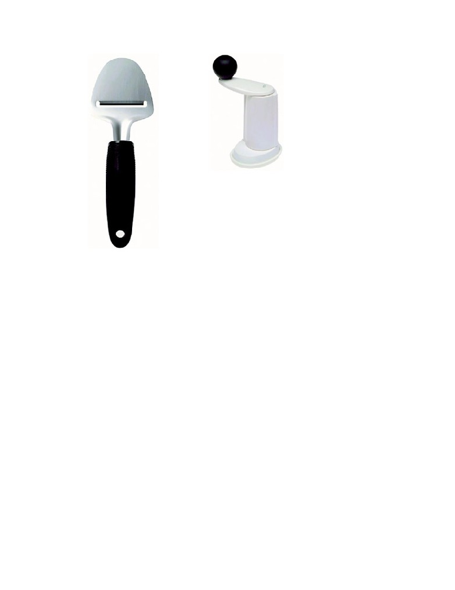
Figure 8-1: A cheese slicer and a cheese grater made by OXO International. Originally
designed for arthritis sufferers, it seems that everybody likes using OXO Good Grips
tools.
One in seven people suffer some form of arthritis—that's almost forty million people in the
United States alone. Designing a line of products for just that market niche was likely to
succeed. Indeed, Farber's company, OXO International, became a stunning success. But
their market is not just people with arthritis: everybody likes OXO products. They are simply
more pleasant to use.
Back to the problem of keys. When you design a key-entry system, you can't just design it
for optimal conditions. You have to design it so that it is easy to use when your hands are
full, when it's pitch dark, when your hands are shaking, or when the teenager from next door
puts superglue in the lock to get back at you for telling his parents about the big party he had
while they were in Jamaica.
Having trouble imagining such a system? I think that proximity cards—colloquially known as
card keys—come pretty close. If you haven't seen one, it's a small card the size of a credit
card but a little bit thicker. When you wave it within about six inches of a scanner mounted
next to the door, it releases a mechanical lock, usually magnetic, and you can push the door
open. You can keep a card key in your pocket, and when you get near enough to the door—
voila, it opens. It works better under extreme conditions (well, maybe not power failures),
but, more importantly, everybody finds a card key easier to use than a normal key, even
under the best of conditions.
1. Design for extremes so that your product can be used under extreme conditions, and
2. Design for extremes so that your product is more comfortable to use under normal
conditions.
Designing with these ideas in mind is called respecting the user, which actually means not
having much respect for the user. Confused? Let me explain.
What does it mean to make something easy to use? One way to measure this is to see what
percentage of real world users are able to complete tasks in a given amount of time. For
48
example, suppose the goal of your program is to allow people to convert digital camera
photos into a Web photo album. If you sit down a group of average users with your program
and ask them all to complete this task, then the more usable your program is, the higher the
percentage of users who will be able to successfully create a Web photo album.
To be scientific about it, let's get one hundred real world users together in a room. They are
not necessarily familiar with computers. They have many diverse talents. Some are world
famous ballerinas. Others can herd cats. Some are nuclear engineers, others are world-
class morons.
Many of these people emphatically do not have talents in the computer area. Others might
be good at computers, but they are distracted when they try to use your program. The phone
is ringing. WHAT? The baby is crying. WHAT?! The cat keeps jumping on the desk and batting
around the mouse. The computer mouse, I mean. I CAN'T HEAR YOU!
Now, even without going through with this experiment, I can state with some confidence that
some of the users will simply fail to complete the task or will take an extraordinary amount of
time doing it. I don't mean to say that these users are stupid. Quite the contrary, they are
probably highly intelligent. Or maybe they are accomplished cello players, or whatever, but
as far as you're concerned, they are just not applying all of their motor skills and brain cells
to your program. You're only getting about 30% of their attention, so you must make do with
a user who, from inside the computer, does not appear to be playing with a full deck.
I haven't talked about software for a while. When you're designing for extremes with
software, the three most important "extremes" to remember are:
1. Design for people who can't read.
2. Design for people who can't use a mouse.
3. Design for people who have such bad memories they would forget their own name if it
weren't embossed on their American Express.
These are important enough that they each merit a chapter.
49
Chapter 9: People Can't Read
When you design user interfaces, it's a good idea to keep two principles in mind:
1. Users don't have the manual, and if they did, they wouldn't read it.
2. In fact, users can't read anything, and if they could, they wouldn't want to.
These are not, strictly speaking, facts, but you should act as if they are facts, for it will make
your program easier and friendlier.
Users don't read the manual.
First of all, they may not actually have the manual. There may not be a manual. If there is
one, the user might not have it for all kinds of logical reasons: they're on a plane; they're
using a downloaded demo version from your Web site; they're at the beach and the manual
is at work; their IS department never gave them the manual. Even if they have the manual,
frankly, they are not going to read it unless they absolutely have no other choice (and maybe
not even then). With very few exceptions, users will not cuddle up with your manual and read
it through before they begin to use your software. In general, your users are trying to get
something done, and they see reading the manual as a waste of time, or at the very least, a
distraction that keeps them from getting their task done.
The very fact that you're reading this book puts you in an elite group of highly literate people.
Yes, I know, people who use computers are by and large able to read, but I guarantee you
that a good percentage of them will find reading a chore. The language in which the manual
is written may not be their first language, and they may not be totally fluent. They may be
kids! They can decipher the manual if they really must, but they sure ain't gonna read it if
they don't have to. Users do just-in-time reading on a strictly need-to-know basis.
The upshot of all this is that you probably have no choice but to design your software so it
doesn't need a manual in the first place. The only exception I can think of is if your users do
not have any domain knowledge—they don't really understand what the program is intended
to do, but they know that they better learn. A great example of this is Intuit's immensely
popular small-business accounting program, QuickBooks. Many people who use this
program are small-business owners who simply have no idea what's involved in accounting.
The manual for QuickBooks assumes this and assumes that it will have to teach people
basic accounting principles. There's no other way to do it. If a small business owner wants to
learn accounting, they actually might just curl up with the QuickBooks manual in a
comfortable chair and read it cover to cover. Still, for people who do understand accounting,
QuickBooks is reasonably easy to use without the manual.
In fact, users don't read anything.
This may sound a little harsh, but you'll see when you do usability tests that there are quite a
few users who simply do not read words that you put on the screen. If you pop up an error
box of any sort, they simply will not read it. This may be disconcerting to you as a
programmer because you imagine yourself conducting a dialog with the user. "Hey, user!"
you say. "You can't open that file, we don't support that file format!" Still, experience shows
that the more words you put on a dialog box, the fewer people will actually read it.
The fact that users do not read the manual leads many software designers to assume that
they are going to have to educate users by verbosely describing things as they go along.
You see this all over the place in programs. In principle it's OK, but in reality, people's
aversion to reading means that this will almost always get you in trouble. Experienced UI
designers literally try to minimize the number of words in dialogs to increase the chances
that they will get read. When I worked on Juno, the UI people understood this principle and
tried to write short, clear, simple text. Sadly, the CEO had been an English major at an Ivy
50
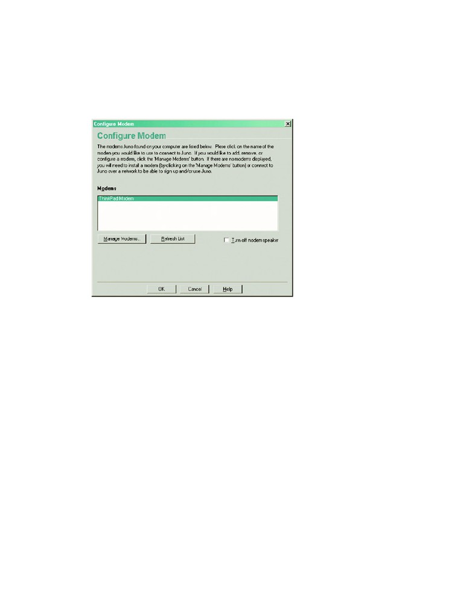
League college; he had no training in UI design or software engineering, but he sure thought
he was a good editor of prose. So, he vetoed the wording done by the professional UI
designers and added a lot of his own verbiage. A typical dialog in Juno looks like the one
shown in Figure 9-1. Compare that to the equivalent dialog in Microsoft Windows shown in
Figure 9-2.
Figure 9-1: The modem dialog from Juno 4.0. Nobody reads these things.
51
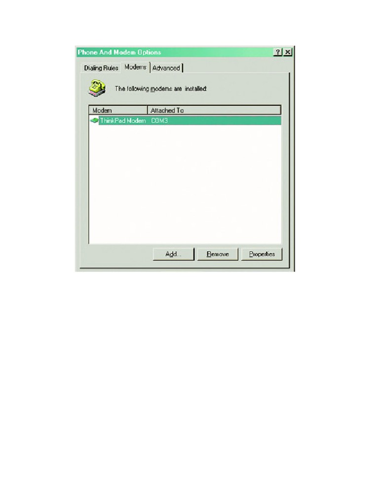
Figure 9-2: The equivalent dialog from Microsoft Windows. Although it contains far
fewer words, it's much more usable.
Intuitively, you might guess that the Juno version, with eighty words of instructions, would be
"superior" (in other words, easier to use) than the Windows version with its five words of
instructions. In reality, when you run a usability test on this kind of thing, you'll find that:
1. Advanced users skip over the instructions. They assume they know how to use things
and don't have time to read complicated instructions.
2. Most novice users skip over the instructions. They don't like reading too much and
hope that the defaults will be OK.
3. The few novice users who do earnestly try to read the instructions (some of whom are
only reading them because it's a usability test and they feel obliged) are often
confused by the sheer number of words and concepts. So, even if they were pretty
confident that they would be able to use the dialog when it first came up, the
instructions actually confused them even more.
Lesson number one is that if you're an English major from a fancy university, then you are in
a whole different league of literacy than the average Joe and you should be very careful
about wording dialogs that seem like they might be helpful to you. Shorten it, dumb it down,
simplify, get rid of the complicated clauses in parentheses, and do usability tests. But do not
write things that look like Ivy League faculty memos. Even adding the word "please" to a
dialog, which may seem helpful and polite, will slow people down: the increased bulk of the
wording is going to reduce, by some measurable percentage, the number of people who try
read the text.
52
Another important point is that many people are intimidated by computers. You probably
know this, right? But you may not realize the implications of this. I was watching a friend try
to exit Juno. For some reason, she was having quite a bit of trouble. I noticed that when you
try to exit Juno, a dialog pops up, as shown in Figure 9-3, saying "Thanks for using Juno.
Are you sure you want to exit?"
Figure 9-3: The Juno exit confirmation dialog doesn't get read, either.
She was hitting No, and then she was kind of surprised that Juno hadn't exited. The very fact
that Juno was questioning her choice made her immediately assume that she was doing
something wrong. Usually, when programs ask you to confirm a command, it's because
you're about to do something that you might regret. She had assumed that if the computer
was questioning her judgment, then the computer must have been right, because, after all,
computers are computers, whereas she was merely a human, so she hit No.
Is it too much to ask people to read eleven lousy words? Well, apparently. First of all, since
exiting Juno has no deleterious effects, Juno should have just exited without prompting for
confirmation, like every other GUI program on the planet. But even if you are convinced that
it is crucial that people confirm before exiting, you could do it in two words instead of eleven,
as shown in Figure 9-4. Without the completely unnecessary "Thank you" and the remorse-
inspiring "Are you sure?" this dialog is a lot less likely to cause problems. Users will certainly
read the two words, say "um, duh?" to the program and pound the Yes key.
Figure 9-4: Two words are much more likely to be read than eleven.
Sure, you say, the Juno Exit Confirmation dialog trips up a few people, but is it that big a
deal? Everyone will eventually manage to get out of the program. But herein lies the
difference between a program that is possible to use versus a program that is easy to use.
Even smart, experienced, advanced users will appreciate things that you do to make it easy
for the distracted, inexperienced, beginner users. Hotel bathtubs have big grab bars. They're
just there to help disabled people, but everybody uses them anyway to get out of the tub.
They make life easier, even for the physically fit.
In the next chapter, I'll talk a bit about the mouse. Just as users can't or won't read, users are
not very good at using the mouse either, so, you have to accommodate them.
53
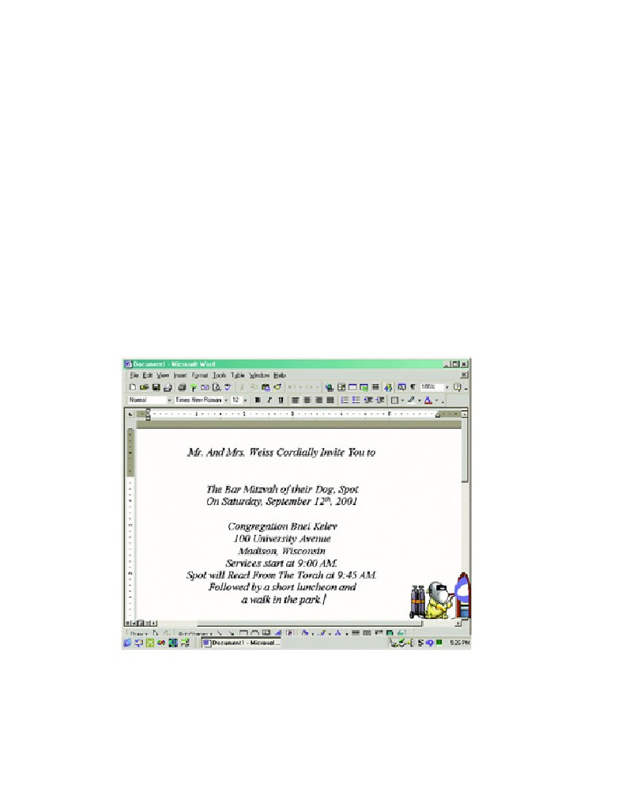
Chapter 10: People Can't Control the Mouse
Overview
When the Macintosh was young, Bruce "Tog" Tognazzini wrote a regular column in Apple's
developer magazine on UI design. In his column, people wrote in with lots of interesting UI
design problems, which he discussed. These columns continue to this day on his Web site
books like Tog on Software Design (Addison-Wesley, 1995), which is a lot of fun and a great
introduction to UI design, and Tog on Interface (Addison-Wesley, 1992).
Tog invented the concept of the mile-high menu bar to explain why the menu bar on the
Macintosh, which is always glued to the top of the physical screen, is so much easier to use
than menu bars on Windows, which appear inside each application window. When you want
to point to the File menu on Windows, you have a target about half an inch wide and a
quarter of an inch high to acquire. (The term "acquiring a target" comes from gunnery.) You
must move and position the mouse rather precisely in both the vertical and the horizontal
dimensions. See Figure 10-1. (While I was preparing this screen shot, Rocky, the Office
Assistant, was trying to bust loose. Please don't let that distract you. He has been
apprehended and returned to his rightful place scratching himself in the corner of the
screen.)
Figure 10-1: On Windows computers, each window has its own menu bar. To acquire
the "File" menu, for example, you have a target that is about 30 × 15 pixels in size.
54
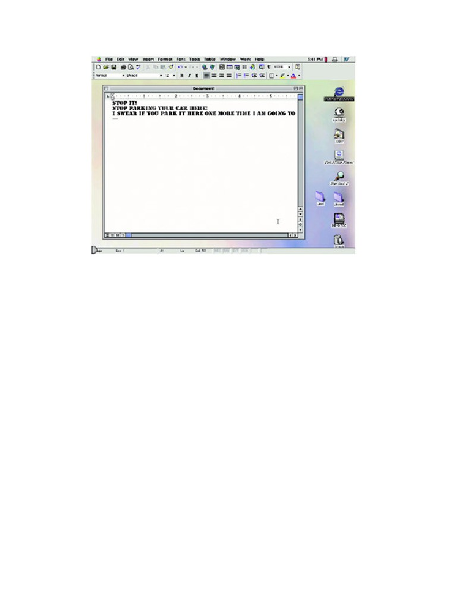
Figure 10-2: On the Macintosh, the menu bar is snug at the top of the screen, so the
target is 30 × infinity pixels in size.
But on a Macintosh, you can slam the mouse up to the top of the screen without regard to
how high you slam it, and it will stop at the physical edge of the screen—the correct vertical
position for using the menu. Effectively, you have a target that is still half an inch wide, but a
mile high. Now you only need to worry about positioning the cursor horizontally, not
vertically, so the task of clicking on a menu item is that much easier.
Based on this principle, Tog has a pop quiz: what are the five spots on the screen that are
easiest to acquire (point to) with the mouse? The answer: all four corners of the screen
(where you can literally slam the mouse in one fell swoop without any pointing at all), plus
the current position of the mouse, because it's already there.
The principle of the mile-high menu bar is fairly well known. However, it must not be entirely
obvious because the Windows 95 team missed the point completely with the Start push-
button, which sits almost (but not exactly) in the bottom left corner of the screen. In fact, it's
about two pixels away from the bottom and two pixels from the left of the screen. So, for the
sake of a couple of pixels, Tog writes, Microsoft literally "snatches defeat from the jaws of
victory" and makes it that much harder to acquire the Start button. It could have been a
mile square, absolutely trivial to hit with the mouse. For some reason, I don't know why, it's
not. Even five years later, after many major releases of Windows, nobody has bothered to fix
the Start button to make it easier to hit.
In the previous chapter, we talked about how users hate reading and will avoid it unless they
absolutely cannot accomplish their task. Similarly:
Users can't control the mouse very well.
I don't mean this literally. What I mean is, you should design your program so that it does not
require a tremendous amount of mouse-agility to use correctly. The top six reasons for this
are:
55
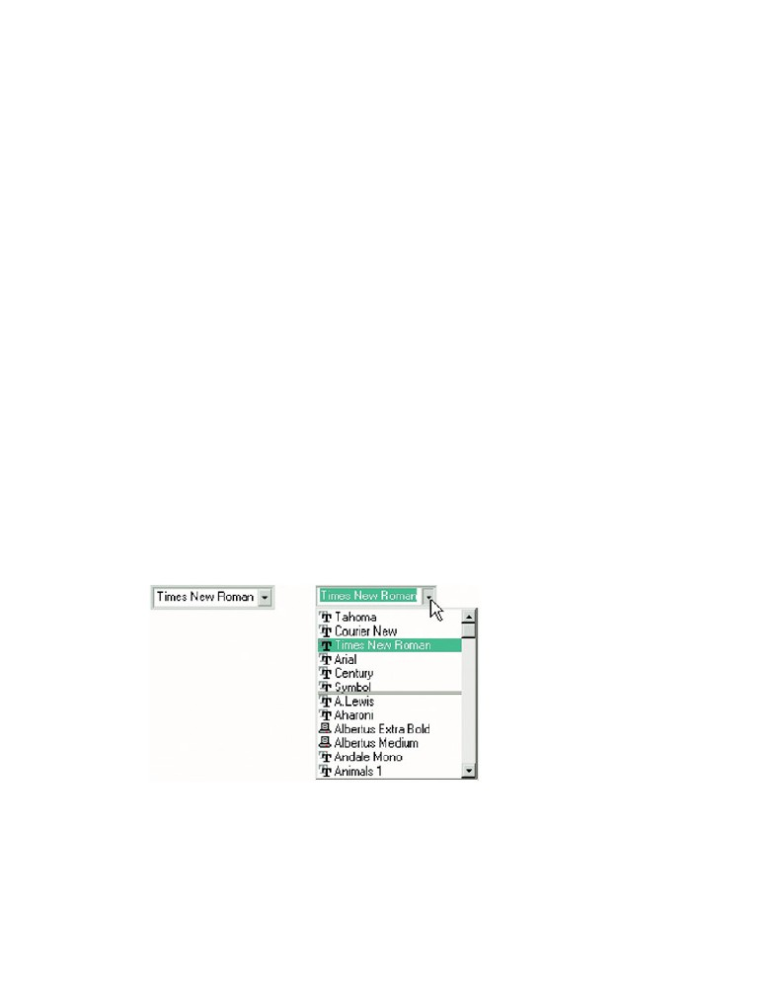
1. Some people use suboptimal pointing devices, such as track-balls, touchpads, and the
little red thingy on a ThinkPad, all of which are harder to control than standard mice.
2. Sometimes people use mice under bad conditions: on a crowded desk; with a dirty
trackball that makes the mouse skip; or with a mouse that is just a five-dollar clone
and doesn't track properly.
3. Some people are new to computers and have not yet developed the motor skills to use
mice accurately.
4. Some people will literally never have the motor skills to use mice precisely. They may
be very young or very old; they may have arthritis, tremors, carpal tunnel syndrome;
or they may suffer from any number of disabilities.
5. Many people find that it is extremely difficult to double-click without moving the mouse
slightly. As a result, they often drag things around on their screen when they mean to
launch applications. You can often spot these people by their messy desktops
because half the time they try to launch something, they wind up moving it instead.
6. Even in the best of situations, using the mouse a lot feels slow to people. If you force
people to perform a multistep operation using the mouse, they may feel like they are
being stalled, which in turn makes the UI feel unresponsive. This, as you should know
by know, makes people unhappy.
In ye olden days, when I worked on Excel, laptops didn't come with pointing devices built in,
so Microsoft made a clip-on trackball that clipped to the side of the keyboard. A normal
mouse is controlled with the wrist and most of the fingers. This is much like writing, and you
probably developed very accurate motor skills for writing in elementary school. But a
trackball is controlled entirely with the thumb. As a result, it's much harder to control a
trackball to the same degree of accuracy as a mouse. Most people find that they can control
a mouse to within one or two pixels but can only control a trackball to within three or four
pixels. On the Excel design team, I always urged people to try out their new UIs with the
trackball instead of only with a mouse, to see how it would feel to people who are not able to
move the mouse exactly where they want it.
One of the great UI crimes against humanity is the dropdown list-box, shown closed and
then open in Figure 10-3.
Figure 10-3: The dropdown list-box in its normal state and expanded.
Think about how many detailed mouse clicks it will take to choose, say, Wingdings. First,
you must click on the down arrow to make the list appear. Then, using the scroll bar, you
must carefully scroll until Wingdings appears in view. Many of these dropdowns are
carelessly designed to show only two or three items at a time, so this scrolling is none too
easy, especially if you have a lot of fonts. It involves either carefully dragging the position
indicator (with such a small range of movement, it's probably unlikely that this will work); or
56
clicking repeatedly on the second down arrow; or trying to click in the area between the
thumb and the down arrow—which will eventually stop working when the thumb gets low
enough, annoying you even further. Finally, if you do manage to get Wingdings into view,
you have to click on it. If you miss, you get to start all over again. Now multiply this process
by ten if, say, you want to use a fancy font for the first letter in each of your chapters. Then
you're really unhappy.
The poxy dropdown listbox is even more annoying because there's such an easy solution:
just make the dropdown part high enough to show all of the options at once. Ninety percent
of the combo boxes out there don't even use all the available space to drop down, which is a
sin. If there is not enough room between the main edit box and the bottom of the screen, the
dropdown should grow up until it fits all the items, even if it has to go all the way from the top
of the physical screen to the bottom. And then, if there are still more items than there's room
for, it should scroll automatically as the mouse approaches the edge rather than requiring
the poor user to mess with a teensy weensy scrollbar.
Furthermore, don't make me click on the little tiny arrow to the right of the edit box before
you pop up the dropdown—let me click anywhere on the edit box! This expands the click
target about tenfold and makes it that much easier to acquire the target with the mouse
pointer.
Let's look at another problem with mousing: edit boxes. You may have noticed that almost
every edit box on the Macintosh uses a really fat, bold font called Chicago, which
looks kind of ugly and distresses graphic designers to no end. Graphic designers (unlike UI
designers) have been taught that thin, variable spaced fonts are more gracious, look better,
and are easier to read. All this is true. But graphic designers learned their skills on paper, not
on the screen. When you need to edit text, monospaced text (that is, text in which every
letter is the same width) has a major advantage over variable spaced fonts: it's easier to see
and select narrow letters like ‘l’ and ‘i’. I learned this lesson after watching a sixty-year-old
man in a usability test painfully trying to edit the name of his street, which was something like
Fillmore Street. We were using 8-point Arial font, so the edit box looked like Figure 10-4.
Figure 10-4: When you use a font like 8-point Arial or the Windows default MS Sans
Serif, lowercase ‘L's are only one pixel wide.
Notice that the ‘I’ and the ‘L's are literally one pixel wide. The difference between a
lowercase ‘I’ and a lowercase ‘L’ is literally one pixel. (Similarly, it is almost impossible to see
the difference between ‘RN’ and ‘M’ in lowercase, so this edit box might actually say
Fillrnore.)
There are very few people who would notice if they mistyped Flilmore or Fiilmore or
Fillrnore, and even if they did, they would have a heck of a time trying to use the mouse
to select the offending letter and correct it. In fact, they would even have a hard time using
the blinking cursor, which is two pixels wide, to select a single letter. Look at Figure 10-5 to
57
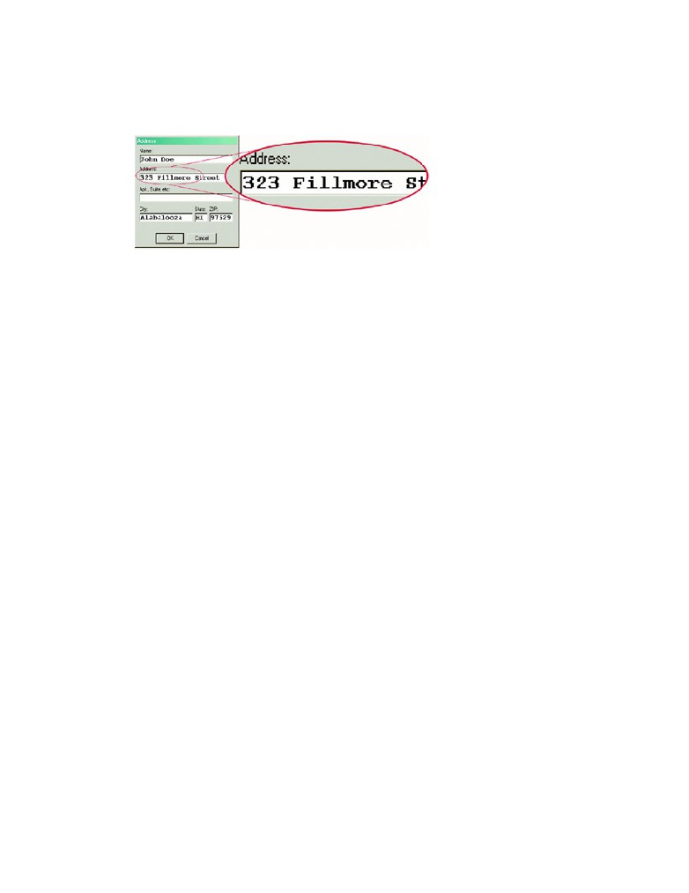
see how much easier it would have been if we had used a fat font (shown here as Courier
Bold).
Figure 10-5: A larger, mono-spaced, bold font like Courier is a lot easier to edit.
OK, so it takes up more space and doesn't look as cool to your graphic designers. Deal with
it! It's much easier to use. It even feels better, because as the user types, they get sharp,
clear text. And it's so much easier to edit when you have a typo.
Snap to Border
Here's a common programmer thought pattern: there are only three numbers: 0, 1, and n. If
n is allowed, all n's are equally likely. This thought pattern comes from the old coding
convention (probably smart) that you shouldn't have any numeric constants in your code
except for 0 and 1. (Constants other than 0 and 1 are referred to as "magic numbers." I don't
even want to get into the psychology of that.) For example, programmers tend to think that if
your program allows you to open multiple documents, it must allow you to open infinite
documents (as memory allows), or at least 232, the only magic number programmers
concede. A programmer would tend to look with disdain on a program that limited you to
twenty open documents. "Twenty?! Why twenty? It's not even a power of two!"
Another implication of all n's are equally likely is that programmers tend to think that if users
are allowed to resize and move windows, they should have complete flexibility over where
these windows go, right down to the last pixel. After all, positioning a window two pixels from
the top of the screen is "equally likely" as positioning a window exactly at the top of the
screen.
But it's not true. As it turns out, it's not equally likely. There are many good reasons why you
might want a window exactly at the top of the screen (it maximizes screen real estate), but
there really aren't any reasons to leave two pixels between the top of the screen and the top
of the window. So, in reality, 0 is much more likely than 2.
The programmers over at Nullsoft, creators of WinAmp, managed to somehow avoid the
programmer-think that has imprisoned the rest of us for a decade. WinAmp has a great
feature. When you start to drag the window near the edge of the screen (coming within a few
pixels), it automatically snaps to the edge of the screen perfectly, which is probably exactly
what you wanted since 0 is so much more likely than 2.
The Juno main window has a similar feature: it's the only application I've ever seen that is
"locked in a box" on the screen and cannot be dragged beyond the edge. This is a great
idea. What are the chances that you really wanted your application to be hanging halfway off
the screen? You lose a little bit of flexibility, but in exchange, you get a user interface that
recognizes that precisely controlling the mouse is hard, so why should you have to? This
innovation (which every program could use) eases the burden of window management in an
intelligent way.
58
Look closely at your program's user interface and give us all a break. Pretend that we are
gorillas or maybe smart orangutans and that we have trouble with the mouse. Then, design
your interface so that it's good enough to gesture with the mouse instead of controlling it
precisely like a surgeon's scalpel, and we'll be much more productive.
59
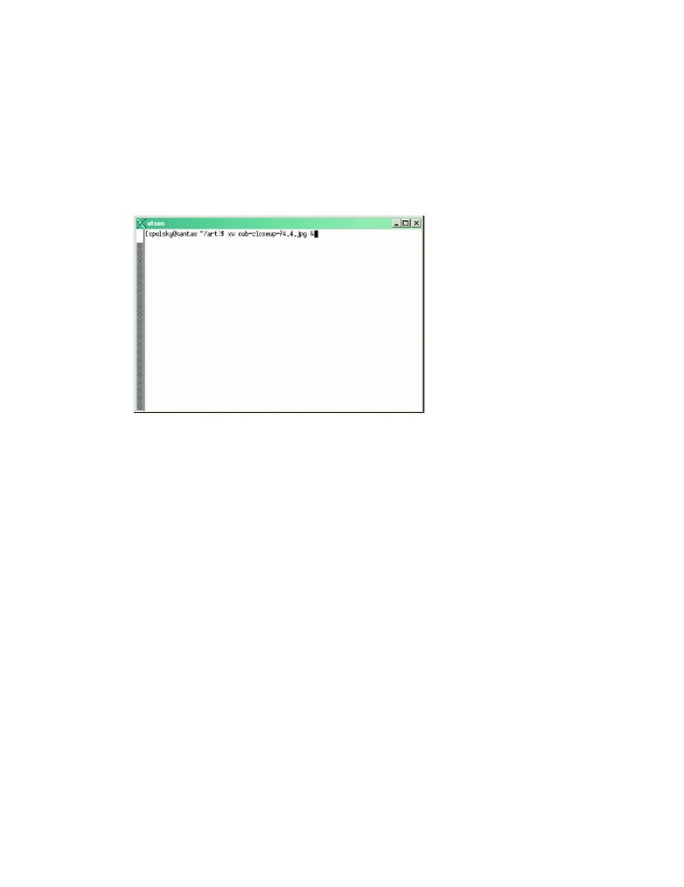
Chapter 11: People Can't Remember
Overview
One of the early principles of GUI interfaces was that you shouldn't ask people to remember
things that the computer could remember. In the really, really old days of command-line
interfaces, if you wanted to open a file, you had to type its name (see Figure 11-1).
Figure 11-1: Opening a file the command-line way. You have to remember that "xv" is
the command that displays a picture, and you have to remember the file name.
The classic example of not relying on people's memory is the Open File dialog box, which
shows people a list of files rather than asking them to recall and type the exact file name.
People remember things a lot better when they are given some clues, and they'd always
rather choose something from a list than recall it from memory. See Figure 11-2.
60
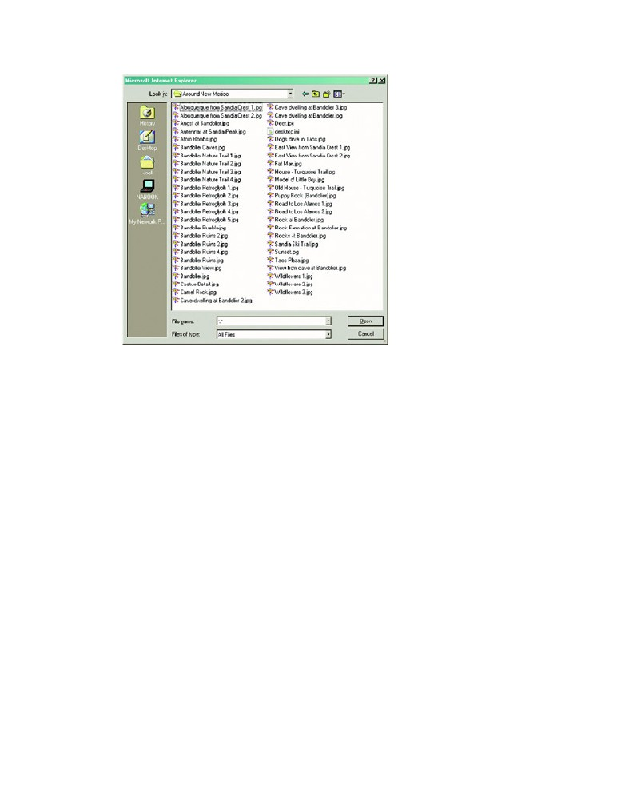
Figure 11-2: Opening a file the Windows way.You can choose the picture from a list of
files.
Things got even better when Windows 98 introduced thumbnails. Now you can see small
versions of your pictures, which make it even easier to find the one you want, as shown in
Figure 11-3.
61
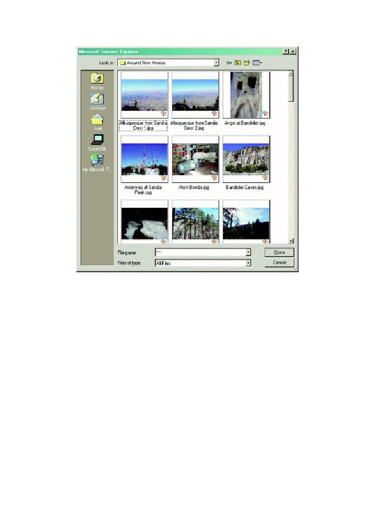
Figure 11-3: Opening a file with thumbnails. This is a lot easier than remembering the
names you gave to all of your files.
Another example is the menus themselves. Historically, providing a complete menu of
available commands replaced the old command-line interfaces where you had to memorize
the commands you wanted to use. This is, fundamentally, the reason why command-line
interfaces are simply not better than GUI interfaces, no matter what your UNIX friends tell
you. Using a command-line interface is like having to learn the complete Korean language
just to order food in the Seoul branch of McDonalds. Using a menu-based interface is like
being able to point to the food you want and grunt and nod your head: it conveys the same
information with no learning curve.
You can also see the minimum-memory principle at work in features like autocompletion.
When you need to type something, some programs make educated guesses about what
you're about to type, as shown in Figure 11-4. In this example, as soon as you type M, Excel
guesses that you are likely to be typing Male, because you've typed Male before in this
column and proposes that word as the auto-completion. But the ale is preselected so that if
you didn't mean to type Male, you can continue typing (perhaps ystery) and overwrite
Excel's guess with no lost effort.
62
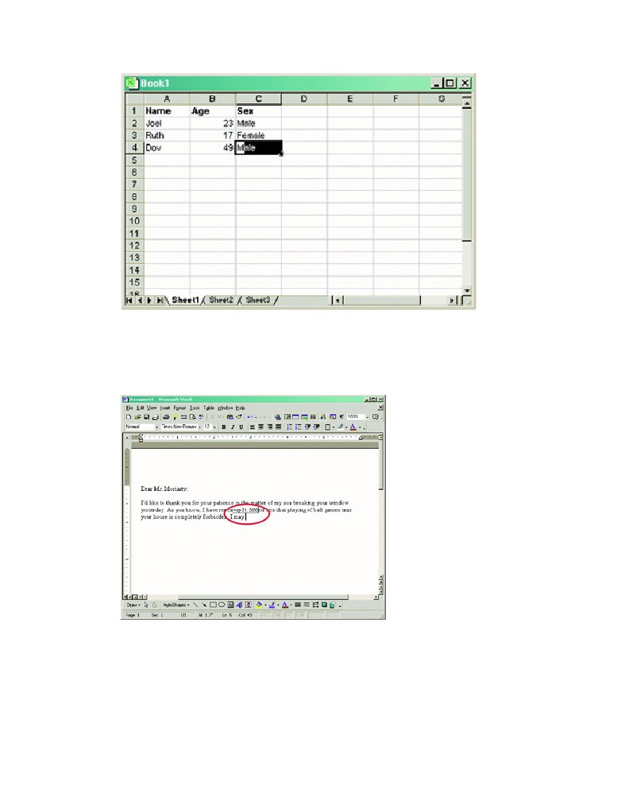
Figure 11-4: Autocompletion
Microsoft Word gets a bit carried away in guessing what you are about to type, as anybody
that has ever used this product during the merry month of May has discovered (see Figure
11-5).
Figure 11-5: Autocompletion taken too far
Designing for People Who Have Better Things to Do with Their
Lives, Redux
One good way to test the usability of a program or dialog you've never seen before is to act
a little stupid. Don't read the words on the dialog. Make random assumptions about what
things do without verifying. Try to use the mouse with just one finger. (No, not that finger).
63
Make lots of mistakes and generally thrash around. See if the program does what you want,
or at least, gently guides you instead of blowing up. Be impatient. If you can't do what you
want right away, give up. If the UI can't withstand your acting immature and stupid, it could
use some work.
In the preceding chapters, I've brought up three principles:
1. Users don't read stuff (Chapter 9).
2. Users can't use the mouse (Chapter 10).
3. Users can't remember anything (this chapter).
"Joel," you say, "admit it. You just think that users are dolts. Why don't you just tell us to
design programs for dolts and get on with our lives?"
But it's not true! Disrespecting users is how arrogant software like Microsoft Bob gets
created (and dumped in the trash bin), and nobody is very happy.
Still, there is a much worse kind of arrogance in software design: the assumption that "my
software is so damn cool, people are just going to have to warp their brains around it." This
kind of chutzpah is pretty common in the free software world. Hey, Linux is free! If you're not
smart enough to decipher it, you don't deserve to be using it!
Human aptitude tends towards the bell curve. Maybe 98% of your customers are smart
enough to use a television set. About 70% of them can use Windows. 15% can use Linux.
1% can program. But only 0.1% of them can program in a language like C++. And only
0.01% of them can figure out Microsoft ATL programming.
The effect of this sharp drop-off is that whenever you "lower the bar" by even a small
amount, making your program, say, 10% easier to use, you dramatically increase the
number of people who can use it by, say, 50%.
I don't really believe that people are dolts, but I think that if you constantly try to design your
program so that it's easy enough for dolts to use, you are going to make a popular, easy to
use program that everybody likes. And you will be surprised by how seemingly small
usability improvements translate into a lot more customers.
64
Chapter 12: The Process of Designing a
Product
Overview
We've talked about the principles of good design, but principles only give you a way to
evaluate and improve an existing design. So, how do you figure out what the design should
be in the first place? Many people write big, functional outlines of all the features they have
thought up. Then they design each one and hang it off of a menu item (or Web page). When
they're done, the program (or Web site) has all the functionality they wanted, but it doesn't
flow right. People sit down and don't know what it does, and they don't know how to use it to
accomplish what they want.
Microsoft's solution to this is something called Activity-Based Planning. (As far as I can tell,
this concept was introduced to Microsoft by Mike Conte on the Excel team who got bored
with that and went on to a second career as a race car driver). The key insight is to figure out
the activity that the user is doing and then make it easy to accomplish that activity. This is
best illustrated with an example.
You've decided to make a Web site that lets people create greeting cards. Using a
somewhat naïve approach, you might come up with the following list of features:
1. Add text to card.
2. Add picture to card.
3. Get predesigned card from library.
4. Send card:
a. Using email
b. By printing it out
For lack of any better way of thinking about the problem, this might lead itself to a typical
Macintosh user interface circa-1985: a program that starts out with a blank card and includes
menu items for adding text and pictures, for loading cards from a library, and for sending
cards. The user is going to have to browse through the menus trying to figure out what
commands are available and then figure out how to put these atomic commands together to
create a card.
Activity-based planning is different. Activity-based planning says that you need to come up
with a list of activities that users might do. So, you talk to your potential users and come up
with this "Top Three" list:
1. Birthday Greeting
2. Party Invitation
3. Anniversary Greeting
Now, instead of thinking about your program like a programmer (in terms of, which features
do you need to provide in order to make a card), you're thinking about it like the user, in
terms of what activities the user is doing, specifically:
1. Sending a birthday card
2. Planning a party, and inviting people to it
3. Sending an anniversary card
Suddenly, all kinds of ideas will rush into your head. Instead of starting with a blank card,
you might start with a menu like this:
65
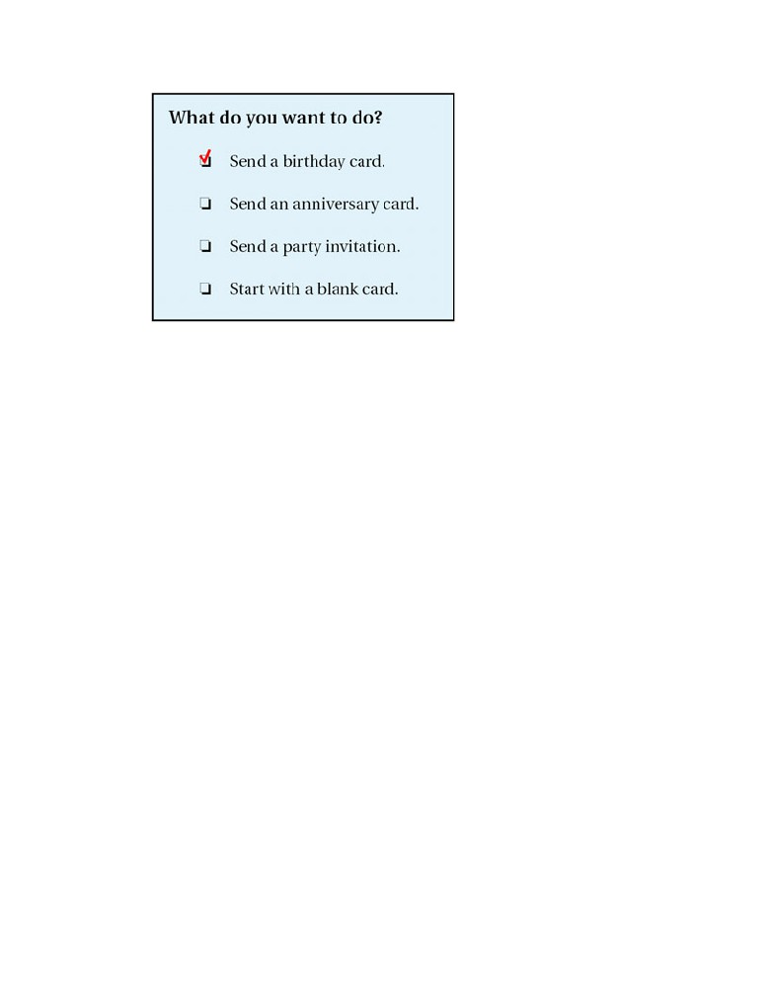
Users will suddenly find it much easier to get started with your program without having to
browse through the menus since the program will virtually lead them through the steps to
complete the activity. (There is a risk that if you don't pick the activities correctly, you will
alienate or confuse users who might have been able to use your program to, say, send a
Hanukkah card but don't see that as a choice. So be careful in picking activities that blanket
the majority of the market you want to target.)
Just looking at our list of three activities suggests some great features that you might want to
add. For example, if the user is sending a birthday or anniversary card, they might want to
be reminded next year to send a card to the same person…so you might add a checkbox
that says "remind me next year." And a party invitation needs a way to RSVP, so you might
add a feature that lets them collect RSVPs from people electronically. Both of these feature
ideas came from looking at the activity that users were performing instead of the features in
the application.
This example is trivial; for any serious application, the rewards of activity-based planning are
even greater. When you're designing a program from scratch, you already have a vision of
what activities your users are going to be doing. Figuring out this vision is not hard at all, it
takes almost no effort to brainstorm with your colleagues, write down a list of potential
activities, and then decide which ones you want to focus on. The simple act of listing these
activities on paper will help your overall design enormously.
Activity-based planning is even more important when you are working on version 2 of a
product that people are already using. Here, it may be a matter of observing some of your
existing customers to see what they are using your program to accomplish.
In the early days of Excel, up to about version 4.0, most people at Microsoft thought that the
most common user activity was doing financial "what-if" scenarios, such as changing the
inflation rate to see how it affects profitability.
When we were designing Excel 5.0, the first major release to use serious activity-based
planning, we only had to watch about five customers using the product before we realized
that an enormous number of people just use Excel to keep lists. They are not entering any
formulas or doing any calculation at all! We hadn't even considered this before. Keeping lists
turned out to be far more popular than any other activity with Excel. And this led us to invent
a whole slew of features that make it easier to keep lists: easier sorting; automatic data
entry; the AutoFilter feature, which helps you see a slice of your list; and multi-user features,
which let several people work on the same list at the same time while Excel automatically
reconciles everything.
66
While Excel 5.0 was being designed, Lotus had shipped a "new paradigm" spreadsheet
called Improv. According to the press releases, Improv was a whole new generation of
spreadsheet, which was going to blow away everything that existed before it. For various
strange reasons, Improv was first available on the NeXT, which certainly didn't help its sales,
but a lot of smart people believed that Improv would be to NeXT as VisiCalc was to the
Apple II: it would be the killer app that made people go out and buy all new hardware just to
run one program.
Of course, Improv is now a just footnote in history. Search for it on the Web and the only
links you'll find are from over-organized storeroom managers who have, for some sick
reason, made a Web site with an inventory of all the stuff in their closet collecting dust.
Why? Because in Improv, it was almost impossible to just make lists. The Improv designers
thought that people were using spreadsheets to create complicated multi-dimensional
financial models. Turns out, if they had asked people, they would have discovered that
making lists was vastly more popular than multi-dimensional financial models. And in Improv,
making lists was a downright chore, if not impossible. Oops.
So, activity-based planning is helpful in the initial version of your application where you have
to make guesses about what people want to do. But it's even more helpful when you're
planning the upgrade because you understand what your customers are doing.
Another example from the Web is the evolution of Deja.com, which started out as a huge,
searchable index of Usenet called DejaNews. The original interface basically had an edit box
that said "search Usenet for blah," and that was it. In 1999, a bit of activity-based planning
showed that one common user activity was researching a product or service of the "which
dishwasher should I buy" nature. Deja was completely reorganized and today it is more of a
product-opinion research service: the Usenet searching ability is almost completely hidden.
This annoyed the small number of users who were using the site to search for whether their
Matrox video card worked with Windows 2000, but it delighted the much larger population of
users who just wanted to buy the best digital camera.
The other great thing about activity-based planning is that it lets you make a list of what
features you don't need. When you create any kind of software, the reality is that you will
come up with three times as many features as you have time to create. And one of the best
ways to decide which features get done and which features get left out is to evaluate which
features support the most important user activities.
When you are struggling to cut features, having a detailed list of activities you want to
support is going to make it much easier. And it's a great way to convince crabby old Marge
that her beloved lint-removal feature isn't really worth spending time on.
Imaginary Users
The best UI designers in the industry may bicker among themselves, but they all agree on
one thing: you have to invent and describe some imaginary users before you can design
your UI. You may remember back in Chapter 1 when I introduced an imaginary user named
Pete.
Pete is an accountant for a technical publisher who has used Windows for six years at
the office and a bit at home. He is fairly competent and technical. He installs his own
software; he reads PC Magazine; and he has even programmed some simple Word
macros to help the secretaries in his office send invoices. He's getting a cable modem at
home. Pete has never used a Macintosh. "They're too expensive," he'll tell you. "You
can get a 733 MHz PC with 128 Meg RAM for the price of…" OK, Pete. We get it.
67
When you read this, you can almost imagine a user. I could also have invented quite another
type of user:
Patricia is an English professor who has written several well-received books of poetry.
She has been using computers for word processing since 1980, although the only two
programs she has ever used are Nota Bene (an ancient academic word processor) and
Microsoft Word. She doesn't want to spend time learning the theory of how the computer
works, and she tends to store all her documents in whatever directory they would go in if
you didn't know about directories.
Obviously, designing software for Pete is quite different from designing software for Patricia,
who, in turn, is quite different from Mike, a sixteen-year-old who runs Linux at home, talks on
IRC for hours, and uses no "Micro$oft" software.
When you invent these users, thinking about whether your design is appropriate becomes
much easier. For example, a lot of programmers tend to overestimate the ability of the
typical user to figure things out. Whenever I write something about command-line interfaces
being hard to use, I get the inevitable email barrage saying that command-line interfaces are
ultra-powerful because you can do things like gunzip foo.tar.gz | tar xvf -. But
as soon as you have to think about getting Patricia to type "gunzip…" it becomes obvious
that that kind of interface just isn't going to serve her needs, ever. Thinking about a "real"
person gives you the empathy you need to make a feature that serves that person's need.
(Of course, if you're making Linux backup software for advanced system administrators, you
need to invent a character like "Frank" who refuses to touch Windows, which he only refers
to as an "operating system" while making quotation marks in the air with his fingers; who
uses his own personally modified version of tcsh; and who runs X11 with four tiled xterms
all day long. And about 11 xperfs.)
Designing good software takes about six steps:
1. Invent some users.
2. Figure out the important activities.
3. Figure out the user model—how the user will expect to accomplish those activities.
4. Sketch out the first draft of the design.
5. Iterate over your design again and again, making it easier and easier until it's well
within the capabilities of your imaginary users.
6. Watch real humans trying to use your software. Note the areas where people have
trouble, which are probably areas where the program model isn't matching the user
model.
Watch Out for Unintended Consequences
One of the most famous UI metaphors of all time is the trash can from the Macintosh
desktop. The original metaphor was terrific: when you dragged a file to the trash can, it was
deleted. And the neat thing was, you could look in the trash can and see all your old deleted
files! So if you ever dragged something there by mistake, you could get it back. How do you
get a deleted file back? You drag it out of the trash can, of course! An excellent metaphor
(see Figure 12-1).
68
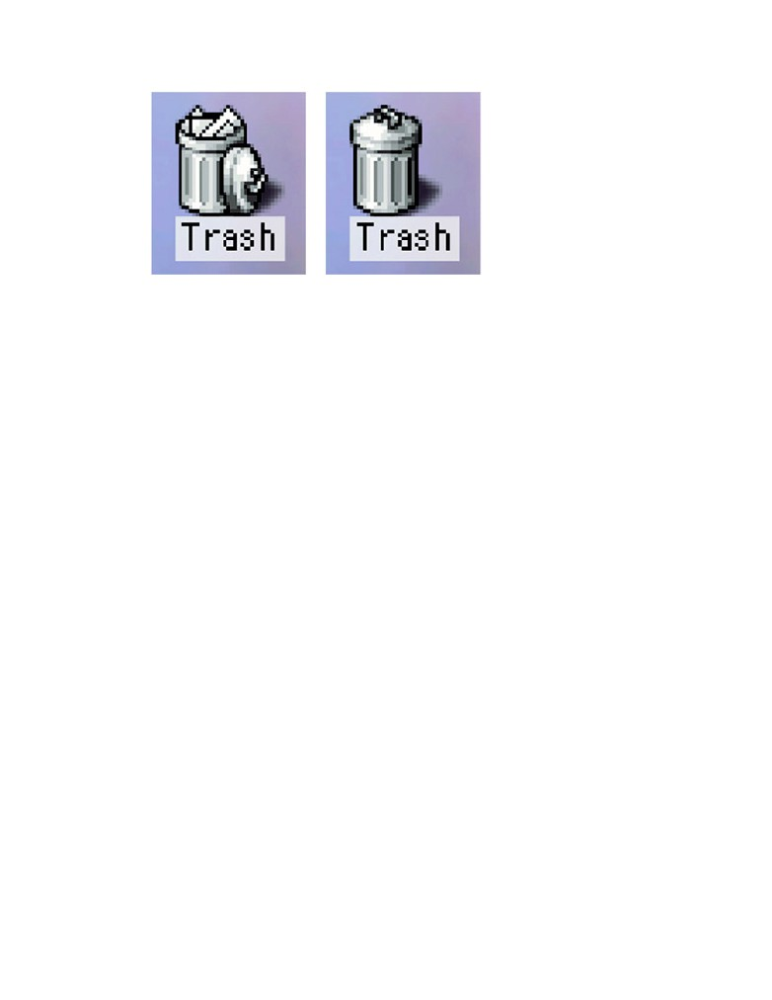
Figure 12-1: The Macintosh trashcan, bane of neat freaks everywhere
There was one problem. After a few releases, the Mac designers went a little too far and
decided that a trash can with something in it should look "stuffed," so when you drag
something in there, you get a full trash can instead of an empty trash can. The trouble is that
neat freaks were distracted by the full trash can. It looks messy. When they wanted to clean
up, they would empty the trash. Over time, many people got into the habit of dragging things
to the trash can and then mechanically emptying the trash so that the trash can wouldn't look
messy, thus defeating its original purpose: to provide a way to get things back!
The moral of this story: spend a few hours quietly watching real users in their real
environment; there's a lot you can learn. I'll talk more about this in the next chapter.
69
Chapter 13: Those Pesky Usability Tests
Many software companies have usability testing labs. Here's the theory behind a usability
lab. (To those of you who have done tests in a usability lab before, I must ask that you
please try to refrain from snickering and outright guffaws until I get to the end of the theory,
please. I'll get to the reality soon enough.)
A Story of Silicon Jungle
One fine day, Eeny the Elephant is lumbering through the jungle when he hits upon a great
idea. "Everybody tried B2C and that didn't work," thinks Eeny. "Then they tried B2B, and all
those companies are in the dumpster, too! The answer is obvious: B2A!"
Eeny quickly raises $1.5 million in seed financing from a friendly group of largish birds who
promise a mezzanine round of "five at twenty with preferred warrants" and starts his
company. After hiring a couple dozen executives with experience at places like failed
dehydrated-hamburger chains and mustache-waxing drive-ins, he finally gets around to
hiring a Chief Technology Orangutan (CTO), who, at least, is smart enough to realize that
"That Really Cool but Top Secret B2A Company" (as it's now known) is going to need some
UI designers, software architects, Directors of Technical Research, usability testing
engineers, and, "oh, maybe one or two actual programmers? If we have any stock options
left, that is."
So, the architects and UI designers get together and design the software. They make nice
storyboards, detailed functional and technical specifications, and a schedule with elegant
Gantt and PERT charts that fills an entire wall. Several million dollars later, the programmers
have actually built the thing, and it looks like it's actually working. It's on time and under
budget, too! In theory. But this story is the theory, not the reality, remember?
"That Really Cool, etc." (as it's now known) has hired usability engineers who have spent the
last six months building a state-of-theart usability testing lab. The lab has two rooms: one for
observers, with a one-way mirror that allows them to spy on the other room where the
"participants" sit. (The usability testers have been warned not to call users "users," because
users don't like being called users. It makes them feel like drug addicts.) The participants sit
down at a computer with several video cameras recording their every move while they
attempt to use The Product.
For a few weeks, a steady stream of mysterious visitors representing all walks of life and
most of the important phyla come to the "That Really, etc." campus to take part in the
usability tests. As the "participants" try out the software, the usability testers take detailed
notes on their official-looking clipboards. The test lasts a couple of weeks while the
programmers take a well-deserved, all-expenses-paid rest in Bali to "recharge the ol'
batteries" and maybe get tans for the first time in their young, dorky lives.
After about three weeks of this, the Chief Tester of Usability (CTU) emerges from the lab. A
hush comes over the company cafeteria (free gourmet lunches). All eyes are on the CTU,
who announces, "The results of the usability test will be announced next Tuesday." Then
she retreats back into her lab. There is an excited hubbub. What will the results be? Eeny
can hardly wait to find out.
The next Tuesday, the entire staff of "That, etc." (as it's now known) have gathered in the
company cafeteria to hear the all-important usability results. The programmers are back from
the beach, freshly scrubbed and sunburned, wearing their cleanest Star Trek-convention T-
shirts. Management arrives dressed identically in Gap pleated khakis. The marketing team
70
hasn't been hired yet. (Don't argue with me, it's my story, and in my story we don't hire
marketing until we have a product).
The tension is palpable. When the CTU comes into the room, the excitement is incredible.
After a tense moment fumbling with Power Point and trying to get the LCD projector to work
(surprise! it doesn't work the first time), the results of the usability test are finally presented.
"We have discovered," says the CTU, "that 73% of the participants were able to accomplish
the main tasks of the product." A cheer goes up. Sounds pretty good! "However, we've
discovered that 23.3% of the users had difficulty or were completely unable to check their
spelling and make much-needed corrections. The usability team recommends improving the
usability of the spell checker." There are a few other problems, too, and the designers and
programmers take detailed notes in their identical black notebooks.
The Chief Code Compiling and Programming Officer (C3PO) stands up. "Well, looks like
we've got our work cut out for us, boys and girls!" The programming team, looking earnest
and serene, files out of the cafeteria to get back to their dual Pentium workstations and fix
those usability problems!
Well!
A Bitter Descent into Reality
"In theory there is no difference between theory and practice. In practice there is," as Yogi
Berra probably didn't say. Unless you've been working at a big software company, you may
have never seen an actual usability lab. The reality of usability testing is really quite different
from the theory.
You Don't Need to Test with a Lot of Users
In Chemistry Lab back in high school, the more times you repeated your experiment, the
more precise the results were. So, your intuition would probably tell you that the more people
you bring in for usability tests, the better.
As it turns out, with a usability test, you don't really care about statistics. The purpose of a
usability test is simply to find the flaws in your design. Interestingly, in real life, if you have
major usability problems, it only takes about five or six people before you find them. Usability
testers have long since discovered that the marginal number of usability problems that you
find drops off sharply after the sixth tester and is virtually zero by the twelfth user. This is not
science here; it's digging for truffles. Take about 3 or 4 pigs out to the forest, let them sniff
around and you'll find most of the truffles. Bringing out 1024 pigs is not going to find any
more truffles.
You Usually Can't Test the Real Thing
It's a common sport among usability pundits to make fun of software teams that don't leave
enough time in the schedule to do usability tests, change things in response, and retest.
"Build one to throw away!" say the pundits.
Pundits, however, don't work in the real world. In the real world, software development costs
money, and schedules are based on real world problems (like trying to be first to market, or
trying to complete a fixed-budget project on time before it becomes a money-losing
proposition). Nobody has time to throw one away, OK? When the product is done, we have
to ship it ASAP. I've never seen a project where it is realistic to do a usability test on the final
product and then open up the code again to fix problems.
71
Given the constraints of reality, it seems like you have three choices:
1. You can test the code long before it's complete. It may crash too often, and it's unlikely
to reflect even the current understanding of what the final product is going to look like,
so the quality of the usability results may be limited.
2. You can test a prototype. But then you have to build the prototype, which is almost
never easier than building the final product. (Sometimes you can build a prototype
faster using a rapid development tool like Visual Basic, while your final product is in
C++. Let me clue you in—if you can build working prototypes faster than you can
build the real code, you're using the wrong tools.)
3. You can test the code when it's done, then ignore the results of the test because you
have to rush the code out to market.
None of these approaches is very satisfactory. I think that the best times to do
usability tests are as follows:
4. Do hallway usability tests, also known as "fifty-cent usability tests," when you first
design a new feature. The basic idea is that you just show a simple drawing or screen
shot of your proposed design to a few innocent bystanders (secretaries and
accountants in your company make good victims), and ask them how they would use
it.
5. Do full-blown usability tests after you ship a version of your product. This will help you
find a whole slew of usability problems to fix for the next version.
The Joel Uncertainty Principle
The Joel Uncertainly Principle holds that:
You can never accurately measure the usability of a software product.
When you drag people into a usability lab to watch their behavior, the very act of watching
their behavior makes them behave differently. For example, they tend to read instructions
much more carefully than they would in real life. And they have performance anxiety. And
the computer you're testing them on has a mouse when they're used to a trackball. And they
forgot their reading glasses at home. And when you ask them to type in a credit card
number, they're reading a fake credit card number off a sheet you gave them, not off a real
credit card. And so on and so forth.
Many usability testers have tried to ameliorate this by testing users "in their natural setting,"
in other words, by following them home with a zoom-lens spy camera and hiding behind a
bushy bougainvillea. (Actually, it's more common just to sit behind them at their desk at work
and ask them to "go about their usual activities.")
Usability Tests Are Too Rigged
In most usability tests, you prepare a list of instructions for the user. For example, if you
were usability testing an Internet access provider, you might have an instruction to "sign up
for the service." (I have actually done this very usability test several times in my career.)
So far, so good. The first user comes in, sits down, starts signing up for the service, and gets
to the screen asking them how they want to pay. The user looks at you helplessly. "Do I
gotta pay for this myself?"
"Oh wait," you interrupt. "Here, use this fake credit card number." The sign-up procedure
then asks if they would like to use a regular modem, a cable modem, or a DSL line.
72
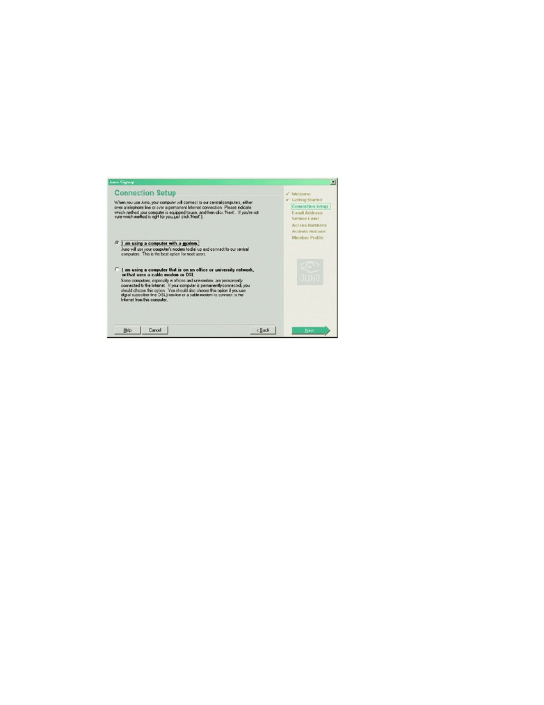
"What do I put here?" asks the user. Possibly because they don't know the answer, but
possibly because they know the answer for their computer, only they're not using their
computer, they're using yours, which they've never seen before, in a usability lab, where
they've never been before. So you have no way of knowing whether your UI is good enough
for this question). At Juno, we knew that the dialog in Figure 13-1 was likely to be the source
of a lot of confusion. People certainly had a lot of trouble with it in the lab, but we weren't
quite sure if that was because they didn't understand the dialog or if they just didn't know
how the lab computer was set up. We even tried telling them "pretend you're at home," but
that just confused them more.
Figure 13-1: The dialog that we couldn't figure out how to usability test.
Five minutes later, the program asks for the user's address, and then it crashes when they
put in their zip code because of a bug in the early version of the code that you're testing. You
tell the next person who comes in, "when it asks for your zip code, don't type anything in."
"OK, sure boss!" But they forget and type the zip code anyway, because they're so used to
filling out address forms onscreen from all the crap they've bought on the Web.
The next time you do the usability test, you're determined to prevent these problems. So you
give the user a nice, step-by-step, detailed list of instructions, which you have carefully
tested so they will work with the latest development build of the software. Aha! Now,
suddenly you're not doing a usability test. You're doing something else. Charades.
Theatre of the Macabre. I don't know what it is, but it's not a usability test because you're just
telling people exactly what to do and then watching them do it.
One solution to this problem has been to ask people to bring in their own work to do. With
some products (maybe word processors), that's possible, although it's hard to imagine how
you could get someone to test your exciting new mailing list feature if they don't need a
mailing list. But with many products there are too many reasons why you can't get a realistic
usability test going "in the lab."
Usability Tests Are Often Done to Resolve an Argument
More than half of the usability tests I've been involved in over my career have been the
result of an argument between two people about the "best" way to do something. Even if the
original intent of the usability test was innocent enough, whenever two designers (or a
designer and programmer, or a programmer and a pointy-haired manager) get into a fight
73
about whether the OK button should be on the left or the right of the Cancel button, this
dispute is inevitably resolved by saying, "we'll usability test it!"
Sometimes this works. Sometimes it doesn't. It's pretty easy to rig a usability test to show the
righteousness of one side or the other. When I was working on the Microsoft Excel team,
and I needed to convince the Visual Basic team that object-oriented programming was "just
as easy" as procedural programming, I basically set up a usability test in which some
participants were asked to write cell.move and other participants were asked to write
move(cell). Since the audience for the usability test was programmers anyway, the
success rates of the non-object-oriented group and the object-oriented group were—
surprise, surprise—indistinguishable. It's great what you can prove when you get to write the
test yourself.
In any case, even if a usability test resolves a dispute, it doesn't do it in any kind of a
statistically valid way. Unless you test thousands of people from all walks of life under all
kinds of conditions, something that not even Microsoft can afford to do, you are not actually
getting statistically meaningful results. Remember, the real strength of usability tests is in
finding truffles—finding the broken bits so you can fix them. Actually looking at the results as
if they were statistics is just not justified.
Some Usability Test Results I Might Believe:
Almost nobody ever tried right-clicking, so virtually nobody found the new spell-
checking feature.
100% of the users were able to install a printer the new way; only 25% could install the
printer the old way.
There were no problems creating a birthday card.
Several participants described the animated paper clip as "unhelpful" and "getting in
the way."
Many people seemed to think that you had to press "Enter" at the end of every line.
Most participants had difficulty entering an IP address into the TCP/IP control panel
because the automatic tabbing from field to field was unexpected.
Some Usability Test Results I Would Not Believe:
When we used brighter colors, 5% more participants were able to complete the tasks.
(Statistically insignificant with such a small sample, I'm afraid).
Most participants said that they liked the program and would use it themselves if they
operated their own steel forge. (Everybody says that in a usability test. They're just
being nice, and they want to be invited back to your next usability test.)
Most participants read the instructions carefully and were able to assemble the model
airplane from Balsa wood right the first time. (They're only reading the instructions
because you told them to.)
65% of the people took more than four and a half minutes to complete the task. (Huh?
It's those precise numbers again. They make me think that the tester doesn't get the
point of usability tests. Truffles! We're looking for truffles!)
Usability Tests Create Urban Legends
My last employer's software was a bit unusual for a Windows program. In addition to the
usual File Exit menu item that has been totally standard on all GUI programs since
about 1984, this program had an Exit menu at the top level menu bar, visible at all times
(see Figure 13-2). When you consider that closing windows is probably the only thing in
Microsoft Windows that nobody has trouble with, I was a bit surprised that this was there.
74
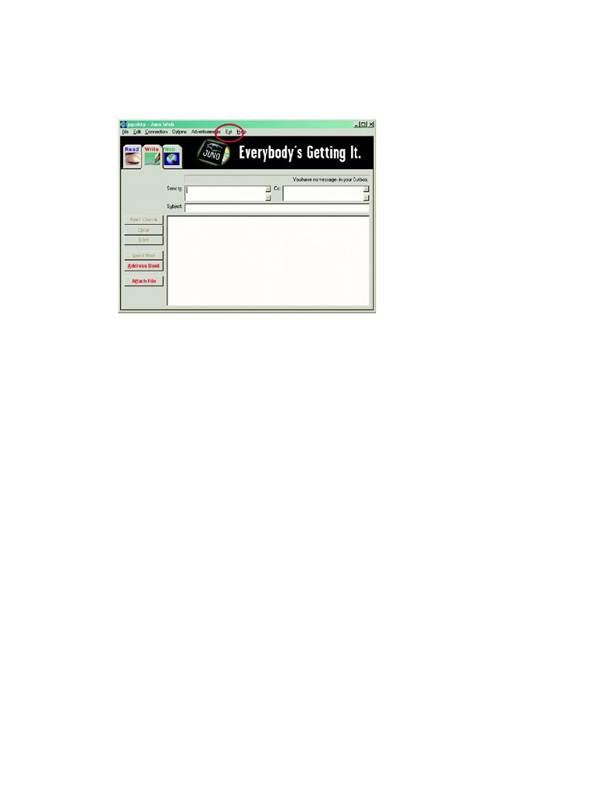
Somehow, every other Windows program on the planet manages without a top-level Exit
menu.
Figure 13-2: Huh? What's that doing there?
Well, Exit menus don't just spontaneously appear. I asked around. It turned out that when
the product was first designed, they had actually done some kind of marketing "focus
groups" on the product, and for some reason, the one thing that everybody remembered
from the focus group was that there were people who didn't know how to exit a Windows
program. Thus, the famous Exit menu. But the urban legend about this focus group lasted
far longer than it should have. For years after that, nobody had the guts to take out the Exit
menu.
Most software organizations do usability tests pretty rarely, and— worse—they don't retest
the improvements they made in response to the test. One of the risks of this is that some of
the problems observed in the test will grow into urban legends repeated through generations
of software designers and achieve a stature that is completely disproportional to their
importance. If you're a giant corporation with software used by millions of people and you
usability test it every few months, you won't have this problem. In fact, if you even bother to
retest with the changes you made, you won't have this problem (although nobody ever
manages to find time to do this before their product has to ship). Microsoft tested so many
doggone versions of the Start button in Windows 95 that it's not even funny, and people
would still come into usability labs not realizing that they were supposed to click on it to start
things. Finally, the frustrated designers had to insert a big balloon, which basically said,
"Click Me, You Moron!" (see Figure 13-3). The balloon doesn't make Windows any more
usable, but it does increase the success rate in the usability test.
75
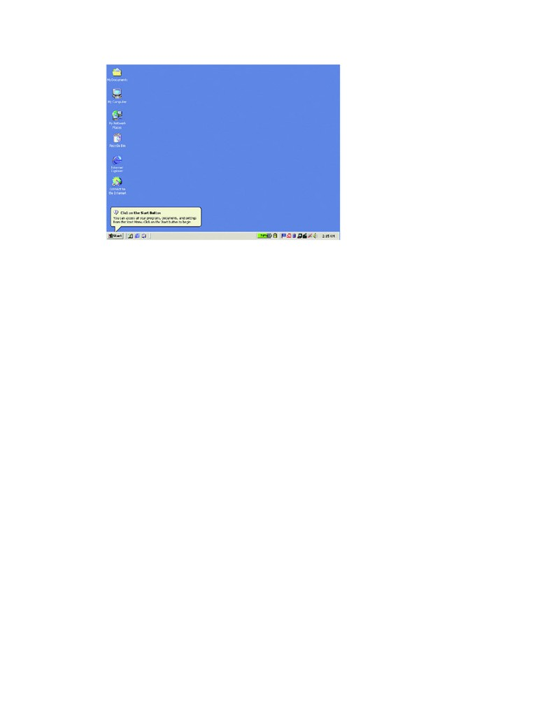
Figure 13-3: If you obsess about getting a 100% success rate on your usability test, you
can probably force it, but it hardly seems worth the effort. (Somebody who doesn't even
know to click the button isn't likely to understand what's going on when they do.)
A Usability Test Measures Learnability, Not Usability
It takes several weeks to learn how to drive a car. For the first few hours behind the wheel,
the average American teenager will swerve around like crazy. They will pitch, weave, lurch,
and sway. If the car has a stick shift, they will stall the engine in the middle of busy
intersections in a truly terrifying fashion.
If you did a usability test of cars, you would be forced to conclude that they are simply
unusable.
This is a crucial distinction. When you sit somebody down in a typical usability test, you're
really testing how learnable your interface is, not how usable it is. Learnability is important,
but it's not everything. Learnable user interfaces may be extremely cumbersome to
experienced users. If you make people walk through a fifteen-step wizard to print, people will
be pleased the first time, less pleased the second time, and downright ornery by the fifth
time they go through your rigmarole.
Sometimes all you care about is learnability: for example, if you expect to have only
occasional users. An information kiosk at a tourist attraction is a good example; almost
everybody who uses your interface will use it exactly once, so learnability is much more
important than usability. But if you're creating a word processor for professional writers, well,
now usability is more important.
And that's why, when you press the brakes on your car, you don't get a little dialog popping
up that says, "Stop now? (Yes/No)."
One of the Best Reasons to Have a Usability Test
I'm a programmer. You may think I'm some kind of (sneer) computer book writer or usability
"guru," but I'm not. I spend most of my time at work actually writing lines of code. Like most
programmers, when I encounter a new program, I'm happy to install it and try it out. I
download tons of programs all the time; I try out every menu item and I poke around every
nook and cranny, basically playing. If I see a button with a word I don't understand, I punch
it. Exploring is how you learn!
76
A very significant portion of your users are scared of the darn computer. It ate their term
paper. It may eat them if they press the wrong button. And although I've always known this
intellectually, I've never really felt this fear of the computer.
Until last week. You see, last week I set up the payroll for my new company. I have four
people to pay, and the payroll company has set me up with a Web-based interface in which I
enter payroll information. This interface has a suctionlike device directly hooked up to
vacuum money straight out of my bank account.
Yow. Now this Web site is scary. There are all kinds of weird buttons that say things like
"MISC (99) DEDUCTION." The funny thing is, I even know what a MISC (99) DEDUCTION
is—because I called up to ask them—but I have no idea whether the deduction should be in
dollars, hours, negative dollars, or what, and the UI doesn't tell me, and it's not in the help
file anywhere. (Well, the help file does say "Enter any MISC (99) deductions in the MISC
(99) DEDUCTION box," in the grand tradition of help files written by people who don't know
any more about the product than what they can figure out by looking at it.)
If this were just a word processor or a bitmap editor, I'd just try it and see what happens. The
trouble is, this is a vacuum-cleaner-like device programmed to suck money directly out of my
bank account. And due to the extreme incompetence of the engineers who built the site,
there is no way to find out what's going on until it's too late: the money has been sucked out
of my bank account and direct-deposited into my employees' accounts and I don't even find
out what happened until the next day. If I type 1000, thinking it means dollars, and it really
meant hours, then I'll get $65,000 sucked out of my account instead of $1000.
So, now I know what it feels like to be one of those ordinary mortals who will not do
something until they understand it fully.
Programmers, on the whole, are born without a lot of sympathy for how much trouble
ordinary people have using computers. That's just the way of the world. Programmers can
keep nineteen things in their short-term memory at once; normal people can keep about five.
Programmers are exceedingly rational and logical, to the point of exasperation; normal
people are emotional and say things like "my computer hates me." Programmers know how
hierarchical file systems work and think they are a neat metaphor; many normal people don't
understand how you could have a folder inside a folder. They just don't. One of the best, if
not the only, good reason to have a usability test is because it's a great way to educate
programmers about the real world. In fact, the more you can get people from your
engineering team involved in the usability tests, the better the results. Even if you throw
away the "formal" results of the test. And that's because one of the greatest benefits of a
usability test is to hammer some reality into your engineer's noggins about the real world
humans who use their product. If you do usability tests, you should require every member of
the programming team (including designers and testers) to participate in some way and
observe at least some of the participants. Usually this is pretty amusing to watch. The
programmers have to sit on their hands behind one-way glass as the user completely fails to
figure out the interface they just coded. "Right there, you moron!" the programmer shouts.
"The damn CLEAR button, right under your ugly pug nose!" Luckily, the room is soundproof.
And the programmer, chastened, has no choice but to come to grips with reality and make
the interface even easier.
Needless to say, if you outsource your usability test to one of those friendly companies that
does all the work for you and returns a nice, glossy report in a three-ring binder, you're
wasting your money. It's like hiring someone to go to college for you. If you're thinking of
doing this, I suggest that you take the money you would have spent on the usability test and
mail it directly to me. I accept Visa, MasterCard, and American Express. For $100,000, I'll
even send you a three-ring binder that says, "get rid of the Exit item on the main menu
bar."
77
Chapter 14: Relativity—Understanding UI Time
Warps
Overview
When you write software, you have to remember three rules:
1. Days are seconds.
2. Months are minutes.
3. Seconds are hours.
Confused? Don't worry. I'll explain in a minute. But first, a book review.
In 1956, Robert A. Heinlein, the Grand Master of science fiction, wrote a book for boys called
Time for the Stars. It's been a long time since I read it, but here's what I remember. A fairly
mysterious organization called the "Long Range Foundation" is planning an interstellar
space trip at a velocity pretty close to the speed of light to search out new planets to
colonize. In order to communicate between Earth and the rocket, they can't use radio, of
course, because it would be limited to the speed of light, and therefore too slow. So, they
decide to use mental telepathy, which, as we all know, is not restricted to the speed of light.
Silly enough? It gets better. The Long Range Foundation carefully selects two twin brothers,
Tom and Pat, who have tested very highly on the ESP test. They send one brother away on
the spaceship while the other stays home on Earth. And now the ship can communicate with
Earth simply by using mental telepathy between the brothers. Great!
Now, here's the educational bit. Since the spaceship is traveling near the speed of light, time
passes slower on the spaceship. So when Tom (or was it Pat?) comes back to Earth, he has
only aged a few years, but his brother has died of old age. It's a very poignant book, as
1950s juvenile pulp sci-fi goes.
Anyway. Back to software. (Aw, do we have to talk about that again? I was enjoying that
brief digression into space travel.) When you write software, you have to deal with so much
time dilation that science fiction sounds positively normal.
Days Are Seconds
It usually takes days of design, programming, and testing to create a fragment of software
that a user will experience in a matter of seconds. For commercial-quality software, a typical
small dialog box might take about four days to code, realistically. But the user will only spend
ten seconds in that dialog box.
What that means is that some aspects of the dialog may make perfect sense to you as a
programmer, because you spent four days thinking about them, but they won't necessarily
make sense to a user, who has to figure them out in a couple of seconds.
Figure 14-1, taken from Corel PHOTO-PAINT 9, shows one tab of a print dialog that
probably took months to design and create. The attention to detail shows throughout: there's
a handy preview pane, which graphically illustrates what the rest of the dialog means.
78
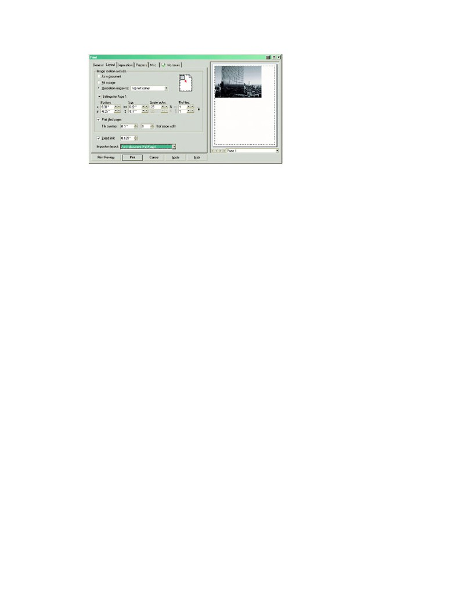
Figure 14-1: This tabbed Print dialog probably took months of work. But most users will
not be willing to spend more than about ten seconds figuring out how to print.
However, there are still a lot of things here which probably made perfect sense to the
programmer after three months of thinking about printing, but which users will probably not
figure out so quickly. What's all that stuff about tiling? What's an imposition layout? The fact
that the programmer had so much time to learn about printing while the user has only a
couple of minutes, at most, leads to a real imbalance of power. The programmer is
convinced that the dialog is quite straightforward and easy to use, and the user is just
downright flummoxed. Flummoxed!
The best solution to the "Days = Seconds" time warp is to do hallway usability tests. After
designing your dialog, print it out, take it down the hall to the lunchroom, and ask the first
three people you see to explain the dialog to you. If there are any serious problems, this will
probably uncover them.
Months Are Minutes
Let's pretend, for the sake of argument, that you discover that there's a real, unmet need for
grilled marshmallows in the workplace. "Popcorn and Cappuccinos are passé," you think. So
you set out to create a marshmallow-grilling device that you hope will take the world by
storm.
At first, your concept is quite simple. There's a slot in the top into which you pop the
marshmallows. Seconds later, they emerge, fully grilled and toasty warm, from a tray on the
bottom, ready to be eaten.
While you are trying to explain the whole concept to a manufacturer of business-grade
heating elements, the guy erupts in laughter. "Grilled marshmallows? Without graham
crackers? Who would eat one of those things without graham crackers?" Now you start to
worry. Most of the people you talked to seemed to like the idea, and many of them explicitly
stated that they hate graham crackers, but a bit more research shows that there's a whole
population of people that just will not eat their grilled marshmallows unless they have
graham crackers. So you add a second slot to your design, for graham crackers.
As time goes on, more problems are discovered. Certain inferior brands of marshmallows
cannot be reliably grilled without catching fire, so you add a little fire extinguisher button on
the front panel that puts out any accidental fires. The CEO you hired points out that you're
now two thirds of the way to making s'mores, so you add a third slot for putting in chocolate
bars, and a S'more button, which makes a tasty chocolate, marshmallow, and graham
cracker sandwich (although graham crackers come in two sizes, so you have to add a switch
to choose the size).
79
Then usability testing reveals that some people like their marshmallows almost raw, while
others want them virtually charred with liquefied middles (mmmm). It's not just a matter of
how long they cook: it's a matter of how quickly you turn them over the heat, whether the
heat is radiant or from a flame, and so on. Eventually your little marshmallow-grilling device
has six different adjustment knobs and two kinds of heating elements.
"This is for the workplace," your head UI designer tells you. "It will be used by many different
people. Those people aren't going to want to remember all their personal settings." So you
add a Save Settings button with a little LCD panel, and a Load Settings button. Now,
you can file your personal marshmallow-grilling settings under your own name.
"Privacy!" scream the privacy advocates. "What if we want to be able to save our settings
without every gossip in the office knowing how we like our s'mores?!" Fine. A password
feature is added.
"What if someone forgets their password?" Now it's getting ridiculous. OK. The password
feature is enhanced with one of those silly challenge-response questions like "What's your
mother's maiden name?" and, if hooked up to the LAN, it can email you your password when
you forget it.
By now, the tiny LCD panel has grown into a 15″ color screen, the control panel looks like
the cockpit of the space shuttle, and it costs $1275 to manufacture. But after two years in
development, the thing finally ships!
Your very first customer buys one and takes it home, excited. But when she gets it out of the
box, there's a two-hundred-page manual, a software license agreement, a control panel with
dozens of buttons, a programming handbook for the scripting language, and the screen is
asking her if she wants to sign up for AOL.
The "Months = Minutes" rule is a corollary to the "Days = Seconds" rule. When you create a
new software package, even a fairly simple one, it typically takes between six months and
two years from the initial conception to shipping the final bits. During those months or years,
you have an awful lot of time to learn about your own program and how it works. When you
invent a new concept every month or so for two years, the learning curve is not very steep—
for you. For your user, it means there are twelve things to learn right out of the box in the first
five minutes of using the dang thing.
The products that we recognize as being the best designs always seem to have the fewest
buttons. While those products were being created, it's pretty obvious that the designers kept
thinking of ways to simplify the interface, not complicate it. Eventually VCR designers
realized that when you stick a videotape in the slot, they should switch from TV to VCR
mode and start, um, playing the tape. And then they figured out that when it's done playing
the tape, it might as well rewind and eject it. For watching movies, at least, you don't need to
press a single button.
As you design and build your product, try to notice if you are adding complications or
removing complications. If you're adding complications, remember that something that
seems easy when you have months to design it is not going to seem so easy when your
user has only minutes to learn about it.
Seconds Are Hours
The third time warp rule is that it doesn't take very long before somebody gets bored and
decides that your program is slow. If your program feels slow, your users won't feel in
control, and they'll be less happy. "Seconds = Hours" refers to the fact that if you make
80
somebody wait, say, nine seconds, they will whine and cry about how it took hours. People
are not very fair. You can give them a Web site where they can find over thirty-four thousand
recipes for tuna casserole in seconds, something that used to take a trip to Washington,
D.C. and months of research in the Ladies Home Journal archives of the Library of
Congress, but if a recipe takes thirty seconds to appear on the screen, your ingrate users will
moan about the "World Wide Wait" and how slow their modem is.
How long is too long? This has been the subject of years of debate among usability experts
and Human Boredom Research scientists. I am happy to announce that after an exhaustive
survey of over twenty thousand college sophomores, I have the final answer. Boredom kicks
in after 2.73 seconds, precisely. So let's all keep our latency to 2.72 seconds or less, OK?
Just kidding!
The real answer is that it's not the passage of time that's boring, it's boredom that's boring. I
can walk three miles down Fifth Avenue in Manhattan without getting bored, but walking a
thousand feet past featureless cow pasture in Kansas feels like it takes an eternity. Boredom
is a function of the rate at which stimulating things happen to your brain.
When someone clicks on a link on a Web site, they are probably not doing anything but
waiting for that page to appear. So if it takes ten seconds to show up instead of five seconds,
it seems like a really long time. On the other hand, when they start to download the latest
Ricky Martin MP3 over a modem, it's going to take twenty minutes, so they find something
else to do while they wait. And if it takes twenty-one minutes instead of twenty minutes, it's
no big deal.
To fight boredom, create the illusion of low latency. Good UI designers use three tricks to do
this.
Trick One. Always respond immediately to the user's request, even if you don't have a final
answer. There's nothing more annoying than a program that appears as if it's not responding
to mouse clicks simply because it's performing a long operation. You should always give an
immediate response, even if it's nothing more than changing the cursor to an hourglass or
displaying a progress indicator. (Among other things, this lets the user know that the
program received their click. A program that doesn't respond immediately to mouse and
keyboard input appears dead to the user. At the very least, they will click again.)
Trick Two. Find creative ways to break up long operations. The best example I've seen of
this is in Microsoft Visual Basic. The designers of the Basic compiler realized that almost all
of the time spent compiling is actually spent parsing the program text (that is, breaking down
a line of code into its constituent parts). If it takes, say, half a second to parse a single line of
code, and one one-hundredth of a second for everything else, then a hundred-line program
will take fifty-one seconds to compile. But the Visual Basic designers put the parser into the
editor. When you hit Enter after typing a line of text into the editor, that line is immediately
parsed and stored in parsed form. So now, hitting Enter takes half a second, barely
perceptible, and compiling a hundred-line program takes one second, also barely
perceptible.
Trick Three is the exact opposite of Trick Two. When all else fails, bunch together all the
slow operations. The classic example is your extremely slow setup program. It's slow
because it has to download files, uncompress them, and install them. There's nothing you
can do about that. But what you can do is make sure that all the slow bits are done at the
end, after gathering any required input from the user. Have you ever started a long
installation procedure and gone to watch TV, only to come back an hour later to find that the
setup program has stopped and is waiting for you to OK the license agreement before it
starts downloading? When you have a really long operation, always get all the input you
81
need from the user first, then tell them explicitly that "this will take a while. Go get some
M&Ms."
82
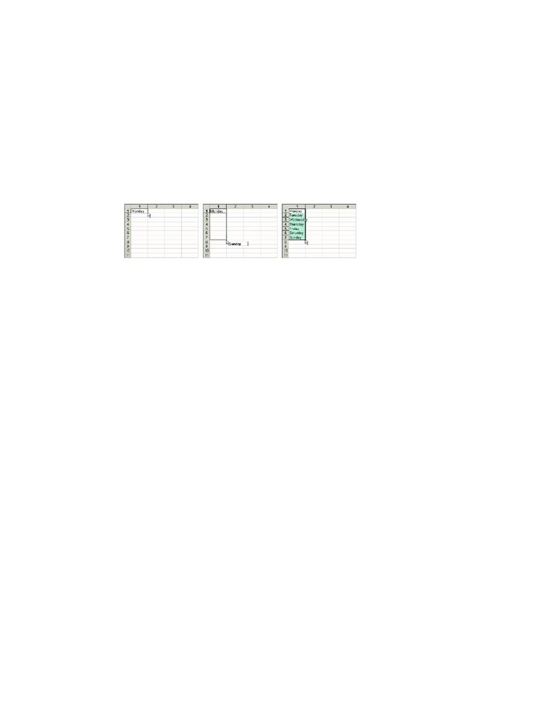
Chapter 15: But…How Do It Know?"
Remember the old advertising slogan for Thermoses? They "Keep Hot Drinks Hot and Cold
Drinks Cold!" To which your slightly brighter-than-average five-year-old asks: "But…how do
it know?"
That's what we in the software design field call a heuristic. Here are a few well-known
examples of heuristics:
If you type the word "teh" in Microsoft Word, Word will decide you probably meant "the"
and change it for you.
If you enter "Monday" into a cell in Microsoft Excel and then drag down, you get the
days of the week (see Figure 15-1).
Figure 15-1: Excel has heuristically decided that you must want the days of the
week because you happened to type Monday. (But… how do it know?)
When you search for text that looks like an address using the Google search engine, it
will offer to show you a map of that location.
If you buy a lot of Danielle Steel books on Amazon.com, and a new one comes out, the
next time you visit Amazon.com they will try to sell it to you.
As a rule of thumb, the way you know something is a heuristic is that it makes you wonder,
"how do it know?" The term heuristic itself comes from the field of artificial intelligence,
where it's used when the fuzziness of real life doesn't line up properly with the sharp
true/false world of computers. A more formal definition is that a heuristic is a rule that's
probably right, but not guaranteed to be right:
English speakers intend to type "the" much more often than they intend to type "teh." If
they typed "teh," it's probably a mistake.
When you type "Monday," you are probably referring to the day of the week. If you
expand out the series, you probably want to see days of the week.
When you type something that looks like a number followed by a name followed by the
word "Street," it's probably an address.
If you buy a lot of Danielle Steel books on Amazon.com, you'll probably want to buy the
new one.
The operative word here is always probably. We're not sure. That's why it's just a heuristic,
not a hard and fast rule.
In the olden days of programming, heuristics were very, very uncommon, because
programmers are very logical creatures and they don't like rules that are "98% right." In the
logical world of programmers, "teh" and "the" are equally valid sequences of three ASCII
characters, and there is no logical reason to give one of them special treatment. But as soon
as the designers of Microsoft Word broke through this mental logjam, they realized that there
were zillions of interesting assumptions you could make about what people wanted. If you
typed a paragraph starting with an asterisk, you probably want a bullet! If you type a bunch
of hyphens, you probably want a horizontal line! If you start out a document with "Dear
Mom," you're probably writing her a letter!
83
In their zeal for heuristics, the designers of Microsoft Office came up with more and more
clever features, which they marketed as IntelliSense. As a marketing pitch, these features
sound really neat. Word figures out what you want and does it "automatically!"
Unfortunately, somewhere, something went wrong. Woody Leonhard wrote a whole book
called Word 97 Annoyances, mostly about how to turn off the various heuristics, and people
were so thankful they gave the book five-star ratings on Amazon.com. Somehow, heuristics
crossed the line from "doing what you want automatically" to "annoyances."
Nobody sets out to write annoying software. So where is the line? When does a heuristic
stop being a really cool, helpful feature that saves time and start being an annoyance?
Here's the thought process that goes into developing a typical heuristic:
1. If the user types "teh," there's a 99% chance they meant "the."
2. So we'll just change it to "the" for them. Then there's a 1% chance that we're wrong.
3. If we're wrong, the user will have to undo the change we made.
4. Ninety-nine out of one hundred times, we improved the user's life. One time out of one
hundred, we made it worse. Net value to user: 98% improvement.
This tends to get generalized as:
1. If the user does x, there's an n% chance they meant y.
2. So we'll just do y for them. Then there's a (100 - n) chance that we're wrong.
3. If we're wrong, the user will have to correct us.
4. Net value to user: (100 - 2n)%, which is better than doing nothing for n>50.
Aha! I think I've found the bug. It's in step 4, which does not logically follow. Happiness is not
linear. It doesn't really make a user that happy when they type "teh" and get "the." And
happiness is not cumulative. The bottom line is that every single time you apply a heuristic
incorrectly, you are making the user a lot more unhappy than you made them happy by
applying the heuristic correctly all the other times. Annoyances are annoyances, and people
don't weigh annoyances against joy when deciding how happy to be. They just get annoyed.
How annoyed? That depends on step 3: how hard it is to undo the heuristic if the program
guessed wrong. In Word, it's supposed to be pretty easy: you can just hit Ctrl+Z, which
means Undo. But a lot of people, even people who know about the Undo command, don't
realize that Undo undoes the computer's actions as well as their own. And if you watch
them, they usually try to undo the error themselves by backspacing and retyping, and of
course, Word blindly applies the wrong heuristic again, and now they're getting really
frustrated and they don't know how to fix it. By now the annoyance factor is deep into the
triple digits, which has more than wiped out the minor satisfaction that the heuristic was
intended to cause in the first place.
In general, I don't like heuristics because of the principle from Chapter 2:
If your program model is nontrivial, it's probably not the same as the user
model.
This gets back to the "How Do It Know" factor. If users can't figure out why the program is
applying a heuristic, they will certainly be surprised by it, producing a classic example of "the
user model doesn't correspond to the (inscrutable) program model," and therefore, the
program will be hard to use. To judge a heuristic, you have to decide if the rule for the
heuristic is obvious enough, or if users are going to stare blankly at the screen and say,
"how do it know?" Turning "teh" into "the" may be obvious, but changing three dashes into a
horizontal line is probably not what people expected, and they probably won't know why it's
happening. This makes it a bad heuristic because it leads people to say, "how do it know?"
84
The second way to judge a heuristic is by the difficulty of undoing it, and how obvious the
undo procedure is. When you write a check in Intuit's Quicken program, and you start typing
the name of the payee, Quicken looks for other payees that start with the same letters as the
payee you're typing and pretypes that for you. So if you've paid someone named "Lucian the
Meatball" in the past, and you type "Lu," Quicken will propose the full name "Lucian the
Meatball." That's the heuristic part, and it's pretty obvious why it's happening—nobody's
going to ask "how do it know?" But the brilliant part of Quicken is that the "cian the Meatball"
part will be selected, so that if the heuristic was wrong, all you have to do was keep typing
and it will effectively undo the heuristic right away. (This invention spread from Intuit's
Quicken to Microsoft Excel and eventually to Microsoft Windows). When a heuristic is really
easy to undo, and it's obvious how to undo it, people won't be so annoyed.
The third way to judge a heuristic is, of course, by how likely it is to be correct. Changing
"teh" to "the" is pretty likely to be correct (although it was wrong about ten times while I was
typing this chapter). But a lot of other heuristics are less likely to be correct (such as Word's
morbid insistence that I want help writing a letter).
A good heuristic is obvious, easily undone, and extremely likely to be
correct. Other heuristics are annoying.
85
Chapter 16: Tricks of the Trade
Overview
Here we are, almost at the end of the book, and I still have a whole bunch of important
factoids to tell you that don't fit neatly into chapters. But they're pretty important factoids:
Know how to use color.
Know how to use icons.
Know the rules of internationalization.
Let's go through these one at a time.
Know How to Use Color
When I set up my office files, I bought a big box of file folders. The box came with four
different color folders: red, yellow, manila, and blue. I decided to use one color for clients,
one color for employees, one color for receipts, and the fourth color for everything else.
Outrageously sensible, right?
No. The truth is that when I'm not looking at the files, I can't remember the color scheme,
and in fact, the color scheme doesn't seem to help at all. As it turns out, using different
colors is good for distinguishing things, but not for coding things. If you have a bunch of red
folders and a bunch of blue folders, it's easy to tell that they are different, but it's harder to
remember which color means which.
The general rule for how to use color was best stated by Web designer Diane Wilson:
"Design in black and white. Add color for emphasis, when your design is
complete."
Strange as it may seem, creating a color code doesn't really work. People have trouble
remembering the association of colors to meanings. In fact, if you make a pie chart using five
different colors, with a little legend showing the meaning of the colors, it's surprising how
hard it is cognitively for people to figure out which wedge belongs to which label. It's not
impossible, of course, it's just not super easy. Putting labels next to the wedges is a million
times easier (see Figure 16-1).
86
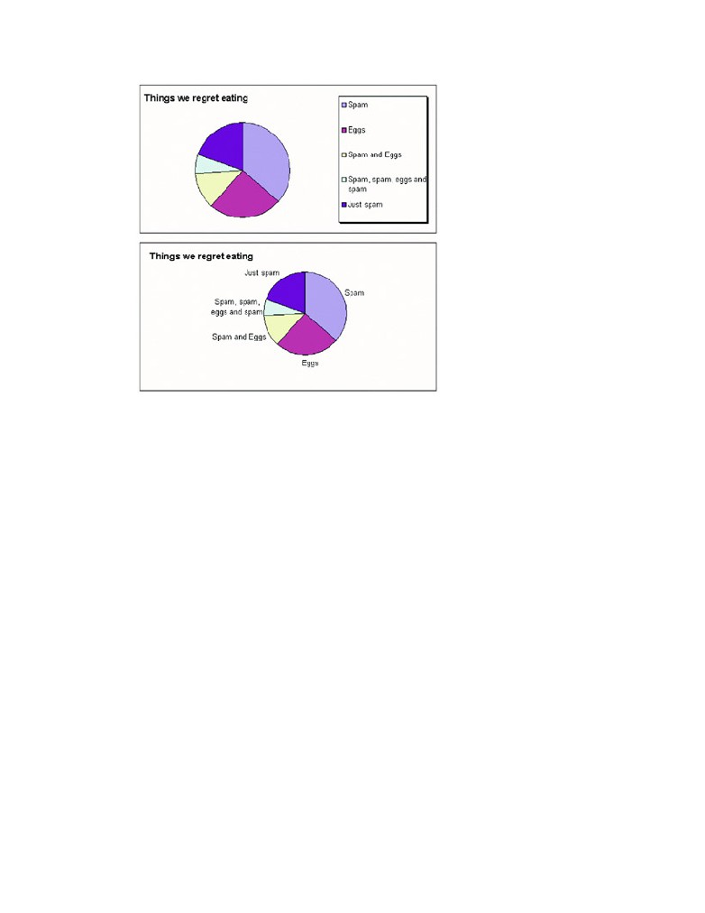
Figure 16-1: People have trouble remembering color codes. Don't rely on color to
convey meaning.
There's another important reason you can't rely on color to convey meaning: many people
can't see it. No, I don't mean the old timers who still have green-on-green screens. But about
5% of all males (and a much smaller number of females) have some degree of color
blindness and simply cannot distinguish colors (particularly red and green, which is why
stoplights are vertical).
Color can be used successfully for a few things:
1. As decoration—in pictures, icons, and text, where the effect is solely decorative.
2. To separate things—as long as you do not rely on the color as the only indicator, you
can use color as one distinguishing factor, for example, by using a different color and
a larger font for headings.
3. To indicate availability—by using grey to indicate an option that isn't available. Even
most colorblind users can distinguish greys from blacks. Similarly you can use lightly
shaded backgrounds to indicate areas where the user can't edit, and white
backgrounds to indicate areas where the user can edit. This has been a GUI
convention for so long that most people understand it subconsciously.
Always honor the system color settings, that is, the colors that the user chose in the control
panel. Users have deliberately chosen those colors to give their computer the color scheme
they like. Also, many of your vision-impaired users have deliberately set up schemes that
they can see more clearly. (For that matter, always honor the system fonts so that your text
is readable by people who prefer larger fonts.)
Know How to Use Icons
A picture is worth a thousand words, you think? Well, not if you're trying to make a picture of
the "schedule meeting" command and you've only got 256 pixels total to do it in. (I know, I
know, now you're all going to email me your clever icon renditions of "schedule meeting" in
256 pixels…) Here's the trick with icons. As a rule of thumb, they work pretty well for nouns,
87
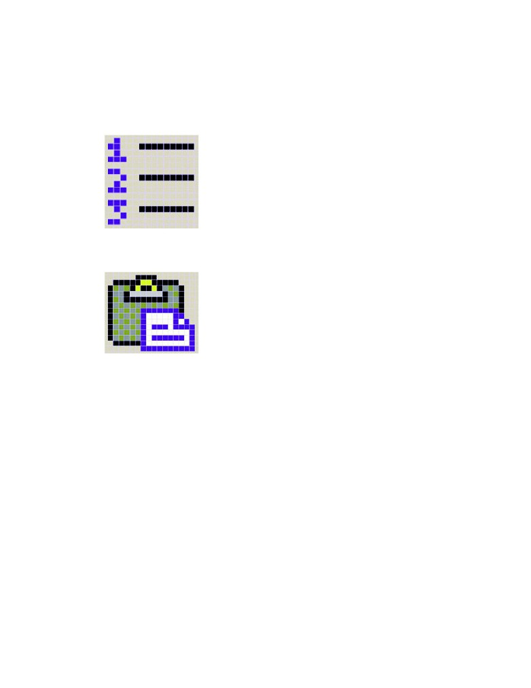
especially real-world objects, where you can create an icon by making a picture of the thing.
But they don't work so well for verbs, because 16 × 16 is not a lot of space to show an
action. In a typical word processor, the icon for numbered lists (Figure 16-2) is amazingly
obvious. Hey, it looks like a numbered list! But the icon for "Paste" (Figure 16-3) is not so
obvious. Even after you've learned it, it requires too much cognitive effort to recall.
Figure 16-2: The icon for numbered lists is just a picture of what it does, so it's easy to
recognize.
Figure 16-3: The icon for Paste is attempting to depict a verb, so it's not very easy to
recognize.
Know the Rules of Internationalization
You may not be internationalizing your product now, but chances are, you will. The cost of
translating a software product is far less than the cost of writing it in the first place, and you
can often sell as many copies in a second language as you can in the original (especially if
the original language is Icelandic, and you're translating it to English.) There are a lot of rules
about how to write good international software, which are beyond the scope of this book. In
fact, there are whole books on the topic. But for user interface design, there are three crucial
things you should try to keep in mind.
Rule One: the translated text is almost always longer than the original. Sometimes it's
because some languages like to use forty-seven-letter words for the simplest concepts.
(Ahem! You know who you are!) Sometimes it's just because when you translate something,
you need more words to convey the exact meaning of the word in the original language. In
any case, if your user interface relies on certain important words fitting into a certain number
of pixels, you're almost always going to have trouble when you go to translate it.
Rule Two: think about cultural variables. Americans should realize that phone numbers are
not always seven digits long with a dash after the third digit. If somebody's name is X Y,
don't assume that they are Mr. Y; they could just as well be Mrs. X. Non-Americans should
remember that Americans don't have the foggiest idea what a centimeter is (they think it's a
multilegged creepy-crawly). Microsoft Excel uses a U.S. dollar sign icon ($) to format cells as
currency, but in non-U.S. versions of Excel, they use an icon showing coins instead. And
don't get me started about lexical sort orders or the odd way the Swedes sort things—you
88
could never find yourself in the phone book in Stockholm, even if you lived there and had a
Swedish telephone, and so forth.
Rule Three: be culturally sensitive. If your software shows maps, even for something
innocuous like time-zone selection, be real careful about where the borders go, because
somewhere, someone is going to get offended. (Microsoft now has a full-time employee who
worries about this, after Windows 95 was banned in India for failing to reflect India's claim on
Kashmir—a matter of a few pixels in the time-zone control panel.)
Don't use a little pig for your "Save" icon (get it? Piggy banks? Savings?) because piggy
banks aren't universal. In fact, don't use puns anywhere in your user interface (or in your
speeches, or books, or even in your private journal; they are not funny). Don't use a hand
palm-up to mean "stop," because it's offensive in some cultures.
In general, don't release software in another language without doing a little bit of cultural
testing on native speakers. I had a scanner once that displayed a dialog box saying, and I
quote: "The Scanner begins to warm up!" The upper case ‘S’ in "scanner" was proof, but the
whole sentence just sounds like it was written in German and translated to English (as,
indeed, it was). Weird, huh? There's nothing grammatically wrong with it, but it doesn't sound
like something a native English speaker would say. One famous program from Australia,
Trumpet Winsock, made Americans think that it was written by an illiterate moron, mainly
because it used the word "Dialler" all over the user interface, which Americans spell,
"Dialer." To an American, using two ‘L's looks like the kind of mistake a young child might
make. (Other Australian spellings, like "neighbour," look merely British to the average
American, not illiterate).
The best way to become culturally sensitive, I think, is to live in another country for a year or
two, and travel extensively. It's especially helpful if that country has nice warm beaches, or
wonderful cultural institutions, or spectacularly beautiful people. Great restaurants also help.
You should ask your boss to pay for this as a part of your UI training. And when you've
figured out where the best beaches and restaurants are, you should top off your training with
a course in UI design from someone like, ahem, myself.
89
Chapter 17: Designing for the Web
Overview
The Web is an incredibly diverse medium. It's impossible to provide hard-and-fast rules that
apply equally to a toy store, a movie site, a newspaper, a graphic designer's portfolio, a
teenager's journal, and the IBM full-text database of all patents issued since 1971. Many of
the books about Web usability seem to assume you're making a corporate site or an e-
commerce site. So they are full of rules like "Flash is Bad!" which are just too single-minded
to possibly be correct for the wide variety of Web sites out there.
All the principles I've talked about up until now are just as important when you're designing
Web sites. Your Web site will be usable if the user model matches the program model. For
example, almost every Web site has a little logo in the top left corner, and when you click it,
it almost always takes you to the home page. This is so common that people have come to
expect it. That's the user model. If your Web site has a logo in the top left corner, and
clicking on the logo doesn't do anything, people are going to have trouble using your site.
The user model says that things that are blue and underlined are links. If your graphic
designers think that underlines look ugly, and they don't underline the links on your site,
people won't click. Bonk.
But there are two specific problems you have to watch out for when you design for the Web:
time delay and the limitations of HTML.
On the Web, Nobody Knows You're on the Moon
One of the biggest restrictions in designing for the Web is another time-travel problem like
the ones discussed in Chapter 14. On the Web, the problem is time delay, also known as
lag. When you talk to a user through the Web, it takes them a long time to hear you. Several
things conspire to create the slow response time of the Web: slow modem speeds, slow
servers, and general Internet latency. Really, really fast pages under optimal conditions
might load in a couple of seconds, but in many cases, pages can take fifteen seconds to a
minute (or even more) to appear. Your users, for all intents and purposes, are on the moon.
Think of a Web application like, for example, the New York Times. You've got a page with a
bunch of headlines. When you click on a headline, a new page loads where you can read
the entire story. If reading each story takes ninety seconds, and pages take ten seconds to
appear, you are spending 90% of your time reading, which is pretty decent.
In an effort to move up in the Web ratings, the New York Times recently started splitting up
each article into two or more Web pages. Hmmm. Now we're spending around 80% of our
time reading, which is a little bit less usable.
But wait, it can get worse. As soon as you're developing an application for the Web, as
opposed to merely a newspaper or content-based site, things get really clunky. HTML was
designed for simple interactions. "Show me this page. Now show me that page. Oops. That's
not what I meant, take me back to where I was before." As soon as the interactions get more
complicated, HTML starts to look like pretty thin soup. Here's an example.
iPrint.com is a pretty neat service that I've been using to print the business cards for my
consulting company. You can design your business cards over the Web, and when you're
done, they print them and mail them to you. Using the iPrint.com interactive designer, you
can add text, move things around, change fonts, add logos, and so forth. Every time you try
to do something like move the logo a smidgen to the left, it requires a round-trip to the Web
90
server, which, today, is taking me about half a minute. As you edit the business card, you
spend about two seconds thinking about what to do next, and then half a minute waiting for
the result, which means you spend more than 90% of your time waiting. This can get kind of
frustrating. It's especially frustrating when you're trying to "tweak" the sizes and positions of
objects (see Figure 17-1). Don't get me wrong; the designers of iPrint.com have done a
heroic job of trying to work within the limitations of HTML, but designing business cards this
way is just too dang painful compared to using, say, a thirteen-year-old copy of MacPaint.
Figure 17-1: Whatever happened to click and drag? Moving something around on
screen is the perfect application for a mouse, but it's basically impossible using HTML.
Web interfaces that make you spend so much time waiting just feel clunky, like an old one-
speed bicycle with some teeth missing from the gear. At an emotional level, when you get
results immediately, you are happy because you feel like you're in control. When you have to
wait, you become unhappy. If you have to wait twenty-three times to make a business card,
the unhappiness will start to accrue.
A better technology for creating complicated UIs like this might be to use Dynamic HTML or
Java Applets. At the very least, your users can lay things out on the screen using a point-
and-click interface that responds immediately. Many Web designers have given up on Java
Applets for mission-critical work because of the long downloads, the compatibility problems
that make it "write once, debug everywhere," and the fact that Java UIs look kind of weird,
they don't match the operating system UI exactly. Dynamic HTML has even worse
compatibility problems. This is one of those hard trade-offs you always have to make as a
designer. Sigh.
91
Here's another example of the time delay problem: email software. A common activity in
managing your email is deleting messages. Some days, all I really have time to do is delete
messages. Every couple of weeks, 7,326 messages have accumulated in my inbox, and I
need to prune away, at the very least, the stupidest of the jokes that were forwarded to me
and the "opportunities" to erase credit card debt or unsightly blemishes.
With a Windows email program like Eudora or Outlook, selecting a message and deleting it
can be done virtually instantaneously. Click the mouse, press the Del key, all done! So
picking 34 messages from your inbox and deleting them all is quite easy and not unpleasant.
(Except on those odd occasions when certain email programs, for some inexplicable reason,
decide to potchke around reindexing their files, so the delete operation takes six hours and
displays a progress indicator. But that's rare.)
When you're using a Web-based email system like Hotmail, that message about Microsoft
buying Norway is stored away on a server. So when you delete it, a message has to be sent
to the Web server, which is probably pretty busy delivering spam to a few million people.
Eventually the server gets around to processing your request and deleting the message, but
then the server has to requery the database to see what messages you still have left in your
inbox, construct a new HTML page with the shorter list, stick a flashing-monkeys ad on the
top, and send it all back to you over the Internet and a modem that's advertised as 56K but
which really never really connects any faster than 43K (those crooks!).
Anyhow, the end result is that a single delete operation takes thirty seconds of user time, not
zero seconds. It wouldn't be the end of the world if you were just deleting one message. But
we're deleting 34 messages, remember? Which now theoretically takes seventeen minutes,
but it probably takes a lot longer, because while you were waiting for the fourth message to
be deleted, the cat jumped up on your desk and spilled a cup of hot tea and ran away in
fright, and now you have to decide whether to chase the cat and mollify her, or get some
paper towels to wipe up the tea before it ruins another keyboard. Frustrating, huh?
Most designers of email-on-the-Web interfaces are aware of this time lag, and they've
compensated for it by putting little checkboxes next to each message (see Figure 17-2). You
can check off a bunch of messages and delete them all at once. That's a pretty good way to
reduce frustration. Although it's not the most intuitive thing in the world, it sure is better than
nothing. We're working in a difficult medium here, and we'll take anything we can get. In
general, a good rule for Web services is:
92
Figure 17-2: A good example of reducing round-trips: Web-based email providers
usually give you little checkboxes so you can delete a bunch of messages with one
round-trip to the server.
On the Web, every click results in a round-trip to the server, which reduces
usability. Design to minimize round-trips.
Another example of this rule can be seen in Web discussion sites. There are lots of different
interfaces for discussion groups on the Web, but they basically fall into two categories: the
type of interface that shows you one message per page (like The Motley Fool or Yahoo!
Finance), and the type of interface that shows you a whole bunch of messages all on one
page (like Slashdot.org, famous for its highly usable, if not learnable, discussion interface).
If you were actually reading up until now, as opposed to daydreaming about something more
interesting like Ultimate Frisbee, you should be able to figure out which one I think is better.
Even though Yahoo! has a super fast Web server, when you try to read discussions on
Yahoo!, you spend a lot of time waiting for the next message to arrive and then getting
frustrated when it turns out to be moronic. But when you try to read discussions on Slashdot,
all you have to do is scroll down through a long Web page; it's much more fluid, there is no
waiting, and you can skip over morons as fast as you can move your eyeball. Within a few
minutes you know that everything posted up there is moronic and you can just go play
Ultimate Frisbee before it gets dark.
The single-page discussion UI probably exists because those sites are supported by ads,
and the more pages you look at, the more ads they can try to show you. Not that you'll care.
If you're actually following a discussion, you are not going to look at the ads. If you track the
pupils of someone following a discussion, I'll bet that they never once look anywhere near
the ad banner as they flip from message to message in the discussion group. The banner
could contain a row of flashing orange naked monkeys offering you fifty thousand dollars in
actual United States cash if you would just click here, but nobody would notice. It doesn't
matter, because those sites get paid for every ad they show you, and they are generally
happy to ruin their user interfaces if it means a few more advertiser dollars.
HTML Is Not a Windowing System
93
The next big limitation of the Web is that Web pages just can't do everything that you can do
with a modern, state-of-the-art windowing system, or even with an utterly obsolete
windowing system, say, the original Macintosh from 1984. There are just too many things
that you can't do.
Menus are one example. Suppose you have a Web site which serves customers in several
countries. On the home page, you would like to have a link to the specific site for each
country where you do business. For a large company, that could be eighty countries. There's
just not enough room to have a link to each of them.
Well, you could have a link on the home page that says "Worldwide Sites," which goes to
another page with links for every country. This requires two clicks just to get into the site,
which is going to cost you a lot of visitors who just get fed up and click away to
AmIHotOrNot.com to look at cuties.
A more common approach is to try to create a dropdown menu. A dropdown menu is the
Murphy Bed of GUIs. It's a real-estate gimmick to fit a lot of stuff into a little space.
Unfortunately, HTML doesn't have dropdown menus. The feature just doesn't exist.
There are two common ways Web designers try to work around the lack of menus.
The first is by constructing some kind of JavaScript/Dynamic HTML menu-like thing. That
works OK, but it's not terrific, because not all Web browsers support JavaScript and
Dynamic HTML, and when they do, the implementations are usually buggy enough that
every incremental release of every browser is likely to break your script. Not only that, but
when you are done, your carefully created menu probably does not work in exactly the same
way as a regular menu. The dropdown menus on Microsoft's current home page are really
more like fall-down menus that plop down if you even move your mouse over them. In
Windows itself, the menus won't drop down unless you click on them. The lack of
consistency, as I have hopefully drilled into you by now, can create usability problems.
A slightly easier way to provide menus in a Web page is by using a dropdown listbox, which
sort of looks like it might be a menu, but, um, no, it's not a menu. It is visually different (see
Figure 17-3). It doesn't behave like a menu. In GUI apps, there has been a long-standing
rule that changing an item on a dropdown should not take any major action like navigating. It
is only supposed to be used to change a setting. You still have to press an OK button to take
the action. One good reason that this rule exists is that dropdown listboxes require a lot of
mouse-dexterity (see Chapter 10), and as you know, people can't use the mouse.
94
Figure 17-3: Using dropdown listboxes for menus is inconsistent and confusing.
Many clever Web designers have realized that by using JavaScript, you can detect when the
user has changed the contents of the dropdown. So they make a dropdown which actually
navigates for you as soon as you choose something. This is almost always a bad UI. When
the user makes a mistake and selects the wrong item, which is quite common, they will find
themselves navigated to a new page. And they will be surprised by this, too, because the
GUI convention for dropdown listboxes is that they don't take any action. Whenever you
surprise people, you are by definition making a bad UI choice. If the user lets go of the
mouse button on the wrong choice and the page flips right away, they will have to back up
and start over. Frustrating.
Another thing that's really hard to do well in HTML is make a dialog box. Some designers
have attempted to simulate dialog boxes by popping up a secondary window. But that's not
quite good enough. The secondary window is not a child window of the main browser
window, so it doesn't stay on top. If you click back on the main window, the secondary
window gets covered up. And the secondary window must load its contents from the Web,
which is going to take some time. By now, many people have come to associate secondary
windows with ads. Many people will just automatically hit the close box before they even
realize you're showing them a dialog box, not an ad. (Leave it to advertisers to spoil it for the
rest of us.) Yet again, the limitations of HTML foil our attempts to use common GUI
metaphors.
The closest thing you can do to make a dialog box is simply to navigate to another page with
a form on it. That's not quite as good as a real live dialog box. Why? Well, a dialog box pops
up on a window above your work, which is a real-world metaphor that gives people
confidence that their original work hasn't gone away, it has merely been interrupted. Without
overlapping windows, people lose their bearings and forget where they are and how they got
there. But for now, it will have to do.
Yet another thing you can't do on the Web is provide a decent text-editing widget. The best
you can do is put up a big TEXTAREA, which is about as user-friendly as Windows' Notepad
without the Save command. When you're composing a really long email to your Aunt Marge
with Hotmail, there's no way to save your work regularly. So if you accidentally close the
Web browser, the entire three-page story about how the neighbor's ferret got into your grape
pie is just lost. This doesn't happen with regular email programs which have a Save
command and which don't let you close windows without prompting you to save.
95
Use the Web Browser's UI
Let's think for a minute about what makes a Web browser so easy to use in the first place. It
only has a three interface features you need to learn about to be productive:
1. Clicking on a link
2. Scrolling
3. Clicking on the Back button (optional)
A very distant fourth is filling out forms, so you can order Harry Potter books from
Amazon.com. Almost everything else in the UI is fluff. That's why Web browsers are so easy
to use.
Historical Note
Some early Web usability gurus did some usability tests and discovered that people
don't know how to scroll. What they failed to notice was how quickly people learn this
skill. Once again, they confused usability with learnability. In the meantime, an uncanny
amount of damage has been done by Web site designers who try to cram their sites into
a tiny rectangle so that their site is viewable without scrolling, usually by using a font so
small most people have to strain to read it. Luckily, the "nobody knows how to scroll"
superstition is wearing off.
One assumption we've been making all along is that when you make a Web site, you have
to design a UI for it. But the interesting thing is that almost anything you can do to avoid
designing a UI is probably going to improve the usability of your site. If you rely on links
instead of making a funny dropdown navigator, all the people whose brains are only just
large enough to remember those three primary interface features will still be able to use your
site.
One thing sort of amusing about this is that it seems to be a general rule that the fewer nifty
features you use, the more usable your site will be, because people have already figured out
the default Web browser UI:
If you don't change the color used to display links, the Web browser's defaults will
apply. These defaults provide a different color for visited and unvisited links. So, people
will be able to see at a glance which parts of your site they've visited, making it easier to
scan through and avoid reading things twice.
If you don't use GIF images for buttons, but just use buttons instead, your buttons will
look the same as all the other buttons on the Web and people will realize that they can
push them.
If you don't use funny redirects, you won't break the Back button on Web browsers
and people will be able to back out of your site.
If you don't use Flash or Shockwave for your content, Web search engines will be able
to index your site, so people searching for your site will find it. If you use a cool Flash
animation for all your press releases, your press releases will not be available to search
engines and fewer people will find them.
If you don't use frames, people will be able to create shortcuts to any page on your
site. They will be able to cut and paste the URL from the address bar into an email
message. If you use frames, the address bar doesn't necessarily change to reflect the
current frame contents.
These are just a few examples of how limiting yourself to the most basic features of HTML
can make Web sites more usable. Basically, the Web evolved a little too quickly. All the neat
96
features that were added since the earliest versions of HTML weren't really deeply
integrated into the structure of the Web, so today they are not universally available and they
are not universally understood. Flash and Java applets are some of the worst offenders,
because they create a rectangle of lawlessness, inside of which every designer has to
reinvent the user interface from the ground up, something which is rarely done in a
consistent way.
Bottom line:
The fewer cool Web features you use, the more usable your site will be.
Please don't let this stop you if you are making a site that's meant to be entertaining rather
than useful. Usability is not everything. If usability engineers designed a nightclub, it would
be clean, quiet, brightly lit, with lots of places to sit down, plenty of bartenders, menus written
in 18-point sans serif, and easy-to-find bathrooms. But nobody would be there. They would
all be down the street at Coyote Ugly pouring beer on each other.
97
Chapter 18: Programming for Humans
My sense of user sympathy as a moral imperative (rather than just a way to sell more
software) started when I heard a story from an Excel usability test. A woman came in to test
the software. When she wasn't able to complete the assigned task, she actually broke down
in tears. Ken Dye, the usability lab manager, told me he had to walk her around the idyllic
Microsoft campus until she felt better. After that, we were always very careful to explain to
usability participants that we were testing the product, not their performance, and we
expected that they wouldn't be able to accomplish some tasks. Not that that helped. People
feel miserable when they can't accomplish a task.
I was reminded of a story about the task list in Microsoft Outlook. In the original design,
when you completed a task, it was simply deleted from the list. Logical. But the designers
discovered that people had more of a sense of accomplishment if they could actually cross
the items off the list, and this made them happier. So now, when you mark a task as
completed, Outlook draws a line through it rather than making it disappear completely (see
Figure 18-1).
Figure 18-1: The Outlook task list actually crosses off items as you complete them,
simply because it made people happier.
Mahatma Gandhi considered it violence against nature to throw away even the stub of a
pencil because it wasted the world's resources. And he considered it violence against
humanity, too, because our over-consumption denies resources to people who live in
poverty. The Talmud was concerned about even tiny acts of waste: as little as a mustard
seed, which was considered the smallest thing the human eye could see. Even passing a
glass of water over a loaf of bread at the dinner table was forbidden, because if the water
spilled, the bread would be ruined. What they're both teaching us is that small things matter;
that everyone has opportunities all the time to improve the world in a tiny way, to show
respect for all living things.
Usability, fundamentally, is a matter of bringing a bit of human rights into the world of
computer-human interaction. It's a way to let our ideals shine through in our software, no
matter how mundane the software is. You may think that you're stuck in a boring, drab IT
department making mind-numbing inventory software that only five lonely people will ever
use. But you have daily opportunities to show respect for humanity even with the most
mundane software. Even if you are just working on a code library, an API that is invisible to
everyone but other programmers, if you can design the API in a way that is consistent, easily
understood, more obvious, and easier to get right, the programmers who use your API will
98
be happier. By focusing on usability, you show your respect for the happiness of the people
who run your code.
That's why I care deeply about usability, and you should, too.
99
Shockingly Selective Bibliography
One of the things that continuously surprises me is just how few resources about user
interface design are out there. Rather than include a huge bibliography that you may ignore,
I've decided to include just six books, because I actually think you should go out and buy all
of them. They are all that good.
Krug, Steve. Don't Make Me Think. Simon & Schuster Trade, 2000.
Laurel, Brenda (editor). The Art of Human-Computer Interface Design. Addison-
Wesley, 1990.
Nielsen, Jakob. Designing Web Usability: The Practice of Simplicity. New Riders
Publishing, 1999.
Norman, Donald. The Design of Everyday Things. Doubleday, 1990.
Tognazzini, Bruce. Tog on Interface. Addison-Wesley, 1992.
Tufte, Edward R. The Visual Display of Quantitative Information. Graphics Press, 1992.
There are also a few Web sites worth visiting regularly:
useit.com : Jakob Nielsen's Web site on usability
asktog.com : Bruce Tognazzini's Web site on usability
100